深入理解 DeepSeek Harness
从微内核底座到工业级工程落地
中文项目教材全景版 · 19 章系统编排 · 2026-10-03 · 深度源码解析 · 附原创架构图、源码级证据块与 19 套面试问答 基于官方固定基准提交 639ed015397290b3745d163aafe02ffee4aa3f84 (dsh@0.2.0-rc.2) 理论依托：DeepSeek-AI & 北京大学论文《A Programming Paradigm for Spatiotemporal Composability》(arXiv:2608.25512)
全书目录与知识演进树
第一部分：核心构建与运行时原理 (01 ~ 10)
- 第 1 章｜从一句话到一个结果：智能体运行框架究竟做什么
- 第 2 章｜读懂代码：类型与异步等待
- 第 3 章｜循环与消息队列：一轮任务为什么需要多步
- 第 4 章｜沿文件读取工具追到底：模型怎样得到材料
- 第 5 章｜会话与日志：发生过的事怎样保存和还原
- 第 6 章｜提示词与项目指令：下一次模型输入怎样形成
- 第 7 章｜技能的按需读取：目录可见为什么不等于正文已加载
- 第 8 章｜上下文压缩：让历史变短需要付出什么
- 第 9 章｜流式输出与重试：一次失败怎样留在同一步里
- 第 10 章｜插件框架与运行配置：这些部件怎样装成一个应用
第二部分：安全、交互、度量与多 Agent (11 ~ 18)
- 第 11 章｜工具准入与审批：允许执行的决定在哪里发生
- 第 12 章｜外部服务与能力接入：连接成功不等于拥有知识库
- 第 13 章｜子代理：拆分任务前先看上下文起点
- 第 14 章｜网页端：提交任务与跟随结果是两条链
- 第 15 章｜桌面端：窗口、页面与宿主服务怎样合作
- 第 16 章｜测试与回放：复现通过究竟证明了什么
- 第 17 章｜量化评价：同时看质量、时间、用量与失败
- 第 18 章｜综合案例：已有文件工具如何接入与呈现
第三部分：理论奠基与数理升华 (19)
# 第 1 章｜从一句话到一个结果：智能体运行框架究竟做什么
## 01.0 从一个可见任务开始
用户向编程助手发出指令：“读取这个项目的 README.md，说明项目用途，再总结三点。”数秒之后，终端或网页界面输出了结构化的三点总结。初学者直觉上容易认为大语言模型直接打开了本地硬盘上的文件并阅读了内容。大语言模型（LLM）本身基于输入文本计算概率分布并生成文本序列，受进程沙箱隔离，无法直接发起操作系统文件 I/O。
促成这项任务端到端闭环的核心是智能体运行框架（Harness）。在 DeepSeek Harness（简称 DSH）中，模型充当“提议决策方”，物理工具充当“执行落地者”，Harness 自身承担中枢调度：校验并接纳用户输入、拉取并装配多源材料、调度模型推理、实施工具安全准入与物理派发，并将全过程沉淀为不可变事实。
理解本节内容不需要预先掌握复杂的 TypeScript 语法，关键在于建立清晰的技术分界：模型负责什么、工具负责什么、框架负责什么；以及为什么在工程上“请求已被系统接纳”绝不等于“任务已经执行完成”。
## 01.1 先看材料怎样流动
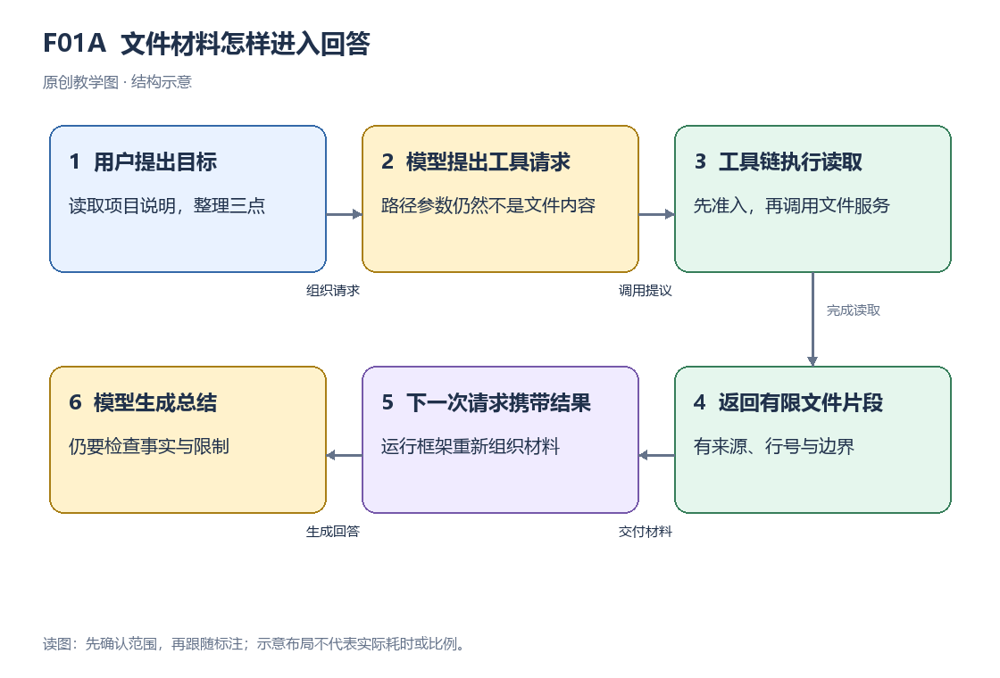
图 01A 呈现了这一场景下材料在系统组件间的流动路径。请顺着箭头顺序追踪一次真实的执行闭环：
- 任务接入与封装：用户提交任务文本，框架接纳该请求并封装为合规的消息数据结构；
- 初次推理与提议生成：驱动层组装包含系统规则与任务说明的上下文并调用模型。此时模型由于未曾读取文件，输出一段带有结构化工具调用（Tool Call）语义的提议，指定调用
read工具并传入参数{ file_path: "README.md" }； - 沙箱校验与物理执行：框架拦截该工具调用提议，经安全规则校验后调度文件服务实际读取磁盘上的文件内容；
- 材料回填与二次推理：框架将获取的文件文本片段以工具结果（Tool Result）的标准格式追加至会话历史中，作为事实材料再次送入模型；
- 总结提炼与终态输出：模型结合真实的文件内容生成针对项目用途的三点总结，框架记录轮次结束事件并向用户展示最终产物。
该流程明确揭示：整项任务中发生了两次相互独立的模型调用。两次调用可以由同一个底层大模型承载，但在时间、上下文依赖和工程目标上完全不同。物理工具执行后将文件内容通过框架回填至后续请求，形成客观材料。
## 01.2 一句话经过了哪些交接
用户输入在 DSH 内部经历五次严格的职责交接：
第一步，入口接纳交接：请求进入 SessionCommandController.prompt。控制器校验输入内容非空、定位目标智能体实例，并通过 hasPromptRequest 检查当前 requestId。若发现该请求已在处理，立即返回接纳确认，阻断重复提交；校验通过后，文本与上下文元数据封装为用户消息。
第二步，队列排入交接：控制器调用智能体的 followup 或 steer 方法，把消息放入 Agent 的收件箱队列（Inbox）。followup 针对常规下一轮次排队并唤醒驱动；steer 则作为引导模式插入下一步边界。
第三步，驱动与模型交接：Agent 驱动从队列中提取消息，初始化轮次（Turn），执行前置准入检查，将提示词、上下文历史与工具契约组装为规范请求，向模型后端发起网络调用。 第四步，提议与工具交接：模型返回的 Assistant 消息中若包含结构化工具调用，驱动层将提议交由通用工具执行管线 executeToolCalls。管线先落盘一条不可变的工具调用记录，随后调用具体工具实现（如文件系统服务）。
第五步，结果与二次推进交接：工具返回文件内容后，管线生成对应的工具结果消息并回填至会话。驱动检测到当前轮次尚未收敛，以回填的文件材料为输入发起下一步模型请求，产出人类可读的文字总结。
这五次交接构成了严密的因果链。链路中任何环节抛出异常（如权限不足、文件不存在、模型调用超时），仅代表该特定环节中断，决不能借由上一环节的成功断言整项任务的成功。
## 01.3 消息与事件先分清
在阅读 DSH 代码前，必须先在概念上严格区分“消息（Message）”与“事件（Event）”：
- 消息是面向人机对话语义的一等公民，例如用户提交的提示、助手给出的文字回复、工具回填的输出数据。它们是模型下一次推理时能够直接感知的上下文实体。
- 事件则是系统底层记录生命周期与运行时状态转移的不可变事实日志。例如“轮次开始（turn/start）”、“步骤结束（step/end）”、“工具调用发起（tool/call）”。
事件是系统底层的单一事实源（Single Source of Truth）。消息由特定事件（如产生文本或工具结果的节点）在特定视图表层上派生。前端界面展示的聊天气泡由框架根据不可变事件流动态计算生成。
## 01.4 在源码中看交接点
<!-- evidence:start -->
接纳入口。 目标被解析后，已识别请求直接返回 accepted；这不是最终回答。
来源：实际文件，第 329—335 行；固定提交。节选保留原码，省略邻近上下文。
const agent = await this.resolveAgent(request.sessionId)
if (hasPromptRequest(agent, request.requestId)) return { accepted: true }
const source: MessageSource = {
kind: 'user',
rpcId: request.requestId,
...(clientTimeZone === undefined ? {} : { clientTimeZone }),
}
输入交接。 两种方法都调用 send，但目标队列不同；执行细节在第三章。
来源：实际文件，第 163—169 行；固定提交。节选保留原码，省略邻近上下文。
followup(input: UserMessage): void {
this.send(input, 'next-turn', true)
}
steer(input: UserMessage): void {
this.send(input, 'next-step', true)
}
调用事实。 这里追加的是工具调用事实，并返回它的序号，结果会与调用关联。
来源：实际文件，第 263—266 行；固定提交。节选保留原码，省略邻近上下文。
function appendToolCall(session: Session, turn: number, step: number, block: ToolCallBlock): SessionSeq {
const event = session.append('tool/call', { turn, step, callId: block.id, name: block.name, arguments: block.arguments })
return event.seq
}
完整阅读路线。 路线区分启动前置、执行主链与提供方对照，不把它们误连为一次同步调用。
- packages/api/session-controller/src/commands.ts，
SessionCommandController.prompt。输入：用户内容、requestId 与会话；输出/交接：校验后向 Agent 排入输入；输出接纳结果。固定提交第 311 行。 - packages/core/agent-loop/src/agent.ts，
send / followup / steer；turn / step。输入：已排入的输入；输出/交接：驱动消费输入并组织模型与工具阶段。固定提交第 154 行。 - packages/core/agent-loop/src/tool-calls.ts，
executeToolCalls。输入：成功助手消息里的工具调用；输出/交接：产生有序提交的工具调用与结果；后续步骤可读取结果。固定提交第 60 行。
<!-- evidence:end -->
阅读时只追三件事：prompt 返回什么；followup 怎样安排输入；成功模型消息里的工具调用怎样变成 tool/call 和 tool/result。模型适配器、权限分支和全部界面组件现在都可以先略过。
## 01.5 分析示例：两个不同的耗时
分析一个真实的异步请求时，必须把前端可见反馈与后端任务终态解耦。设想如下教学场景的时间线：
- 提交请求发生在 0 ms，请求到达
SessionCommandController.prompt； - 30 ms 时，控制器完成静态校验与收件箱排入，向客户端返回
{ accepted: true }； - 900 ms 时，模型初次调用产生流式数据，客户端收到第一个可见文本 Token；
- 1800 ms 时，第二次模型调用完成，驱动生成
turn/end事件，全流程完结。
在此时间线上存在三个完全不同的指标：
- 接纳延迟：30 - 0 = 30 ms。它衡量入口吞吐与排队开销；
- 首 Token 延迟（TTFT）：900 - 0 = 900 ms。它衡量网络往返与模型首字生成速度；
- 任务完成时间：1800 - 0 = 1800 ms。它衡量涵盖所有步骤、工具执行与状态落盘的总耗时。
若将接纳延迟 30 ms 误当作任务完成耗时，会导致系统监控严重失真。及时接纳的核心工程价值在于保障客户端交互的低延迟响应，让用户界面免于卡顿；而任务本身的推进则完全交由后台异步驱动管理。
## 01.6 把正常路径与失败放在一起
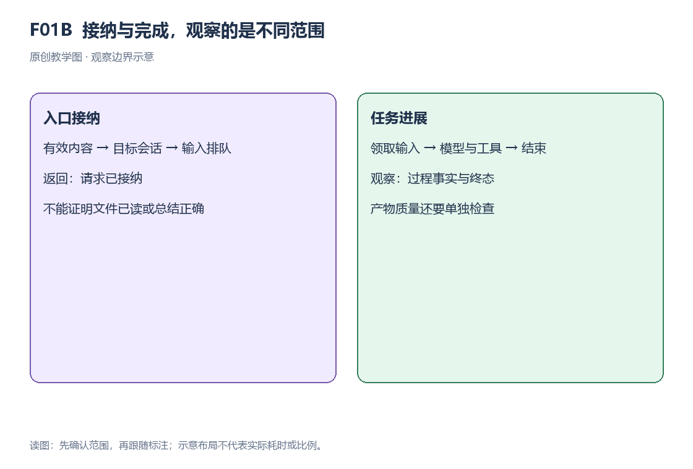
图 01B 展示系统在不同阶段遭遇故障时的边界划分。物理故障（如磁盘读取无权限、模型限流重试超限）均发生在入口接纳成功之后。
客户端收到 accepted: true 之后，后台任务依然可能由于各类原因走向失败。若读取 README.md 遭遇文件不存在，工具执行器构造包含错误信息的 ToolResult 消息并回填至历史，赋予模型在下一步感知错误并给出合理解释的机会，保持框架主进程稳定。
工程排错沿因果链依序核查：先查入口是否接纳，再查驱动是否启动，再查模型是否返回合规 Tool Call，最后查工具执行状态与终态事件。
## 01.7 常见误解
- “模型给出了项目用途，说明它一定成功读取了 README.md”：大模型具备庞大的通用先验知识，可能仅根据项目名称、上下文线索或自身参数记忆进行臆测推导。要证明模型依据了真实文件，必须审查会话事件中是否存在对应的
tool/call与tool/result事实。 - “工具执行返回成功，代表最终总结必然准确”：工具执行成功仅证明物理 I/O 正确返回了字节流；模型在后续归纳过程中仍可能产生遗漏、误读或信息幻觉。工具成功是必要条件，不是充分条件。
- “accepted 代表任务成功完成”：在 DSH 架构中，
accepted仅是入口层面的排队契约，绝对不能用来指代业务终态。
## 01.8 小结与参考
一句话任务能够转化为可核验的结果，仰赖于五个阶段的协同：命令接纳、消息排队、模型提议、物理执行与材料回填。会话事件日志记录了客观历史，前端视图提供实时反馈，二者均不能代替最终产物的准确性校验。你现在应能指出每段交接的负责人；下一章学习读懂这些交接在代码中的表达。
<!-- references:start -->
原项目文档用于复核，优先保留已有中文版：
行为旁证为测试源码，未在本次执行：
<!-- references:end -->
本章面试问答
本节把本章机制改写成面试官会追问的问题。回答分两层：先给可直接使用的回答，再用"原理"解释机制背后的设计原因。引用的文件与行号属于固定提交 639ed01，可在可选证据附录复核。
Q1 · 用户敲下一句话到看到回答，中间经过哪些责任交接？哪一步最容易被误认为是"模型自己做的"？
考察点：是否真的理解 Harness 的角色边界，还是把一切归功于模型。
回答：五次交接。①会话命令控制器的 prompt 方法（packages/api/session-controller/src/commands.ts，第 311 行起）校验内容非空、解析目标智能体，并用 hasPromptRequest 识别重复 requestId——已识别的请求直接返回 {accepted: true}（第 329—335 行），不会再排一次；②有效文本构造为用户消息，经 followup 或 steer 进入收件箱（packages/core/agent-loop/src/agent.ts 第 163—169 行）；③驱动开轮次（记录 turn/start 事件）、跑 preStep 前置准入、进入步骤发起模型请求；④成功消息里的 tool-call 块交给 executeToolCalls（packages/core/agent-loop/src/tool-calls.ts 第 60 行），每个调用先记录一条 tool/call 事实并拿到序号（第 263—266 行），结果之后与这个序号关联；⑤文件片段进入会话历史，组装下一次请求时模型才有机会基于它回答。最容易被误解的是第④步：文件是执行体通过 ctx.fs 文件服务读的，模型只提出了路径参数；以及 accepted 只是接纳契约，不是回答。
原理：这样设计的核心原因是"提议与执行分离"。模型的输出在协议上只是结构化提议（工具名、参数），真正作用在外部世界的动作由框架持有并记录。这带来三个可依赖的性质：权限判断发生在框架层而不是模型输出层；每个动作都有 tool/call 事实可审计；文件内容必须真实进入请求材料，回答才有可检查的依据。若把执行权交给模型输出本身，"模型说读了"和"真的读了"就无法区分。
追问：为什么 accepted 不等于成功？向产品经理解释一遍。 回答要点：接纳延迟、首段输出时间、终态时间是三个不同的钟（教材 1.1.6 的 30 ms/900 ms/1800 ms 教学示例）；接纳解决"系统收到了"，终态要靠轮次结束事件与产物检查，两者不能互相替代。
Q2 · turn、step、attempt 三层边界怎么划分？为什么不是一个大循环？
考察点：循环结构设计、失败归因能力。
回答：轮次（turn）由驱动管理，以 turn/start 与 turn/end 事件为界；进入前先跑 preStep，拒绝时该轮以 blocked 结束，可以一步都没走（agent.ts 第 303—319 行：先记录 turn/start，phase.turn 加一，循环内先做前置决定）。步骤（step）是"一次模型请求＋成功后的工具阶段"；尝试（attempt）是本步内一次模型请求尝试，失败恢复在同一尝试循环里进行——只有错误恢复链返回 retry 才继续，否则抛出 LlmError（agent.ts 第 505—509 行）。教材 1.3.6 的教学轨迹：1 个 turn、2 个 step、3 次 attempt、1 次工具调用。
原理：分层的目的把不同原因的失败放进不同抽屉。attempt 层解释"这次模型请求为什么失败、重试了几次"；step 层解释"工具阶段有没有执行、材料是否进入下一步"；turn 层解释"这轮任务为什么结束（完成、阻塞、取消）"。合成一层循环时，重试次数、工具副作用和任务终态会被搅在同一个计数里，日志分析与回归定位都要靠字符串猜。分层后每一层有自己的事件（turn/start、步骤边界、attempt 记录），统计与回放都有明确锚点。
追问：steer 输入为什么不能打断已经发出的模型请求？ 回答要点：steer 只是声明领取时点（next-step），请求在提交时已冻结（教材 2.1.3）；已发出的请求不能被后到的一句话倒回去修改，新输入在下一步边界被领取并参与下一次组装。
Q3 · followup、steer、inject 三个入口差在哪？为什么需要"不唤醒"的注入？
回答：agent.ts 第 163—173 行，三者都调用 send，差异在两个参数：followup 投给 next-turn 并唤醒；steer 投给 next-step 并唤醒；inject 投给 next-step 但第三个布尔值为 false，不触发唤醒。收件箱变更经 mutate 先更新投影状态再通知监听者（packages/core/agent-loop/src/inbox.ts 第 198 行），所以通知回调里查到的是新状态。
原理：区分"进入时点"与"是否启动工作"是队列设计的关键。进入时点决定输入影响哪次组装（本轮还是下一步），唤醒与否决定空闲驱动是否启动。外部观察者（例如工具结果回填、插件投递材料）只想把事实放进队列，不该有"把空闲系统吵醒"的副作用；否则多次注入会引发多次唤醒竞争，破坏"同一会话一个驱动"的约定。把两个自由度拆成两个参数，接口就无需为每种组合再加方法。
追问：空闲时 inject 的输入什么时候被消费？ 回答要点：留在队列里，直到下一次驱动因别的原因运行才被领取；不能期待注入动作本身让任务启动。
Q4 · "工具注册"与"工具执行"在代码上如何区分？这个区分有什么调试价值？
回答：注册发生在插件 apply 阶段：applyReadTool 调用 ctx.tools.register(defineTool({...}))，对象里的 async execute(...) 只是属性值，尚未运行（packages/fs/tool-fs/src/read.ts 第 77—84 行）。执行发生在模型消息出现 tool-call 块之后：工具链 prepareExecution → dispatch（packages/core/tools/src/index.ts 第 1493 行起）重新解析可执行工具并调用真实 execute。启动时注册 3 个工具、运行期执行 1 次调用，是两个不同计数。
原理：注册表让"模型知道有哪些能力"与"能力被使用"解耦。模型在请求材料里看到的是工具 schema（名称、参数契约），这只是目录；运行时准入（第 4 章的 pre-execute → ask → guard）决定某次调用是否兑现。调试"提交成功但没有回答"时，这个区分给出一条排查链：接纳返回了 accepted 吗→收件箱与驱动状态如何→attempt 是否失败→工具是被拒绝还是执行出错。每一层有不同的证据，不会把所有故障都归因为"模型没答"。
追问：ReactLoopAgent 里的 React 是前端框架吗？ 回答要点：不是，指 ReAct 式"推理—行动"循环；判断一个类的职责要看方法、依赖和调用位置，不能靠同名联想。
Q5 · 手写一个 Agent 和用现成 Harness（如 DSH）搭，本质区别是什么？
考察点：对 harness 价值的理解深度（真实面试题）。
回答：手写时，循环、材料组装、工具准入、状态保存、失败恢复、评测口径都要自己实现，第一版通常只覆盖顺利路径。Harness 把这些变成显式契约：输入有接纳与收件箱语义（Q1）、推进有 turn/step/attempt 边界（Q2）、动作有准入与审批（第 4 章）、事实有追加冻结与派生视图（第 3 章）、行为有回放与投影可验证（第 7 章）。代价是必须理解并遵守这些契约——自由度下降，但每个现象都能落到"哪一层、什么条件、什么证据"。
原理：本质区别不在代码量，而在"变化有没有落点、行为有没有证据"。手写系统的知识散落在函数和个人约定里，换人即失传；harness 把协作规则固化为注册、事件与边界，使能力替换（换模型、换文件后端）、行为复现（回放固定模型响应）、效果比较（统一计量）成为框架保证而不是个人纪律。这也是教材第 9 章"持续改进"的前提：没有可观察事实，改进只能是猜。
# 第 2 章｜读懂代码：类型与异步等待
## 02.0 不懂所有语法，也能追一个问题
打开源码后，你可能看见 interface、Promise、async、await、泛型和许多导入。初学时先判断：哪些文字描述数据形状，哪些语句真的做事，函数返回究竟意味着什么。本章通过任务接纳入口建立这三种阅读能力。
代码阅读不是从文件第一行背到最后一行。先找入口方法，再沿它实际调用的函数走；不影响当前行为的类型细节可以暂缓。前置知识只有第一章的角色分工。
## 02.1 等待边界不是整个任务边界
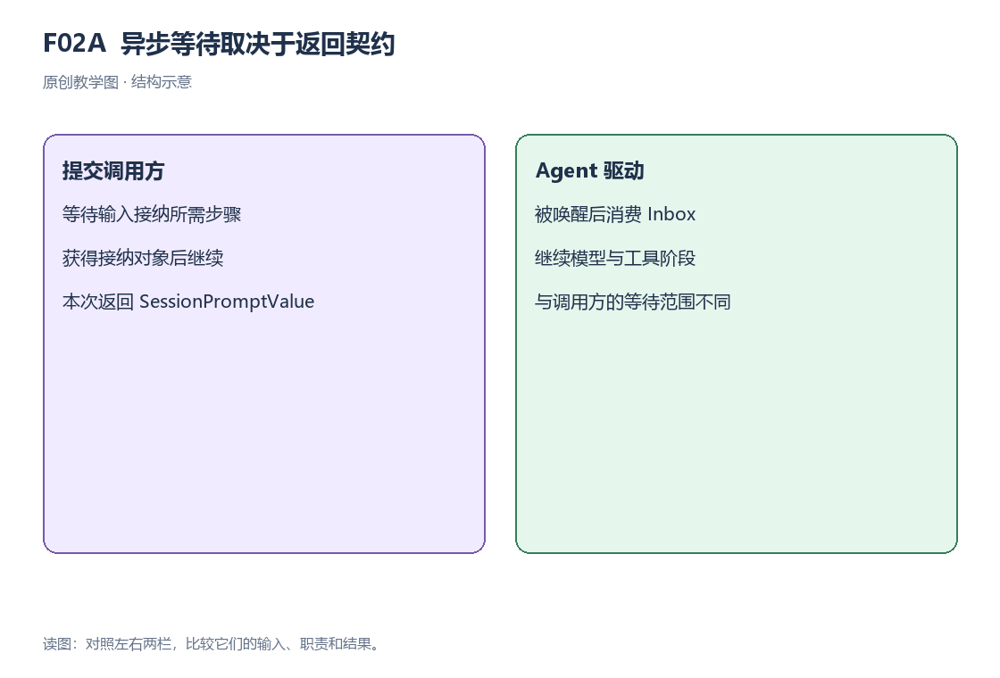
图 02A 是结构示意，两个分支表示不同的工作范围，不表示操作系统一定创建两个线程。await 等待一个异步结果；这个结果的契约可能是“已接纳”，也可能是“文件已读完”。只看语法无法知道哪一种，必须检查被调用函数的返回内容。
## 02.2 先用最小例子读懂数据与函数
下面是教学示意，不是 DSH 原码：
type Admission = { accepted: boolean }
async function submit(text: string): Promise<Admission> {
queue.push(text)
return { accepted: true }
}
const result = await submit('读取项目说明')
text: string 说明参数应是字符串；Promise<Admission> 说明异步结果兑现后是一个接纳对象。queue.push(text) 是实际动作，类型说明本身不会把文字放进队列。最后一行等待 submit 的结果，结果里只有 accepted，没有最终总结。
const 声明一个不能重新赋值的变量绑定，不代表对象内部永远不可修改。对象属性用点号访问；mode?: string 中的问号表示该属性可缺省。import type 引入编译时类型信息，普通 import 可以引入运行时函数。看见名字时先找定义，再判断它属于契约还是执行行为。
## 02.3 Promise、async 和错误
Promise 可以理解为“将来兑现或失败的一次结果”。async 函数返回 Promise；await 使当前异步函数等待它兑现，失败则沿异常路径传播。等待期间其他已安排工作可以继续，但这不等于自动新增线程，也不保证所有异步任务都同时执行。
回到 DSH，入口会等待目标智能体解析与输入接纳所需步骤，然后安排消息。它返回接纳对象，驱动另行推进任务。若输入没有有效内容，入口会抛出错误；若请求标识已被识别，则返回接纳结果而不再排一次相同输入。读正常返回前，必须先看这些较早的分支。
这里还会遇到 using、展开运算符和更复杂的类型。现在只需知道相关代码管理临时绑定与数据组装；若你要修改附件接纳，才进一步研究这些细节。不要为了读懂一条纯文本路径先学习整个语言。
## 02.4 三段原码怎样读
<!-- evidence:start -->
方法签名与校验。 签名承诺异步接纳值；有效内容检查仍会在运行时失败。
来源：实际文件，第 311—317 行；固定提交。节选保留原码，省略邻近上下文。
async prompt(request: SessionPromptRequest): Promise<SessionPromptValue> {
if (!hasPromptContent(request.content)) {
throw new RemoteError(
'gateway/bad-request',
'prompt content must include non-whitespace text or an attachment',
{},
)
排队与返回。 调用 followup/steer 后返回接纳值，没有等待最终模型总结。
来源：实际文件，第 363—376 行；固定提交。节选保留原码，省略邻近上下文。
using binding = this.ctx.fileUploads.bindPrompt(agent, admission.receiptIds, request.requestId)
if (request.mode === 'steer') agent.steer(message)
else agent.followup(message)
binding.commit()
} catch (error) {
if (remoteErrorOf(error) !== undefined) throw error
if (error instanceof AttachmentError) {
throw new RemoteError('session/attachment-invalid', error.message, { reason: error.code })
}
throw new RemoteError('session/agent-busy', 'prompt rejected', { reason: String(error) })
}
return { accepted: true }
}
return hasImage ? this.agents.serializeImageAdmission(agent, admit) : admit()
注册定义。 register 收到工具定义；对象中的 execute 要等具体调用才执行。
来源：实际文件，第 77—84 行；固定提交。节选保留原码，省略邻近上下文。
ctx.tools.register(defineTool({
name: 'read',
description: 'Read a UTF-8 text file and return line-numbered content.',
parameters: {
file_path: { type: 'string', required: true, description: 'Path to read, resolved by the filesystem backend.' },
offset: { type: 'number', description: '1-based first line to return. Defaults to 1.' },
limit: { type: 'number', description: `Maximum number of lines to return. Defaults to ${caps.limit}.` },
},
完整阅读路线。 路线区分启动前置、执行主链与提供方对照，不把它们误连为一次同步调用。
- packages/api/session-controller/src/commands.ts，
SessionCommandController.prompt。输入：带类型的请求对象；输出/交接：验证分支与接纳结果；转入消息队列。固定提交第 311 行。 - packages/core/agent-loop/src/agent.ts，
send / followup / steer。输入：输入内容与进入方式；输出/交接：将输入放入 inbox；驱动消费是另一段行为。固定提交第 154 行。 - packages/fs/tool-fs/src/read.ts，
applyReadTool。输入：具备工具服务的上下文；输出/交接：注册 read 定义和 execute 回调；此时没有用户文件读取结果。固定提交第 68 行。
<!-- evidence:end -->
从方法签名看返回契约，从消息排队看副作用，从 return 看等待什么时候结束。这三项一起，才能判断 await prompt(...) 的含义。
## 02.5 分析示例：注册不是执行
假设启动时运行三次“注册工具”的函数，随后模型只调用了一次文件读取工具。注册次数是 3，执行次数是 1。两种计数描述不同事件，不能把 3 个注册对象算成已经读了 3 个文件。
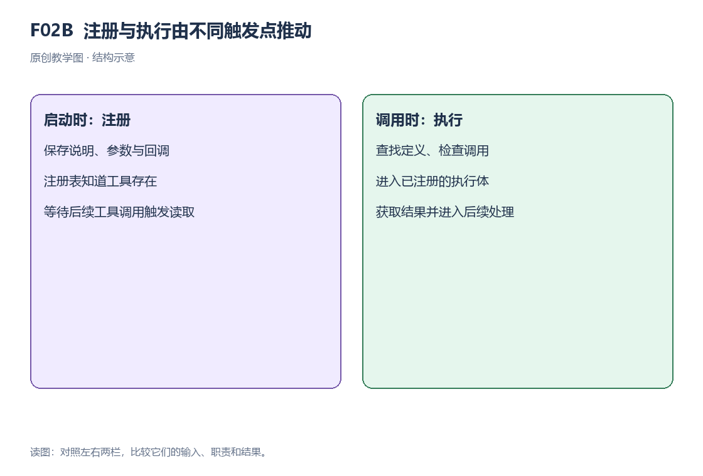
图 02B 是原创结构示意。注册表保存工具说明、参数契约和执行回调；收到具体调用后才查找定义并执行。这样可以让模型提前知道可用能力，而不在启动时执行每种能力。代价是实际调用必须检查工具名、参数和可用范围。
在文件读取插件中，applyReadTool 注册 defineTool(...)，对象里的 async execute(...) 是稍后执行的函数。读到函数对象时，要问“谁保存了它、谁以后调用它”，而不是假定控制流已经进入函数体。
## 02.6 回到任务接纳
现在可以用代码语言复述：prompt 接收带类型的请求，校验内容并解析目标；对已识别 requestId 提前返回；正常分支构造用户消息，调用 followup 或 steer；最后兑现接纳对象。followup 把消息送入收件箱并唤醒驱动。模型和工具阶段没有被这个返回对象包含。
若你在调试页面“提交成功但没有回答”，入口接纳只是第一个检查点。还要看队列、驱动状态和后续错误，不能仅检查调用方是否用了 await。
## 02.7 容易混淆的地方
“async 使函数内部所有动作并行”：函数内连续 await 依然按顺序依次等待；并发执行只发生在显式并发启动（如 Promise.all）并分别调度的场景。
“类型合法就不会失败”：类型不能证明文件存在、网络可达或权限获准；运行时检查依然必要。
“工具对象里有 execute，所以启动已执行”：对象属性可以是一段尚未调用的函数。要追保存与调用位置。
## 02.8 小结与参考
源码中的类型帮助理解数据契约，实际语句产生动作，异步函数的返回决定等待边界。工具注册与工具执行也由不同触发点推动。下一章把这些局部交接连接成完整循环。
<!-- references:start -->
原项目文档用于复核，优先保留已有中文版：
<!-- references:end -->
本章面试问答
本节追问"模型每一步看到什么"的原理。回答引用的文件与行号可在可选证据附录复核。
Q1 · 下一次模型请求由哪些材料组成？各自的进入路径为什么不同？
考察点：上下文工程是否停留在"拼 prompt"的直觉，还是能按来源讲清路径。
回答：五类材料五条路径。系统提示词：插件经 SystemPrompt.section 注册带名字与顺序的贡献，组装时"作用域内同名项先遮蔽全局，再按确定性排序"（packages/core/system-prompt/src/index.ts 第 574—590 行，参数 schema 用 structuredClone 复制）；动态上下文走 context 注册。项目指令：agent-instructions 插件挂在 agent/pre-step 链上，等待相关投影、按工作区与触及路径整理，再把指令消息放进领取批次之后（packages/context/agent-instructions/src/index.ts 第 332—340 行）。历史消息：由当前表层派生；用户消息：只在 firstAttempt 时记录一次 user/message（agent.ts 第 419—425 行），重试不会重复登记。
原理：路径不同是因为来源和信任级别不同。系统提示词描述"这个 Agent 怎么行为"，来自插件贡献，需要作用域与去重规则；项目指令描述"这个仓库怎么工作"，依赖文件观察与工作区边界，必须等投影就绪并按触及路径筛选，所以它既不是向量搜索器也不是启动时一次性改写 system 字符串；历史来自会话表层，受压缩影响。若把这些全部压成"一个拼接函数"，就无从回答"这句话是谁在什么条件下放进来的"——而这是排查提示冲突、注入与重复材料时首先要问的问题。
追问：为什么不能说"所有项目指令都会变成 system prompt"？ 回答要点：本版本项目指令经前置步骤以指令消息路径进入材料；教材 2.1.8 明确列出这个误解。判断材料路径要看实现，不看直觉。
Q2 · "请求冻结"到底冻结了什么？它防的是什么事故？
回答：驱动在 prepareRequest → buildRequest（agent.ts 第 547 行起）派生并冻结本次请求；模型侧对应 prepareCall 里 deepFreeze(structuredClone(resolved.config))（packages/llm/llm/src/index.ts 第 936—944 行，config 与 context 各冻结一份）。冻结意味着：本次请求引用的对象之后被共享代码修改，也不会改变已提交请求的内容；firstAttempt 保证用户消息只登记一次，重试沿同一请求语义进行。
原理：JS 的对象是引用语义。组装过程中，提示贡献、上下文投影和历史消息都是被多方持有的共享对象；如果请求在异步等待期间仍引用它们，任何一方的后续修改（插件重载、压缩提交、新消息追加）都会"穿透"到在途请求里，造成校验过的内容与实际发出的内容不一致——这类问题的表现是"日志与请求对不上"，极难定位。冻结（复制＋深冻结）在提交点做了一次快照，把"可变世界"与"在途请求"切开。它不保证下一步不引入新材料，也不保证模型输出正确；它只保证"发出去的请求"是可复述的事实。
追问：冻结与压缩的表层替换冲突吗？ 回答要点：不冲突——压缩改变后续请求的派生视图，冻结只保护在途请求；教材 2.1.8："冻结一次请求就冻结整个会话"是误解。
Q3 · 技能"目录可见 ≠ 正文已加载"在代码上怎么体现？为什么这样设计？
回答：SkillRegistry.list 只返回摘要快照（packages/skill/skill/src/index.ts 第 470—472 行）；模型想拿正文必须调用 skill 工具，执行体先检查名称在当前可见摘要里、再检查 isModelInvocable，通过后 get 正文返回（packages/skill/tool-skill/src/index.ts 第 133—143 行），任一检查失败抛出明确错误。用户手势路径（第一行 /name）在前置步骤处理，只有 isUserInvocable 的技能才变成带 skill-invocation 来源的指令消息；未知名保持纯文本，不伪造来源（第 189—200 行）。
原理：这是上下文经济学。技能正文可能各有数千字节，全量预载会让多数请求背着无关材料；而只给摘要（名称＋说明）让模型保留"知道自己缺什么"的能力，需要时花一次工具调用精确取得。与权限的关系同样关键：读取是材料行为，不是授权行为——如果加载技能自动扩大能力，任何诱导模型读一份恶意技能的文本都能变成提权路径。所以准入仍在工具链，按需读取只改变"看到了什么"，不改变"能做什么"。
追问：用户消息里出现 /某技能 字样就一定加载正文吗？ 回答要点：不是。手势检查消息来源与可调用策略；外部文本即使写着同样字符也只是普通材料（教材 2.2.3、2.2.8）。
Q4 · 压缩的触发条件、主链和失败路径分别是什么？为什么要有"稳定性检查"？
回答：基本压缩插件监听 agent/pre-step，调用 compactIfNeeded(agent, 'pressure', signal)；配置目标错误只警告一次并继续原前置链（packages/compaction/compaction-basic/src/index.ts 第 158—175 行）。上下文溢出恢复路径先按需剪枝，再 selectCompactableRange，没有合适区域返回 null 放弃（第 294—301 行）。选定区域后：生成摘要 → assertStable 验证表层未变 → commitCompactionBody 提交替换 → 记录 compaction/end 闭合；中途出错按所处阶段记录错误链（packages/compaction/compaction-basic/src/region.ts 第 232—245 行）。
原理：压缩是一个跨多步异步流程去修改共享历史的操作，最大的风险是"竞态覆盖"：摘要生成期间，会话可能追加了新消息、发生了取消、甚至另一次压缩。如果摘要回来后不检查直接替换，就会把别人刚写入的事实覆盖成旧快照的摘要。assertStable 就是把"读时状态"与"写时状态"做一次乐观并发校验——与数据库的条件更新同构。失败分阶段记录（选择、摘要、提交），让"没选到区域""摘要失败""提交时状态漂移"三种完全不同的问题不会被混成一个"压缩失败"。另外，压缩只替换当前表层、原始事件仍在日志里，这是"派生视图可重建"原则（第 3 章）的应用：事实不可变，表示可替换。
追问：压缩、spill、截断三者怎么选？ 回答要点：压缩生成有损短表示；spill 把原文移到存储并给定位符、按需取回；单纯截断可能没有恢复入口。长工具结果优先 spill（教材 2.5），历史压力才压缩（2.3）。
Q5 · spill 机制解决什么问题？它和压缩的原理差异是什么？
回答：超长工具结果先整体交给存储提供方，工具结果只保留首尾预览加定位符与检索说明；本地 spill 策略在保存失败时可保留原内联结果，不宣称必定外置成功。作用域方面，每项贡献有身份、范围与位置，插件卸载只撤销自己的注册（教材 2.5）。
原理：spill 与压缩是两种相反的取舍。压缩用信息损失换空间，适用于"旧历史大概率不再逐字需要"；spill 用一次间接寻址换无损，适用于"结果必须完整保留，但不值得每轮都随请求携带"。两者都以"原始事实另有归宿"为前提：压缩的原文留在日志，spill 的原文在存储提供方——共同点是当前模型视图与完整事实分离，这正是第 3 章"一份事实、多个消费方"原则在空间维度的版本。
# 第 3 章｜循环与消息队列：一轮任务为什么需要多步
## 03.0 回答为什么不是一次调用就结束
模型第一次收到“读取项目说明并总结”时，可能只能提出读取请求。文件片段取得后，第二次请求才让模型据此回答。用户看来是一项任务，内部却有多个执行阶段。本章建立轮次、步骤和尝试三层边界，并解释运行中的新输入怎样安排。
前置是前两章的接纳和异步基础。你不必背状态字段，但要知道谁推动下一步、输入何时被领取、模型失败怎样影响后续动作。
## 03.1 三层边界
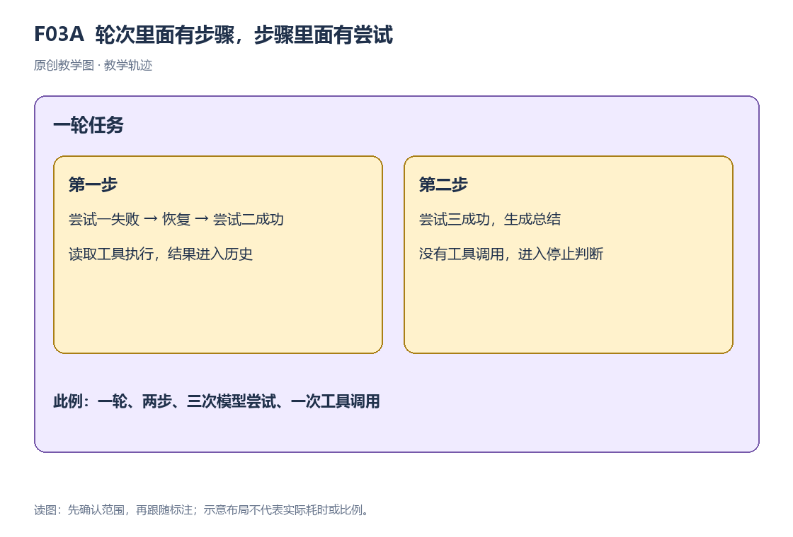
图 03A 是结构示意。轮次（turn）是一段由驱动管理的任务推进边界。步骤（step）包含模型请求及成功后的工具阶段。尝试（attempt）是本步中一次模型请求的尝试；失败恢复可以在同一步里再尝试。
所以“一条消息＝一轮＝一步＝一次请求”不是通用等式。前置准入拒绝时，一轮可以没有进入任何步骤；一次工具读取任务可以有两步；某一步又可能有两次尝试。工具阶段只在适合执行的成功消息之后发生，不接在失败 partial 上随意执行。
## 03.2 收件箱怎样与驱动合作
收件箱（inbox）存放尚未被领取的输入。followup 排入下一轮并请求唤醒；steer 排入下一步并请求唤醒；inject 也排入下一步，但不自行唤醒。名字相近，进入时点和唤醒行为却不同。
空闲时，需要唤醒的输入让驱动启动。已有活跃驱动时，不应为每条输入再启动一个争抢同一会话的驱动；当前驱动在约定边界领取待处理输入。维护或已中止活动的唤醒另有延后处理。已中止活动不能接收新的唤醒输入继续原活动，因此 send 有把它改归下一轮的分支。
普通运行路径中，驱动开放轮次，准备下一步，领取消息并组装材料。前置决定可能允许进入或拒绝。进入后发起模型请求，成功消息有工具调用则进入工具批次；工具结果回到会话历史。驱动再看停止原因与下一步输入，决定继续或结束。
## 03.3 队列与状态机的最小基础
队列解决“哪些输入还没消费”，状态机解决“当前允许做什么”。它们不能相互替代：队列里有消息，不意味着当前模型请求已被中断；驱动状态为运行，也不意味着每条消息已经进入请求。
事件通知让观察者知道队列或状态变了。DSH 收件箱变更先更新可观察状态，再通知监听者，因此监听者可以在通知里查询新状态。类比排队叫号只能帮助理解待办与领取，不适用于解释所有并发、取消和重入细节。
类名 ReactLoopAgent 里的 React 指运行方式，不能因为同名词就把它当成 React 网页组件。判断职责要看方法、依赖和调用位置。
## 03.4 从输入到步骤的原码
<!-- evidence:start -->
进入时点。 比较 next-turn、next-step 以及最后一个布尔值，理解目标与唤醒。
来源：实际文件，第 163—173 行；固定提交。节选保留原码，省略邻近上下文。
followup(input: UserMessage): void {
this.send(input, 'next-turn', true)
}
steer(input: UserMessage): void {
this.send(input, 'next-step', true)
}
inject(input: UserMessage): void {
this.send(input, 'next-step', false)
}
轮次与前置拒绝。 先记录轮次开始，再询问前置决定；拒绝可以发生在模型步骤进入之前。
来源：实际文件，第 303—319 行；固定提交。节选保留原码，省略邻近上下文。
const turn = phase.turn + 1
try {
this.session.append('turn/start', { turn })
} catch (error: unknown) {
this.throwError(error)
}
phase.turn = turn
let turnEnds: TurnEndReason | null = null
let target: InboxTarget = 'next-turn'
try {
while (true) {
signal.throwIfAborted()
const step = phase.step + 1
const decision = await this.preStep(target, { turn, step })
if (decision.kind === 'reject') {
turnEnds = { kind: 'blocked' }
return false
工具与继续。 没有工具调用时返回完成；否则执行批次并根据 concluded 决定本步继续结果。
来源：实际文件，第 530—538 行；固定提交。节选保留原码，省略邻近上下文。
if (finish.kind === 'max-tokens') return { kind: 'max-tokens' }
const toolCalls = message.content.filter(block => block.type === 'tool-call')
if (toolCalls.length === 0) return { kind: 'completed' }
const { concluded } = await executeToolCalls(
this.loopCtx, turn, step, toolCalls, signal,
context => this.inbox.splice('next-step', this.inbox.nextStep.length, 0, [context]),
)
return concluded ? { kind: 'completed' } : null
完整阅读路线。 路线区分启动前置、执行主链与提供方对照，不把它们误连为一次同步调用。
- packages/core/agent-loop/src/agent.ts，
followup / steer / inject。输入：输入和进入方式；输出/交接：更新 inbox 并按方式触发驱动。固定提交第 154 行。 - packages/core/agent-loop/src/inbox.ts，
mutate。输入：插入、领取或删除的变更；输出/交接：先更新投影状态，再通知观察者。固定提交第 198 行。 - packages/core/agent-loop/src/agent.ts，
wakeDriver → kick → turn。输入：待处理输入；输出/交接：开放轮次并领取输入；进入 preStep。固定提交第 214 行。 - packages/core/agent-loop/src/agent.ts，
preStep → step。输入：被领取的输入与已装配材料；输出/交接：准入后执行步骤；模型成功分支走工具阶段。固定提交第 267 行。 - packages/core/agent-loop/src/tool-calls.ts，
executeToolCalls。输入：工具调用批次；输出/交接：完成工具阶段，返回驱动决定继续或停止。固定提交第 60 行。
<!-- evidence:end -->
继续看 turn 中前置拒绝与空输入的分支，再看 step 成功后调用工具批次的位置。源码阅读顺序应顺着驱动走，而不是按目录顺序遍历所有文件。
## 03.5 分析示例：数一次有重试的读取任务
教学轨迹如下：开放一轮；第一步第一次模型尝试失败，第二次尝试成功并提出 read；工具返回文件片段；第二步模型成功生成总结；轮次结束。本例共有 1 个 turn、2 个 step、3 次模型 attempt、1 次工具调用。
为什么不是 3 个 step？第一步重试发生在本步的尝试循环中，没有再次进入前置步骤，也没有把用户消息再提交一次。为什么不是 2 个 turn？工具结果引发的后续模型请求仍属于当前轮次推进。
这是按给定轨迹计数，不是所有任务的固定调用量。采用清楚的边界能让重试次数和任务复杂度分开观察；代价是日志分析时必须识别多层边界。
## 03.6 运行中插入新要求
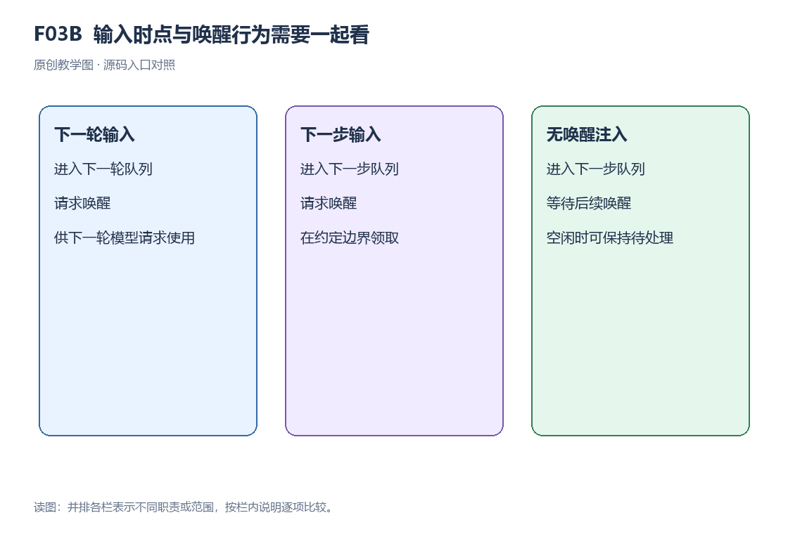
图 03B 是源码推演的入口对照。正在读取时，用户补充“不要解释安装过程，只总结用途”。下一轮方式留待后续轮次，下一步方式可以在后续步骤被领取；它不会倒回去修改已经发出的模型请求。无唤醒注入在空闲时可以留在队列里，不能仅凭注入动作期待任务立刻启动。
回到案例，读取结果后驱动进入下一次材料准备，如果约定时点领取了新约束，这次总结请求可以包含新约束。若前置拒绝，不能把这轮记成模型已调用。若取消，则应检查信号、剩余输入和结束原因，而不是假定队列永远自动清空或保留。
## 03.7 常见误解
“下一步输入会立刻打断当前模型流”：它描述领取目标；打断需要看取消或其他控制路径，不能从名字推出。
“结果按顺序记录，所以工具肯定串行执行”：工具体可能并行，而准备、后处理和最终提交有顺序约束。
“出现 turn/start 就花费一次模型请求”：前置拒绝或初始空输入可能没有进入步骤。
## 03.8 小结与参考
收件箱保存输入，驱动在边界领取并推动轮次，步骤组织请求与工具阶段，尝试承载模型重试。把这几层分开，才能准确解释补充输入、拒绝与停止。下一章沿一个真实文件工具查看外部动作如何完成。
<!-- references:start -->
原项目文档用于复核，优先保留已有中文版：
行为旁证为测试源码，未在本次执行：
<!-- references:end -->
本章面试问答
本节追问记忆与持久化的原理。回答引用的文件与行号可在可选证据附录复核。
Q1 · 会话记录、长期记忆、知识库为什么要分成三层？合并成一层行不行？
考察点：是否能把"存了、取了、用了"三件事分开举证。
回答：当前会话事实是 Session 事件、消息与压缩替换记录，本次请求按当前表层派生；工作区知识是文件系统里的文档与代码，要靠工具实际读取才进入材料；跨会话外部记忆是可选 Memory MCP 服务，默认禁用，其 Reference Memory 查询是子字符串搜索，不是语义检索。三层进入下一次请求的条件完全不同（教材 3.1 表格）。
原理：分层对应三个不同的时间尺度与信任级别：轮内事实（刚才发生的调用与结果）、仓库知识（随代码版本演进，可能过期）、跨会话画像（需要约定保存什么、面向谁、怎么更新）。合并成一层的后果是"持久化"与"进入上下文"两个概念被偷换——磁盘上存在不等于模型看到，模型看到不等于仍然为真（README 可能已改版）。面试中判断一个人是否真做过 Agent 存储，就看他能否把持久、检索、使用三步分别拿出证据。
追问：有 read 工具等于实现了 RAG 吗？ 回答要点：不等于。RAG 涉及索引、切分、检索与筛选；本项目官方 Memory 指南依赖外部服务，示例的文本查找不能改写成"默认语义检索"。
Q2 · Session.append 如何建立一个"事实"？为什么不直接维护一个可变数组？
回答：append 构造带 seq（等于日志数组下标）与时间戳的条目，数据先做快照再 deepFreeze，然后过两道校验：validateSessionEventData 检查事件数据、surfaceManager.validateNext 检查表层约束（packages/core/session/src/index.ts 第 744—752 行）。消息视图由 deriveMessages 增量派生：只遍历表层新增节点，空内容助手消息（例如只承载 usage 的 max-tokens 步骤）派生为 null、不进入对话记录，返回派生数组副本（第 869—880 行）。
原理：三个设计点各有原理。其一，seq === 数组下标 的不变量让"按序号取事件""按前缀截取"都是直接索引，fork 的 completedTurnPrefix 就直接依赖它（第 10 章）。其二，冻结＋快照保证历史不可变——多方持引用的并发环境下，可变历史等于没有历史；审计、回放、投影全部建立在"读到的事件永不变形"上。其三，派生与存储分离：日志是事实，消息只是少数消息产出型节点的一种视图，"界面每行日志一个气泡"的机械映射既浪费又不准确（turn/start 这类过程边界事件不产生气泡）。
追问：append 返回之后，磁盘上是否已经完成物理写入？ 回答要点：尚未完成。JSONL 持久化提供方监听 session/event 事件并将数据先压入内存写入缓冲区；后台物理写操作若遭遇异常，仅记录警告并保留缓冲区等待后续重试。只有在触发 session/flush 事件时，系统才会强制刷新缓冲区并等待磁盘 I/O 确认完成（参考 packages/session/session-persistence-jsonl/src/storage.ts 第 535—546 行）。因此，append 的返回值契约仅保证会话状态在内存中确立，持久化耐久性由独立的 flush 屏障保证。
Q3 · 投影（projection）是什么？它和消息派生的原理区别在哪里？
回答：投影把有序事件按注册的消费规则折叠成可查询状态，例如 TokenMeter 注册 tokenUsage、contextPressure、contextBreakdown 三个投影定义，并对已读会话在 session/event 时主动同步（packages/llm/token-meter/src/index.ts 第 110—122 行）。领域贡献纯计算单元，宿主注册表驱动折叠；快照携带序号，说明对应日志的哪个切面。
原理：派生回答"对话长什么样"（面向模型与聊天界面），投影回答"系统处于什么状态"（面向查询与界面面板）。两者都是事件的函数，但折叠方向不同：消息派生保持时间序列形态，投影通常收敛成当前值（如最新待办、累计 token）。分开的意义在于：新增一种业务状态（目标、计划、团队任务板）不需要改会话核心，只要注册新投影——这是开放封闭原则在事件溯源架构里的体现。快照带序号则解决一致性问题：客户端能知道状态对应哪个事件位置，刷新后可以判断是否需要追赶。
追问：投影状态和持久存储是什么关系？ 回答要点：投影是内存中可重建的折叠结果，真源仍是事件日志；非会话产品数据（工作区注册、定时记录）走另一类领域存储，两种落点不混用（教材 3.3）。
Q4 · 恢复（recovery）与迁移（migration）为什么必须是两件事？
回答：持久文件先识别可读的规范 generation，经受支持的相邻迁移步骤转换成当前逻辑事件；只读打开在内存使用转换结果，写打开要验证并在原文件旁发布新版本文件，旧 generation 保留（教材 3.5）。恢复则针对一次运行的中断状态。
原理：两者失败的原因域不同。格式迁移处理"数据的表示随版本演进"——只要格式能解析并迁移，旧文件就能读；恢复处理"运行时世界与日志的差距"——格式完好不代表 PTY 进程还活着、不代表浏览器登录态可还原、不代表未结算的模型流可以凭空补完。合并处理会导致两个典型错误：把"文件能打开"当成"任务能继续"，或者为迁就运行时状态而篡改历史数据。分开之后各自的边界都能说清：迁移不承诺运行续接，恢复只使用实际留下的事实，未来格式明确拒绝而不是装成空会话。
追问：进程重启后能恢复哪些东西？ 回答要点：持久会话事实（含投影重建、压缩替换记录）可以；PTY 原始状态、外部浏览器登录态等进程内资源不在日志里，不能假装可还原（教材 5.4、6.5）。
Q5 · 标题生成、会话查询这类"派生功能"的边界在哪？为什么标题失败不算任务失败？
回答：会话查询是统一读取层，实时数据可用时优先实时来源，全文索引帮助找匹配但不成为真源；标题服务记录采用了哪些人类消息与哪个提供方，可用辅助模型请求生成短标题，该请求有自己的记录边界（教材 3.4）。
原理：判断一个功能是不是"主任务"，看它的失败是否影响任务事实的成立。标题是导航元数据：生成失败只损失可读性，主体回答与工具事实不受影响——所以它必须用独立的请求、独立的记录，失败也独立报告。反过来说，若标题请求与主任务共享请求边界，一次标题失败就会污染任务状态机。查询层的原理同理：索引是加速结构，真源永远是事件日志——任何"搜索结果与精确读取不一致时以搜索为准"的设计都会制造两种事实。
# 第 4 章｜沿文件读取工具追到底：模型怎样得到材料
## 04.0 工具名后面还有什么
“模型调用了 read”只说了入口名，没有说明参数是否合法、读取由谁完成、文件多大、实际返回多少内容。本章追一个真实文件读取工具，把工具定义、服务调用与结果呈现连起来。
学习目标是找到材料来源与边界。前置为第三章的模型成功后进入工具阶段；审批先假设获准，第十一章再展开。
## 04.1 一次读取的材料变化
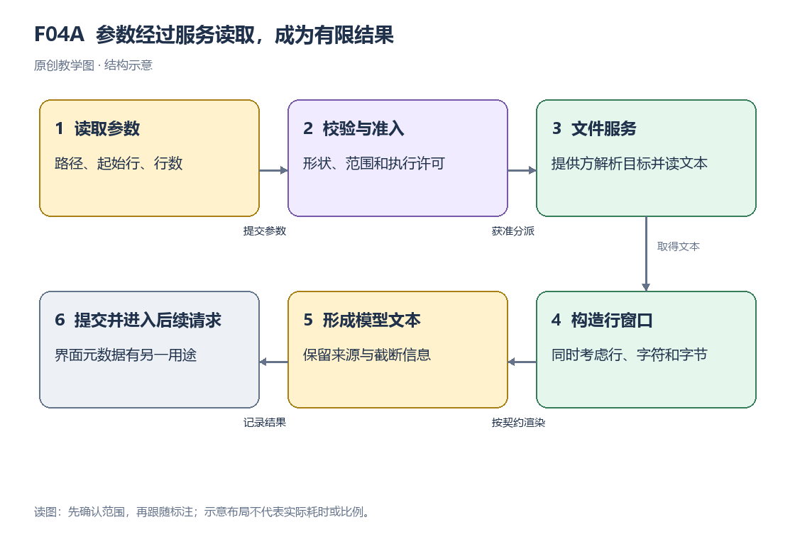
图 04A 是结构示意。模型提出的是参数，不是文件内容。工具链检查调用，执行体通过文件系统服务取得文本，再形成带行号的有限窗口。结果被记录后，下一次模型请求才可以使用它。
read 的模型参数包括 file_path、可选 offset 与 limit。起始行从 1 开始，数量不能随意超过当前部署限制。参数 schema 描述数据形状；parseReadArgs 再检查非空路径、正整数及数量上限，补齐缺省值。
## 04.2 启动前置与调用主链分别看
启动时，文件工具插件取得所需服务，调用 applyReadTool 注册工具定义，并贡献对应使用指导。定义里同时有说明、参数、执行体和输出呈现契约。此时没有读用户指定的文件。
实际调用时，通用工具链找到定义并完成准入。read 的执行体解析参数，通过 resolveRegularReadTarget 得到目标和文件信息。文件大小已知且较小时走整体文本读取；大小未知或达到流式阈值时走文本流。随后 buildWindow 按行范围、单行长度和字节上限构造窗口。执行结果含路径、起始行、行列表和总行数。
注意，实际读取依赖 ctx.fs 服务接口。该接口底层的路径解析与 I/O 行为由当前配置启用的具体提供方实现，不能将该接口等同于本地 Node.js 物理文件系统。返回给模型的纯文本，与提供给前端界面的结构化呈现元数据，承担完全不同的消费职责。
## 04.3 行、字符和字节
一行可能很长，限定行数不能单独控制返回大小。字符与 UTF-8 字节也不是同一计数；汉字通常不止一个字节。本工具分别处理行数量、单行字符与选定行的字节上限。模型计费的词元（token）又是另一种单位，不能从 100 行直接推出 100 token。
参数校验失败发生在正常读取结果之前。路径不存在或不是合适文件时，目标解析或读取会失败，最终工具错误需要通过通用结果链处理。字节截断则可能仍是成功结果，只是材料不完整；必须读取输出中的边界信息。
## 04.4 原码中的校验、读取与返回
<!-- evidence:start -->
参数解析。 起始行和数量补默认，非空路径与上限仍有显式检查。
来源：实际文件，第 55—60 行；固定提交。节选保留原码，省略邻近上下文。
export function parseReadArgs(args: { file_path: string; offset?: number; limit?: number }, maxLimit: number): ReadInput {
if (args.file_path.trim().length === 0) throw new Error('file_path must be a non-empty string')
const offset = args.offset === undefined ? 1 : parsePositiveInteger(args.offset, 'offset')
const limit = args.limit === undefined ? maxLimit : parsePositiveInteger(args.limit, 'limit')
if (limit > maxLimit) throw new Error(`limit must be less than or equal to ${maxLimit}`)
return { filePath: args.file_path, offset, limit }
服务与窗口。 路径先解析；大或大小未知的文件使用流，随后按多项限制构造窗口。
来源：实际文件，第 141—152 行；固定提交。节选保留原码，省略邻近上下文。
const { target, info } = await resolveRegularReadTarget(ctx, exec, input.filePath)
// Stream when the file is large OR size is unknown, so a size-less backend
// never buffers an arbitrarily large file.
const chunks = info.size === undefined || info.size >= caps.streamMinSize
? await ctx.fs.streamText(target, exec.signal)
: [await ctx.fs.readText(target, exec.signal)]
const window = await buildWindow(
chunks,
{ offset: input.offset, limit: input.limit, maxLineLength: caps.maxLineLength, maxBytes: caps.maxBytes },
target.displayPath,
)
规范结果与通知。 返回的是有边界的结构化值，观察通知另有用途，模型文本由输出契约生成。
来源：实际文件，第 154—164 行；固定提交。节选保留原码，省略邻近上下文。
const outcome = {
path: target.displayPath,
offset: input.offset,
lines: window.lines,
totalLines: window.totalLines,
}
// Record the present observation (a no-op when no policy plugin listens). The
// read already succeeded; an fs/observed listener is contractually a
// synchronous, side-effect-only recorder.
ctx.emit('fs/observed', target, { kind: 'present', version: info.version }, exec)
return outcome
完整阅读路线。 路线区分启动前置、执行主链与提供方对照，不把它们误连为一次同步调用。
- packages/fs/tool-fs/src/index.ts，
apply。输入：插件配置与注入的工具/文件服务；输出/交接：调用 applyReadTool 注册能力；这是启动前置。固定提交第 54 行。 - packages/fs/tool-fs/src/read.ts，
parseReadArgs / applyReadTool。输入：工具定义与模型参数；输出/交接：校验参数，确定 execute 的文件读取与呈现契约。固定提交第 55 行。 - packages/core/agent-loop/src/tool-calls.ts，
executeToolCalls。输入：成功消息的工具调用；输出/交接：交给工具服务，按序记录调用和结果。固定提交第 60 行。 - packages/core/tools/src/index.ts，
prepareExecution → dispatch。输入：工具名、参数与执行上下文；输出/交接：准入后调用已注册执行体；返回规范结果。固定提交第 1493 行。
<!-- evidence:end -->
output.render 把规范对象变成模型面对的文本，presentationMeta 保留界面需要的结构化窗口。看卡片漂亮与否不能替代检查实际模型面对的内容。
## 04.5 分析示例：读到哪些行
教学文件有 120 行，请求从第 41 行读取 30 行，且本例假设字节与单行长度限制没有提前截断。最后一行是 41＋30−1＝70，所以返回 41—70 行，后面仍有 50 行。
若重要约束在第 100 行，这次读取不足以支持关于该约束的结论。可以再请求后续窗口，而不是把“工具成功”解读为“全文已知”。若字节限制使窗口只返回到第 60 行，也不能照原计划声称已读到第 70 行。
有限窗口降低材料体积并让来源更容易定位，代价是需要正确续读和识别遗漏。整体读取与流式读取主要改变提供材料的方式，不能据此直接断言回答质量或性能提高多少。
## 04.6 重走 README 任务
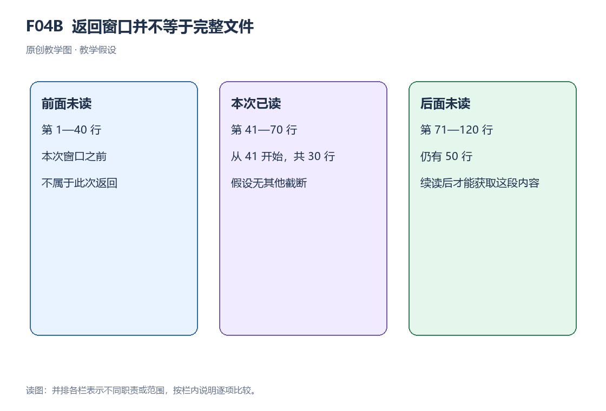
图 04B 用教学行区间显示选择与剩余材料，不代表项目实测。模型提出路径，工具执行并返回片段，驱动记录结果；若片段已有用途、功能和限制，后续请求可以据此总结。若只有开头标题，应续读或说明材料不足。读取成功还会产生文件观察通知，相关策略监听器可记录版本事实；没有监听器时不能假定它已经产生额外持久业务记录。
## 04.7 常见误解
“read 成功等于全文进入上下文”：检查行窗口、截断和实际结果。成功与完整性是不同属性。
“模型能直接执行参数里的任意路径”：先有工具准入，再有文件服务的解析与执行边界，不能略过这些层。
“行数限制就是词元预算”：单位不同，材料统计与模型词元计量需要分别进行。
## 04.8 小结与参考
一次读取从工具参数经过校验、准入和具体文件服务，形成有边界的结果，再进入会话和后续请求。准确理解“拿到了哪些材料”比记住工具名更重要。下一章解释这些事实如何保存、派生和落盘。
<!-- references:start -->
原项目文档用于复核，优先保留已有中文版：
行为旁证为测试源码，未在本次执行：
<!-- references:end -->
本章面试问答
本节追问工具系统的准入与契约原理。回答引用的文件与行号可在可选证据附录复核。
Q1 · 一次 read 调用从参数到结果经过哪些步骤？每一步的失败语义有什么不同？
考察点：能否把"工具调用"从一个名词展开成带失败分支的完整链路。
回答：①参数解析：parseReadArgs 检查非空路径、正整数 offset/limit，limit 超过部署上限抛错（packages/fs/tool-fs/src/read.ts 第 55—60 行）；②通用工具链准入：tools/pre-execute 瀑布决策 allow/reject/cancel/ask，ask 进审批，允许后过单调守卫（packages/core/tools/src/index.ts 第 1493、1504—1511 行）；③执行体：resolveRegularReadTarget 一次 stat 同时完成缺失观察、类型检查、大小路由与版本记录；大小未知或达到流式阈值走 streamText，否则 readText（read.ts 第 141—152 行）；④buildWindow 按行数、单行长度、字节上限构造窗口；⑤返回规范结果 {path, offset, lines, totalLines} 并发出 fs/observed 通知——监听器契约是同步、只做记录，没有监听器时不产生额外持久业务记录（第 154—164 行）。
原理：每一步的失败语义不同是刻意的。参数错误发生在任何 I/O 之前，是"请求本身不成立"；准入拒绝跳过工具体，是"策略说不"；执行体抛错则可能已经产生了部分外部动作，最终以工具错误结果呈现——所以判断副作用必须同时看进入边界（bodyInvoked 标志，tools/src/index.ts 第 1578—1587 行）与实际动作，不能只看最终错误标记。读取环节区分"文件不存在"（目标解析失败）与"截断"（仍是成功结果但材料不完整），因为两者对模型的意义完全不同：前者要换路径，后者要续读。一次 stat 完成多项判断则是为了缩小"检查与使用之间状态变化"的窗口——并发写入只能让后续受保护变更因过期失败并要求重读，而不是读到中间状态。
追问：read 成功等于全文进入上下文吗？ 回答要点：不等于。窗口有行数/字节边界，教材 4.1.6 的 41—70 行示例说明"读到哪些行"要从结果字段读出，而不是从成功标志推断。
Q2 · 审批在代码里怎么记录？为什么"allowed-once"不能变成永久放行？
回答：审批服务收到询问后：生成 ApprovalRequestId(randomUUID())，记录 approval/asked（含 id、toolName、可选 callId 与 reason），等待决定，记录 approval/decided（含 id 与本次结论），返回这一次的结论（packages/interaction/user-approval/src/index.ts 第 224—233 行）。询问与决定必须在开放轮次内闭合；审批服务缺失或拿不到有效授权时，不默认按允许继续。
原理：成对事件（asked/decided）让每次授权成为可审计的完整事实——谁被问了、问的是什么、结论是什么，回放与会话分析都能重建。一次性语义是权限最小化原理的应用：一次批准解决的是"当前这个请求"的风险评估，把结论外推到所有未来调用等于让一次人工决策覆盖无穷未见的输入。工程上这也是防"审批疲劳"被利用的：如果允许一次就永久放行，诱导用户批准一次高危操作后，后续同类操作就绕过了人工关口。
追问：审批和守卫（guard）、沙箱什么关系？ 回答要点：守卫在审批之后仍可否决（单调，不把该拒绝的升级为允许）；沙箱限制的是进入执行后的文件效果范围。策略、审批、执行环境分别回答"怎么判定""这次要不要问""实际能动什么"（教材 4.2.4）。
Q3 · MCP 远端工具接入时，名称包装和"两阶段同步"各解决什么问题？
回答：公开名通常是 mcp__服务名__原工具名；含非法字符或超长时规范化并追加 sha256 哈希前缀，避免不同原名折叠成同一个公开名（packages/mcp/mcp-client/src/tools.ts 第 81—86 行）。工具同步分两阶段：先获取完整列表、构建全部定义，再交换注册代次——先撤销旧代次，再逐个注册新定义（第 138—150 行）；获取或构建失败时不先破坏既有工具列表。
原理：名称包装解决"命名空间碰撞"：多个 MCP 服务器都可能提供同名工具，前缀隔离让扁平的工具注册表保持键唯一；哈希兜底处理服务名/工具名本身超长或含非法字符的极端情况——宁可名字难看，不可身份歧义。两阶段同步解决"半组目录"问题：如果边删旧边建新，中途失败的瞬间注册表处于既缺旧又缺新的状态，模型会看到残缺能力集。先构建后切换与蓝绿部署同构：新代次完整就绪才替换旧代次，失败则保留旧世界。这两处细节是"外部系统接入本地契约"时最容易漏的健壮性设计，面试里能主动讲出说明真读过实现。
追问：MCP 协议连接建立成功是否代表系统已具备知识库检索能力？ 回答要点：不代表。MCP 建立连接仅完成协议层握手，后续的工具发现、Schema 校验、工具注册、资源解析到跨会话记忆，是相互独立的验收阶段（参见教材 4.3.6 节）。Memory 语义必须依赖具体 MCP Server 实现的存储契约，协议层连接本身不附带任何检索增强（RAG）或语义理解功能。
Q4 · 一个工具为什么要分 schema、render、presentationMeta 三层输出？
回答：执行体返回规范 JSON 值；output.schema 校验结构，output.render 把规范值转成模型面对的文本（官方最小示例见 docs/cookbook/adding-a-tool.zh.md 第 14—27 行），presentationMeta 从规范值提取可持久化字段——read 工具提取 path、offset、每行 number/text、totalLines 与语言（read.ts 第 124—132 行），让支持卡片的界面能在刷新或回放时重建显示，而不需要重读文件。
原理：三层的本质是"同一事实、三种消费形态"（第 3 章原则在工具输出上的落地）：模型需要的是适合推理的文本；界面需要的是可结构化恢复的数据；契约校验需要的是机器可判定的结构。合并成一个字符串的后果：模型文本里混入界面标记会污染推理材料；界面想显示行号就得反解析文本或重读文件——回放时文件可能已经变了，presentationMeta 让历史显示不依赖当前磁盘状态。规范值居中，渲染与展示都是它的纯函数——这正是"展示函数无 I/O"约定能成立的原因。
追问：为什么不能把 React 组件直接塞进工具结果？ 回答要点：规范值要可序列化、可回放；界面组件是客户端概念，混入 Host 数据会让会话事实依赖渲染环境（教材 4.4.3、4.4.5）。
Q5 · 权限预设（read-only / workspace-write / danger-full-access）定义的到底是什么边界？
回答：预设把沙箱模式与审批策略组成界面选项，但两个旋钮独立：审批决定某次操作是否获准，沙箱决定进入执行后文件效果受限的范围。read-only 要求受限后端拒绝写入；workspace-write 允许规定根目录与临时区域；danger-full-access 绕过该隔离。后端报告 full 或 partial 表示承诺是否完整落实；不同平台与内核边界不同（教材 4.7）。
原理：把"授权"与"效果范围"分开，是因为它们防的威胁不同：审批防"未经人同意的动作"，沙箱防"已获准动作的越界效果"。预设名是产品表达，真实约束来自所选后端——一个报告 partial 的后端意味着隔离不完整，此时把三种预设当作同强度的保证就是误导。取消的边界同理：只能阻止尚未交付或响应取消的后续工作，已经发出的外部动作不可撤回——理解了"效果发生在执行体内部"这个事实，就明白为什么取消不等于回滚。
追问：为什么一次批准不永久提高任务权限？ 回答要点：与 Q2 同理，最小授权；教材 4.7 明确"一次批准通常只解决当前请求"。
# 第 5 章｜会话与日志：发生过的事怎样保存和还原
## 05.0 为什么不能只存最终回答
如果只保存最后三点总结，就无法知道读取了什么、模型是否重试、工具有没有失败，也难以在刷新后还原执行过程。会话（Session）管理一系列可复核事实，再把事实派生为不同用途的视图。
本章目标是分清原始事件、消息视图和持久文件，理解内存追加与写入完成的不同边界。前置为循环和工具调用。
## 05.1 一份事实，多个消费方
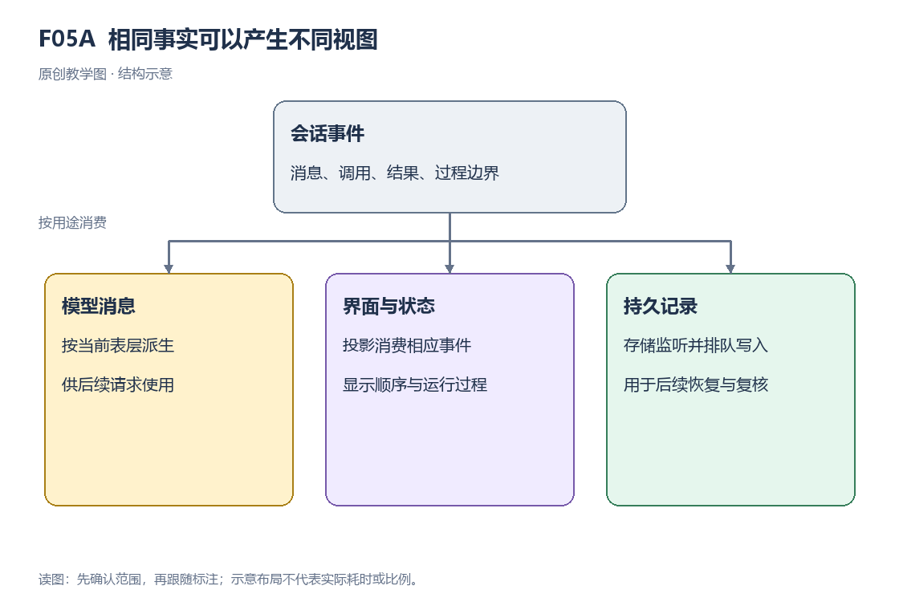
图 05A 是结构示意。会话事件可以供消息派生、状态投影和存储消费。它们读取同一类事实，但输出不同：模型需要消息内容，界面需要状态与顺序，磁盘需要可重新读取的记录。
持久日志不等于模型上下文历史的直接复制。日志完整记录底层过程事件，而模型消息由当前表层（Surface）投影派生。前端界面展示的流式文本片段在最终落盘确认前，尚未固化为持久日志中的助手消息。
## 05.2 append 怎样建立一个事实
Session.append 接收事件类型与相应数据，创建可序列化快照、验证事件与表层约束，并构造带序号和时间的冻结条目。冻结的目的是保持已记录事实稳定，不让以后修改原对象悄悄改变历史。
随后会话发布该事实，消费方依各自接口更新或排队处理。消息派生 deriveMessages 遍历当前表层中的消息节点，生成新的消息数组。状态投影则按注册的事件消费规则维护可查询状态。它们不是“每一行日志都生成一个气泡”的机械映射。
JSONL 是每行一个 JSON 记录的文本存储形式。DSH 的 JSONL 提供方监听 session/event，把条目排入对应写入句柄；监听 session/flush 时先排空实时缓冲，再等待 writer 的 flush。会话与存储之间是明确的接口，不是每个调用 append 的地方都直接同步写文件。
## 05.3 投影和持久化屏障
投影可理解为“按用途整理事实”。给定同一份订单记录，可以整理出当前状态，也可以整理出明细清单；软件里同理。但这只是帮助理解，DSH 的具体投影更新、缓存和表层规则仍要看实现。
flush 是持久化等待边界：调用者要求提供方完成其约定的排空与刷新。它不自动意味着任何磁盘、任何故障情况下都有绝对不可丢失保证，也不代替对所选后端的耐久性契约检查。append 返回首先说明会话侧追加已经完成，不能据此宣布后台磁盘写入也完成。
## 05.4 追加、派生和后台写入的原码
<!-- evidence:start -->
稳定事件。 条目包含序号与时间，并经过冻结和约束检查。
来源：实际文件，第 744—752 行；固定提交。节选保留原码，省略邻近上下文。
const event = deepFreeze({
type,
seq: SessionSeq(this.log.length),
time: Date.now(),
data: dataSnapshot,
...(surfaceMetadataSnapshot as { surfaceOp?: unknown; sourceEventSeqs?: unknown }),
} as unknown as SessionEvent<T>)
validateSessionEventData(event, `session event "${type}" at seq ${event.seq}`)
this.surfaceManager.validateNext(event as SessionEvent)
消息派生。 当前表层节点产生相应消息；方法返回消息数组副本，不是整份日志。
来源：实际文件，第 869—880 行；固定提交。节选保留原码，省略邻近上下文。
for (const seq of nodes.slice(this.derivedNodes)) {
// Surface sequences are built from this.log — seq is always a valid
// index by construction. The non-null assertion expresses that invariant.
// oxlint-disable-next-line typescript/no-non-null-assertion
const msg = this.deriveEventMessage(this.log[seq]!)
// A surface node is one of the five message-producing types, but an
// empty-content assistant/message (a max-tokens step that hosts only
// usage) derives to null and must not enter the transcript.
if (msg) this.derived.push(msg)
}
this.derivedNodes = nodes.length
return [...this.derived]
事件写入与刷新。 事件监听排队，flush 监听等待缓冲排空与 writer 刷新。
来源：实际文件，第 535—546 行；固定提交。节选保留原码，省略邻近上下文。
ctx.on('session/event', (session: Session, event) => {
this.writers.get(session.id)?.enqueueLive(event, (error) => {
ctx.logger.warn(`session-persistence: background write for session "${session.id}" failed (buffered events retained): ${String(error)}`)
})
})
ctx.on('session/flush', (session: Session) => {
const writer = this.writers.get(session.id)
if (writer === null || writer === undefined) return undefined
return (async () => {
await writer.drainLive()
await writer.flush()
})()
完整阅读路线。 路线区分启动前置、执行主链与提供方对照，不把它们误连为一次同步调用。
- packages/core/session/src/index.ts，
Session.append。输入：新事件；输出/交接：更新内存事实并通知；观察不同消费方。固定提交第 722 行。 - packages/core/session/src/index.ts，
deriveMessages。输入：事件日志；输出/交接：输出模型消息视图；是派生路径而非落盘步骤。固定提交第 860 行。 - packages/session/session-projection/src/index.ts，
投影注册与事件消费。输入：会话事件与投影定义；输出/交接：更新可供 stateOf 查询的状态。固定提交第 199 行。 - packages/session/session-persistence-jsonl/src/storage.ts，
enqueueLive / flush。输入：监听到的持久事件；输出/交接：排队写入；flush 等待队列完成，失败有自己的处理。固定提交第 274 行。
<!-- evidence:end -->
存储的后台失败会被记录并保留缓冲用于相应处理；关闭句柄会尝试排空，失败也有独立报告。不能把这些情况都写成“系统无条件自动修复”。
## 05.5 分析示例：日志行数为什么不是对话数
教学片段有一条用户消息、两条助手消息和一条工具结果，另有一条工具调用、两项轮次边界和四项步骤边界，共 11 个列出的事件。这里得到的消息数是 4，工具调用数是 1，日志片段事件数是 11；三个值回答不同问题。
这张表只列教学子集，真实轨迹还可能有系统材料、请求信息和用量等事实，不能用 11 当作项目的固定日志长度。精确区分事件种类让回放与分析有依据，代价是需要在统计时明确过滤规则。
## 05.6 写入时间线与故障判断
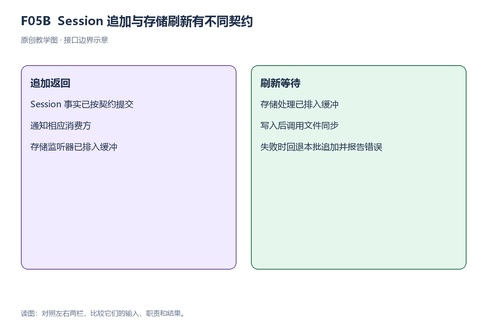
图 05B 是接口顺序示意，不保证某条事件一定在 append 返回之后才开始写：监听器可能已经启动后台工作。关键是 append 的返回契约不等待全部存储完成，而 flush 有相应等待契约。
重走任务：用户输入、助手工具提议、工具调用、工具结果、助手总结和轮次边界进入事实序列；消息视图为后续请求组织历史；页面按自己的状态消费显示；存储提供方写入记录。若写入失败，不能因为页面仍显示总结就认定磁盘已保存。若刷新后没看到某段临时输出，也不能先断定原始持久事件丢失，需要检查那段输出是否曾正式提交。
## 05.7 常见误解
“日志里每一项都发给模型”：消息派生只处理相应的消息节点，过程边界另有用途。
“可从日志还原，所以视图必须与原日志相同”：派生视图可以按用途选择、组合和更新；压缩会在第八章进一步改变当前表层。
“页面显示了，所以已经耐久保存”：界面状态与存储是不同消费方，须分别检查。
## 05.8 小结与参考
会话先建立稳定事实，再由不同消费方产生消息、状态和存储记录。分清这些层，就能解释材料来源、页面恢复与落盘边界。第一部分至此形成完整骨架：输入被接纳和领取，模型与工具交替推进，过程留下可复核事实。
<!-- references:start -->
原项目文档用于复核，优先保留已有中文版：
行为旁证为测试源码，未在本次执行：
<!-- references:end -->
本章面试问答
本节追问装配、流式与恢复的原理。回答引用的文件与行号可在可选证据附录复核。
Q1 · profile 如何变成一棵插件树？配置覆盖的语义为什么是"整条目替换"？
考察点：对插件框架组合语义的掌握程度。
回答：CLI 解析启动模式后进入 profile 分支，把环境层、profile 名、补丁文件交给 runProfile（apps/cli/src/bin.ts 第 31—42 行）；composeEntries 把各层展开为有序数组后 structuredClone 并依次应用到空条目列表（packages/boot/app-boot/src/profile.ts 第 731—737 行），得到最终 Cordis 条目；boot 挂载配置树（packages/boot/app-boot/src/index.ts 第 972 行起）。覆盖语义：后层替换某条目时替换其整个 config，{timeout:100, limit:20} 被替换为 {timeout:300} 后，limit 不会自动继承（教材 5.2.6）。 原理：采用“顺序展开加整条目替换”保障了配置组合的确定性。若采用深层递归合并，多个配置 Patch 叠加时的字段相交逻辑极其脆弱，最终配置形态需要依赖复杂的计算规则推导，增加审计与复现排错的复杂度；整条目替换要求每一层完整表达其配置意图，后生效层显式声明所需保留的全部字段。通过 structuredClone 阻断跨层对象引用共享，杜绝状态污染。
追问：包安装了能力就启用了吗？ 回答要点：安装与挂载不同；源码里有一个包不代表当前树包含它，最终看 profile 组合结果（教材 5.2.8）。
Q2 · prepareCall 绑定了什么？为什么 prepared call 只能分派一次？
回答：prepareCall 按 provider 找注册适配器，让适配器准备精确模型，normalizeModelInfo 归一模型能力，resolveCallWithInfo 用能力解析补齐调用配置，随后复制并深冻结 config 与 context（packages/llm/llm/src/index.ts 第 936—944 行）；LlmCallConfig 只有 provider、model、reasoningEffort、temperature、maxTokens、stop 六个字段（packages/llm/llm/src/call-config.ts 第 21—30 行）。DeepSeek 适配器产生异步片段流，超时、请求取消、传输失败各有错误分类，结束或失败时中止消费并尝试关闭迭代器。
原理："绑定一次、分派一次"把两个易混阶段分开：准备阶段做校验与解析（可能抛错、可重做），分派阶段是唯一的一次真实调用。绑定对象携带冻结配置与重试策略，保证"校验时的模型信息"和"发出请求时"是同一份事实——如果不绑定，重试或并发路径可能在不同时刻解析出不同的模型能力（配置热更新、凭据轮换），请求行为就不可复述。这与第 2 章"请求冻结"是同一原理在模型层的应用：在不可逆动作（网络调用）的入口做快照。
追问：换模型为什么不用改上层消费者？ 回答要点：协议差异归适配器；消费者依赖统一流契约，规范消息不因切换服务而重定义（教材 8.2）。
Q3 · 流式输出已经显示了一半文字，为什么这半段不能当成功消息用？
回答：驱动用 for await 消费片段，每次迭代先检查取消信号再推送临时输出（agent.ts 第 436—443 行）；正常终结才生成并提交助手消息。失败路径：符合恢复策略的错误先记录 attempt，经 agent/request-error 链决定是否重试（第 505—509 行）；取消时保留了部分文本则记录带 interrupted 标记的助手消息，无保留文本则记录尝试（教材 5.3.7）。失败输出里未完成的工具提议不会被执行。
原理：临时片段与最终消息是两个契约。流片段的价值是低延迟反馈（页面尽早显示），但它没有终态——传输可能在任意字节后断开。若把片段当提交消息，会出现三类事故：执行了不完整的工具调用（参数可能只写了一半）；重试后同一内容出现两次（片段＋正式消息）；日志无法区分"显示过"与"确认过"。所以循环只在收到协议终态后结算：成功→提交消息；失败→记录尝试并走恢复；取消→按是否保留文本分别结算。这是"乐观显示、悲观提交"模式：读路径尽早，写路径保守。
追问：重试的退避等待算在谁的耗时里？ 回答要点：教材 5.3.6 的教学拆分——400 ms 失败＋300 ms 等待＋700 ms 成功＝1400 ms 模型阶段总耗时，其中等待 300 ms；等待由重试策略（packages/llm/llm-retry/src/index.ts，第 149 行起）决定，不是"所有错误永远再试一次"。
Q4 · Shell 工具、子进程服务、持久终端三者的边界？退出码 0 就是成功吗？
回答：Shell 工具接收模型生成的命令行字符串并交由底层执行器解析，默认缺省选项通过预处理流程补全；子进程服务（Child Process Service）则强制要求调用方显式传入参数数组、工作目录及 I/O 重定向流，直接通过 argv 发起系统调用，绕过 Shell 解释层。一次性命令在执行结束后统一回收标准输出与错误流；持久交互式终端（PTY）则维护上下文状态并支持后续输入交互，由归属 Agent 强绑定控制，禁止跨 Agent 越权访问。针对进程捕获中断信号并返回退出码 0 的边界情况，系统必须结合信号记录综合评定，禁止单纯根据退出码 0 断定任务正常完成；输出流超过阈值时保留头部截断并在末尾注入截断提示，告知模型当前获取的仅为非完整输出。
原理：退出码 0 的歧义说明"进程退出"与"业务成功"是两个层——信号处理、包装脚本都可能改写退出码，所以结果判断要看完整证据（退出码、信号、输出内容、超时状态），这和第 1 章"accepted 不是终态"是同一个原则：任何单一信号都不能替代对终态与产物的检查。PTY 的归属设计体现资源所有权原理：拥有者明确，才能回答"谁可以续写、谁负责清理、会话结束谁终止"；无归属的共享终端会让取消与清理无处落笔。输出环有界（环状缓冲＋消耗游标）解决长输出内存问题：生产者拥有资源，消费者按游标读取，模型游标与界面字节位置互不推进——读写速率解耦后，慢消费者不会阻塞任务，快生产者也不会撑爆内存。
追问：SSH 场景下这些边界怎么变？ 回答要点：坐标整体移到远端（cwd、沙箱根、LSP URI），主机路径不默认可用；连接断开时未确认的动作结果要如实报告，不能自动重放可能已执行的修改（教材 5.5）。
Q5 · 设置与凭据为什么分两条管理链？
回答：设置表单从可编辑配置字段生成，更新经 profile patch 保存，消费者读取当前配置；版本冲突检查防止旧页面覆盖新编辑。凭据保存引用（如环境变量名），模型适配器按请求解析引用——已轮换的值下次请求即生效，旧密钥不写入会话；空值视为缺失，不默默借用无关凭据；配置界面知道引用是否已配置、来自哪层，但拿不到秘密值（教材 5.8）。
原理：设置是"声明状态"，凭据是"敏感事实"，两者的暴露面完全不同。设置可展示、可回显、可比较版本；凭据一旦进入界面或日志就成了泄露面。引用间接层（环境变量名而非值）实现两点：其一，密钥轮换不需要重写任何会话或配置——解析发生在每次请求，天然支持滚动更新；其二，最小知情——界面与日志只接触引用，秘密只在适配器解析的那一瞬存在于内存。当前进程环境遮蔽本地存储值时表面写入成功但解析结果不变，所以提供方必须报告只读条件——否则用户会以为改了密钥，实际请求仍在用环境里的旧值。这两条链的区分本质是"配置可公开、凭据需最小化"的数据分级原则。
# 第 6 章｜提示词与项目指令：下一次模型输入怎样形成
## 06.0 回答依赖的是这次请求里的材料
模型不会因为项目目录里存在规则文件就自动知道内容。我们需要追问：哪些插件生产材料，材料什么时候进入请求，旧历史怎样与新约束组合？本章把“提示词”从一个神秘字符串拆成可追踪的来源。
目标是解释系统提示词、运行时上下文、项目指令和会话历史的不同路径。前置为第五章的事件与消息派生。
## 06.1 材料有不同的入口
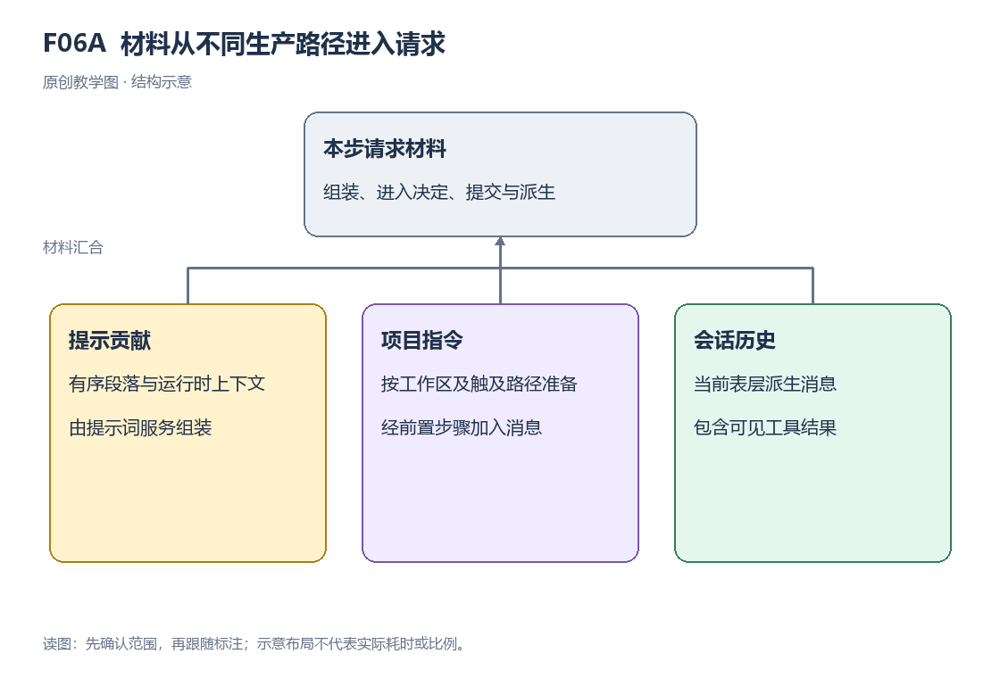
图 06A 是结构示意。提示词服务整理有序贡献；项目指令插件在前置步骤中准备并加入指令消息；会话历史由当前表层派生。它们共同影响请求，但不能全部画成“拼进同一个 system 字符串”。
系统提示词（system prompt）通常描述运行方式和工具使用等约束。运行时上下文提供当时环境材料。项目指令描述工作区规则。用户消息提出当前目标，工具结果给出已取得事实。知道每类材料从哪里来，才能检查冲突、遗漏与重复。
## 06.2 从贡献到请求冻结
插件通过 SystemPrompt.section 注册带名字和顺序的提示段，通过 context 注册动态上下文。这些注册是带作用域的贡献；近处作用域可以覆盖同名全局项，最终排序和特殊完整提示段规则由服务处理。不能假定注册时间就是最终文字排列顺序。
驱动在前置步骤领取输入，调用 assemble 得到组装结果，并把运行时上下文投影成适合本步的材料。接着经过 agent/pre-step 链决定是否进入以及进入哪些消息。项目指令插件在这里等待相关投影、按工作区与触及路径整理指令，再把需要的上下文放进进入消息。它不是一个默认向量搜索器。
进入步骤后，框架准备模型调用，记录需要的系统消息、首次进入的用户消息和请求信息，再派生并冻结请求。冻结意味着这次请求的内容不能被稍后修改的共享对象悄悄改变，不意味着下一步不会有新材料。
## 06.3 顺序与作用域的基础
贡献类似多个人填写同一份请求资料，但合并规则由系统决定。每项至少要有身份、范围和位置：身份帮助替换或去重，范围决定谁可见，位置决定有序组装。类比不表示任意人写入的文字都成为同等权限的指令。
材料进入对话时还带来源。例如项目指令与直接用户需求不是同一种生产途径。阅读原码应检查来源和注入边界，不能根据文本里写了“系统提醒”就改变它在软件中的真实来源。
## 06.4 三个生产与消费位置
<!-- evidence:start -->
作用域与工具贡献。 先合并作用域里的贡献，再取得可见工具 schema；参数在组装中被复制。
来源：实际文件，第 574—590 行；固定提交。节选保留原码，省略邻近上下文。
// Scoped sections shadow globals before the deterministic order sort.
const sectionByName = this.layers.merge(scope, layer => layer.sections)
const contextByName = this.layers.merge(scope, layer => layer.contexts)
// Validate order against pre-restriction names while collecting visible schemas.
const providers = [
...this.layers.global.toolProviders.values(),
...scopeLayers.flatMap(layer => [...layer.toolProviders.values()]),
]
const collected: ToolSchema[] = []
const knownNames = new Set<string>()
for (const provider of providers) {
const result = provider(context)
const schemas = result.schemas.map(({ name, description, parameters, deferLoading }): ToolSchema => ({
name,
description,
parameters: structuredClone(parameters),
...deferLoading === true ? { deferLoading } : {},
指令消息进入。 需要的指令材料按进入批次的位置插入，不是简单读文件后直接改系统字符串。
来源：实际文件，第 332—340 行；固定提交。节选保留原码，省略邻近上下文。
for (const message of pending) agent.inbox.remove(message.id)
if (desired === undefined || decision.messages.some(message => sameContextPayload(message, desired))) {
return decision
}
// Fold the context right after the claimed batch, so the direct prompt
// precedes it and the driver-appended runtime context follows it.
const lastClaimedIndex = decision.messages.findLastIndex(message => messages.includes(message))
const entered = decision.messages.toSpliced(lastClaimedIndex + 1, 0, desired)
return { ...decision, messages: entered }
首次提交。 firstAttempt 控制用户消息只在本步第一次提交；后面据日志构造请求。
来源：实际文件，第 419—425 行；固定提交。节选保留原码，省略邻近上下文。
if (firstAttempt) {
for (const message of decision.messages) {
this.session.append('user/message', message, { surfaceOp: 'append' })
}
}
firstAttempt = false
const request = this.buildRequest(config, preparedCall, assembly.tools, { turn, step }, startsRequestSeries, signal)
完整阅读路线。 路线区分启动前置、执行主链与提供方对照，不把它们误连为一次同步调用。
- packages/core/system-prompt/src/index.ts，
SystemPrompt.section / context / assemble。输入：注册的有序贡献；输出/交接：产生已渲染组装；先读契约与组装。固定提交第 405 行。 - packages/context/agent-instructions/src/index.ts，
apply → compose。输入：项目范围与指令文件；输出/交接：贡献对应材料；作为上一项的生产方回查。固定提交第 84 行。 - packages/core/agent-loop/src/agent.ts，
preStep。输入：待进入步骤与提示材料；输出/交接：组装及准入后的步骤输入。固定提交第 267 行。 - packages/core/agent-loop/src/agent.ts，
prepareRequest → buildRequest。输入：已准备调用、Session 日志与材料；输出/交接：提交并冻结发给模型的请求。固定提交第 547 行。
<!-- evidence:end -->
看 preStep 的组装、前置链和进入决定，再看本步首次用户提交控制。重试使用同一次已渲染组装，并不重新执行完整前置步骤或把直接用户消息重复记入历史。
## 06.5 分析示例：重复材料占了多少空间
教学请求包含工具指导 800 字节、项目规则 600 字节、用户需求 200 字节、历史 2400 字节，共 4000 字节。某插件又加入完全相同的项目规则 600 字节，新总量为 4600 字节，增加 15%。这只是字节统计，不是 token 或实际计费结果。
多一份相同规则没有提供新事实，还可能使来源难以辨认。合并前先识别同名项、作用域与历史中的既有材料，比盲目压缩整个请求更有针对性。另一方面，简单按文字相同删除也可能误删不同来源的必要表达，不能代替项目的真实去重契约。
## 06.6 在下一步加入项目约束
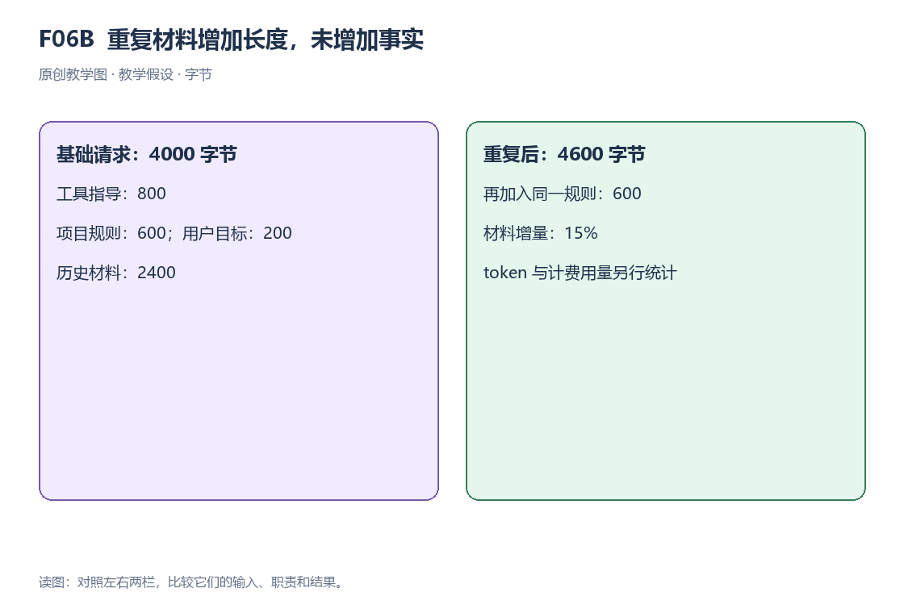
图 06B 是教学假设，用来展示排列与重复，不宣称项目存在这里列出的具体文字。假设项目要求“实验性功能必须注明”。读取项目说明后，下一步总结需要同时使用文件事实和可见项目规则。若规则不在当前材料里，不能用目录中“有那份文件”证明模型已经受它约束。
若在模型调用准备阶段收到取消请求，框架会校验取消信号并终止提交；未进入请求的材料不能作为后续推断的依据。当工具成功访问新目录时，项目指令插件会加载该目录绑定的特定规则；实际加载的规则内容直接由文件路径与激活配置决定。
## 06.7 常见误解
“所有项目指令都直接变成 system prompt”：本版本的项目指令通过前置步骤与指令消息路径进入材料，需按实现区分。
“更长的提示词必定更可靠”：长度只描述材料体积。冲突、重复和是否被正确执行仍要检查。
“冻结一次请求就冻结整个会话”：冻结保护本次材料；下一步可读取新消息、工具结果或新的表层状态。
## 06.8 小结与参考
模型输入是有来源、有作用域、有进入时点的一包材料。提示贡献、项目指令与历史的路径不同，最终在驱动的准备和提交边界会合。先追来源，再讨论效果，才能避免把不存在于请求里的规则当作约束。下一章讨论技能目录与正文的按需取得。
<!-- references:start -->
原项目文档用于复核，优先保留已有中文版：
行为旁证为测试源码，未在本次执行：
<!-- references:end -->
本章面试问答
本节追问交互链路的原理。回答引用的文件与行号可在可选证据附录复核。
Q1 · 提交与跟随为什么必须是两条链？合成一个"发送并等待结果"的接口会怎样？
考察点：异步产品架构的理解，能否解释回显、接纳、流片段、终态为什么是四种不同事实。
回答：上行链：会话交互控制器先 beginSubmission 建立本地待提交记录（客户端暂态＋附件退役回调），再调用 Client Session 的 prompt 带同一 requestId 经 RPC 到 Host（packages/client/ui-conversation/src/client/service.ts 第 275—283 行；packages/api/session-controller/src/client/sessions/session.ts 第 269—277 行），返回接纳结论。下行链：SessionHistoryController.follow 在准备快照前先安装事件监听与缓冲，再发出快照并处理缓冲后续（packages/api/session-controller/src/history.ts 第 120 行起）；事件按序号校验连续性——早于游标的略过，跳过预期序号则报错而不是无声跳过（history.ts 第 226—232 行）。
原理：两条链的时间特性根本不同：提交是"一次请求、一个结论"，跟随是"持续观察、无终点"。合成一个同步接口等于让 HTTP 请求挂住整个任务生命周期——连接超时、代理断开、页面刷新都会把"网络中断"误成"任务失败"；而且服务端无法向一个可能已消失的请求推送中间进展。分离后，接纳结果回答"系统收到了吗"，跟随链回答"进行到哪了、结果如何"，两者用 requestId 与游标对齐。先装监听再取快照的顺序也是原理所在：如果先取快照再订阅，快照生成到订阅生效之间的事件会丢失；缓冲则保证事件既不重复（游标去重）也不丢失（快照前到达的先存后放）。
追问：快照游标 40，缓冲里依次来了 39、41、43，各怎么处理？ 回答要点：39 已早于期待位置可略过；41 正常推进、期待 42；43 不能冒充 42，触发缺口处理。恢复观察需要新的有效快照与游标——检测出缺口不等于恢复完成（教材 6.1.6）。
Q2 · 桌面端为什么要有三个执行环境？启动顺序为什么是"先加载页面再启动后端"？
回答：三个环境是 Electron 主进程（窗口与受控桌面能力）、页面（Web 产品）与独立 Node Host（共享 profile 与服务）。reconcileBackend 先导航到打包页面，再启动后端；已加载的文档通过 boot IPC 响应继续激活，不换文档（apps/desktop/src/main.ts 第 567—575 行）。Host 子进程消息分类处理：ready（带服务 URL 与 injections）、platform-session、shutdown-complete、fatal；收到非法 IPC 事件则判定失败并终止子进程（apps/desktop/src/host-process.ts 第 206—218 行）。业务 HTTP 转发检查请求来源（origin 必须是 dsh-app://app，否则 403），删除 host/origin/cookie 等头并适配认证再转发（apps/desktop/src/web-document.ts 第 77—88 行）。
原理：三个环境是三条信任边界：页面跑远程内容逻辑（受隔离设置约束），主进程持有 OS 能力（窗口、协议、生命周期），Host 持有业务与真实状态。合并任何一个都会放大爆炸半径——例如让页面直接调 Agent 内部方法，等于把 shell 权限交给渲染进程。先加载页面再启动后端是感知优化与正确性的平衡：窗口立刻出现（有等待界面），Host 就绪后通过注入激活客户端；"窗口出现"与"业务可用"因此是两个检查点。IPC 只承载启动与关闭等控制消息，聊天业务仍走 HTTP 与流通道——控制面与数据面分开，故障定位才能先问"哪一面坏了"。
追问：关闭主窗口等于退出应用吗？ 回答要点：本版本普通主窗口关闭会隐藏并保留运行，退出应用才有任务中断检查；按外观推定进程行为是常见误读（教材 6.2.4）。
Q3 · 客户端的 Slots 与 Typert Remote 各解决什么问题？
回答：Host 拥有真实状态，Client model 维护可观察镜像，UI adapter 把镜像接到视图，Slots 把功能组件装进页面——位置由某个组件明确拥有，未知位置和所有权冲突不能静默吞掉。Typert Remote 把业务方法变成类型化远程调用：请求携带端点与参数，宿主解析对象身份与调用上下文，取消走独立信号；传来的 id 是对象的传输身份，不是对象本体，解析器不可用时应失败（教材 6.3）。
原理：Slots 解决的是界面扩展的"组合权"问题：如果每个功能直接 import 别的功能的 React 组件，界面就成了一张互相依赖的网，卸载任何一个插件都可能编译失败。位置所有权让插件之间只通过"声明位置＋注册内容"协作，与 Host 侧的插件注册是同构思想——但两者是不同注册表（教材 6.3 特意区分客户端模块系统与模型看到的技能目录）。Typert Remote 的"id 不是本体"是分布式系统的基本纪律：跨边界传递的只是身份引用，权限与生命周期仍在拥有方；把它当成可随意调用的本地对象引用，就会写出"拿一个 id 就以为持有服务实例"的错误代码。
追问：轨迹图和聊天气泡为什么可以长得不一样？ 回答要点：多个视图共用同一事实来源，各自决定展示结构；一个临时气泡可能在后续结算为失败尝试，渲染形态不能改写宿主事实。
Q4 · 向用户提问的工具与审批工具是一回事吗？超时后用户的回答去哪了？
回答：提问工具通过用户交互服务递交一批带稳定 id 的问题，界面可显示选项、辅助说明或自由文本，再按 id 交回答案；批准型呈现的样式只影响展示，实际同意必须依据指定答案含义。阻塞式等待与带前台超时的模式不同：超时可以先交付 pending 类结果并保留可回答的问题，后来的答案另有归属（教材 6.6）。
原理：两者都涉及"人类在环"，但契约不同：审批绑定某次工具调用的准入结论（成对事件、开放轮次内闭合，第 4 章），提问是收集结构化信息，可服务多种调用方。超时语义的原理在于"答案与问题实例绑定"：一次交互请求已经以 pending 结算后，迟到的答案不能回写进已完成的结果——否则会产生时间倒流的一致性问题；后到的文字作为新输入进入队列，参与下一次组装。这与第 1 章"已发出的模型请求不被后到输入修改"是同一条时间箭头原则在人机交互上的体现。
追问：为什么用户稍后补充一句话不会改写已完成的请求？ 回答要点：补充进入新的输入队列（followup/steer 语义）；只有尚未提交的组装才能吸收新约束。
Q5 · 语音、浏览器操作、电脑操作三项扩展的边界为什么必须分开说？
回答：语音识别输入是麦克风音频，输出是编辑器文字；只有普通用户提交把最终文字放进模型任务，识别完成不会自动成为已发出的用户消息。浏览器操作启动的浏览器归确切实时 Session，跨轮次复用，但恢复或 fork 不从日志恢复登录与页面状态。电脑操作直接观察与操作桌面，多会话动作需要协调；取消不能撤销桌面已经收到的点击或按键（教材 6.5）。
原理：三项扩展分别引入新的输入模态、新的执行面和新的物理世界接口，各自的不确定性来源不同：语音有迟到结果与会话切换问题（选区版本决定能否插入）；浏览器有"日志可回放事件、登录态不可回放"的恢复边界；桌面操作的效果发生在 OS 层，取消信号只能阻止未发出的动作——物理效果不可回滚。安装了桌面壳不等于这些能力开启，它们需要显式提供方与权限；这正是"能力存在"与"能力启用"分层（第 5 章 profile 原理）在产品侧的延续。
# 第 7 章｜技能的按需读取：目录可见为什么不等于正文已加载
## 07.0 说明“有这本手册”与递上整本手册
技能（Skill）是可复用的任务说明材料。假设有代码审阅、文档整理和接口排查三套说明，本次只做项目用途总结。若把所有正文提前放进请求，可能加入大量无关材料；若完全隐藏，又难以选择合适技能。
DSH 区分目录摘要与完整定义。本章追它们怎样发现、读取与进入上下文，并补充直接用户调用的另一条路径。前置为提示材料的来源和工具执行。
## 07.1 先知道名称，再取得正文
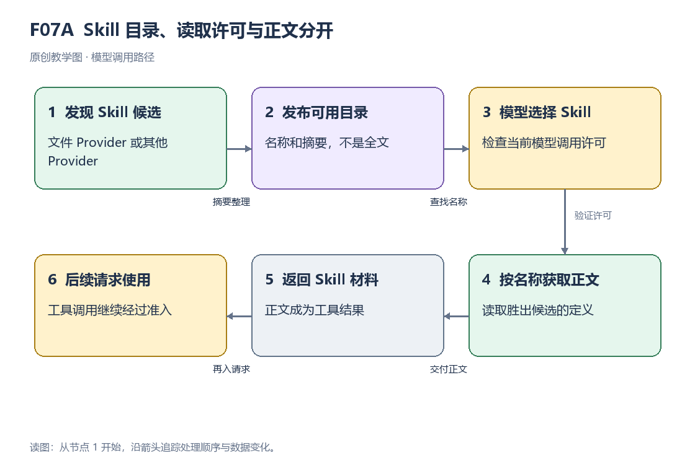
图 07A 是常规模型调用路径的结构示意。目录卡片只列名称和说明，取得正文需要明确查找。正文进入工具结果后，后续模型请求才能使用内容。图没有表达“发现就自动执行技能中的所有动作”。
## 07.2 注册表与提供方分别负责什么
SkillRegistry 管理可见提供方和候选。文件系统提供方负责从相应目录发现技能并读文件内容。list 返回摘要列表；get 按名称找胜出的候选，把候选定位信息交回对应提供方读取，再校验完整定义。这使消费方不必固定绑定某个文件目录实现。
工具插件在前置步骤贡献适用于当前智能体的目录，目录只含允许模型调用的技能；发现不完整时不能把它当成稳定新目录发布。模型提出 skill 工具调用后，执行体检查名称、当前可见摘要和模型调用许可，再 get 正文并返回。
这里还有用户直接调用路径：直接用户消息第一行的相应 /<name> 手势可在前置步骤加载允许用户调用的技能，并注入当前进入消息。外部文本不能仅靠出现同样字符伪造这一来源；未知名称或用户不可调用项也不是默认加载。因而不能把“正文总是在下一步才出现”当作普遍规则。
## 07.3 按需读取不等于权限授权
按需读取是到需要时再取得内容。技能正文是材料，可以指导做事，但读取它不会自动增加文件、网络或发布权限。工具是否可用、动作是否获准和运行环境怎样限制，仍有独立控制层。
目录中的说明也不是正文的替代品。摘要说“用于文档整理”，并不能支持你猜测完整要求、参数或禁用条件。提供方读取失败、技能已不在当前视图或调用方式不允许时，模型工具路径会给出错误，而不是悄悄执行猜出来的规则。
## 07.4 从摘要到正文的原码
<!-- evidence:start -->
摘要列表。 list 返回 snapshot 的摘要，不返回每份完整正文。
来源：实际文件，第 470—472 行；固定提交。节选保留原码，省略邻近上下文。
async list(options: SkillViewOptions = {}): Promise<SkillSummary[]> {
return (await this.snapshot(options)).skills
}
模型工具路径。 先查可见摘要和模型调用许可，再取得正文；读取失败有明确分支。
来源：实际文件，第 133—143 行；固定提交。节选保留原码，省略邻近上下文。
const lookup = { cwd: exec.agent?.session.header.cwd, signal: exec.signal, scope: exec.agent }
const summary = (await ctx.skills.list(lookup)).find(skill => skill.name === args.name)
if (!summary) {
throw new Error(`skill "${args.name}" is unknown or no longer available`)
}
if (!isModelInvocable(summary)) {
throw new Error(`skill "${args.name}" is not available for model invocation`)
}
const skill = await ctx.skills.get(args.name, lookup)
if (!skill) {
throw new Error(`skill "${args.name}" is unknown or no longer available`)
直接用户路径。 允许用户调用的完整定义变成带 skill-invocation 来源的指令消息。
来源：实际文件，第 189—200 行；固定提交。节选保留原码，省略邻近上下文。
const skill = await ctx.skills.get(name, lookup)
signal.throwIfAborted()
// Unknown names and user-disabled skills stay plain prose: the
// gesture was never a claim this boundary recognizes. The check sits
// on the loaded definition — the single lookup that produces what is
// actually injected.
if (skill === undefined || !isUserInvocable(skill)) continue
const source: SkillInvocationSource = { kind: 'skill-invocation', name, form: 'instructions' }
injections.push(createUserMessage({
content: [{ type: 'text', text: renderSkillContent(skill) }],
source,
}))
完整阅读路线。 路线区分启动前置、执行主链与提供方对照，不把它们误连为一次同步调用。
- packages/skill/skill/src/index.ts，
SkillRegistry.registerProvider / list / get。输入：提供方与技能名；输出/交接：定义目录与正文契约。固定提交第 356 行。 - packages/skill/skill-filesystem/src/index.ts，
FileSystemSkillProvider.list / get。输入：文件目录或指定名称；输出/交接：返回技能描述或正文；是注册表的具体提供方。固定提交第 150 行。 - packages/skill/tool-skill/src/index.ts，
apply；execute。输入：技能服务及模型给出的名称；输出/交接：先贡献目录，调用时 get 正文并返回工具结果。固定提交第 77 行。
<!-- evidence:end -->
把摘要读取、正文取得和调用许可分开看。它们共同决定当前可用材料；单独知道文件存在还不够。
## 07.5 分析示例：按需材料量
教学目录有三个技能，正文分别是 2000、3000、5000 字节，目录摘要合计 600 字节。本次只取得第一个技能，目录加正文为 2600 字节；若都加载则为 10600 字节，差额 8000 字节。计算假设两种方案都携带同一目录，忽略其他请求材料。
这说明按需取得可以减少本例材料量，不能直接推出 token、付费额度或任务成功率变化。多一次技能查找也有调度和读取代价；技能选错、说明太含糊或正文过时，可能降低效果。合理比较应同时看材料、取得次数与实际任务检查。
## 07.6 回到项目说明整理
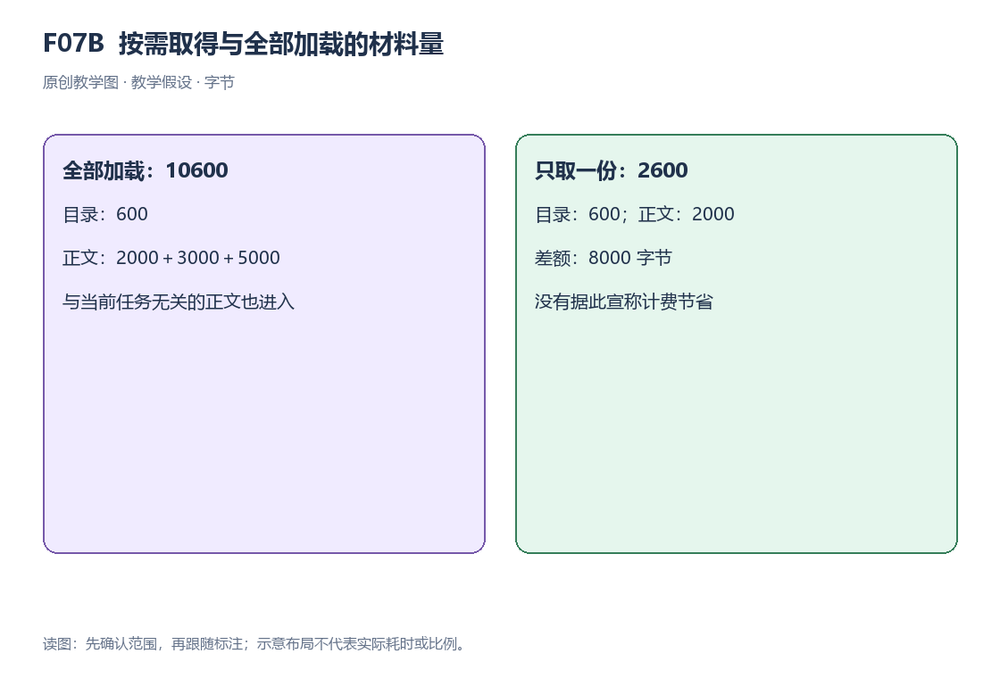
图 07B 是上述教学字节量的比较。若用户明确要求用“文档整理”技能，先检查能否按用户方式加载；若模型自行选技能，检查模型调用许可。取得正文后，按其中方法整理已读取项目材料，同时仍遵守现有能力和准入边界。
工具结果证明正文被取得，不证明正文已被正确遵循。最终总结仍需检查项目事实、引用和输出要求。发现与实际使用之间保留这种检查，比把“技能已加载”当作完成标志更准确。
## 07.7 常见误解
“目录列出一百个技能，所以上下文已包含一百份全文”：目录与正文有不同契约，应查看实际取得材料。
“任何页面里出现 /技能名 都会触发”：直接调用手势有消息来源与可调用策略限制。
“技能加载后可以绕过工具准入”：技能改变材料和工作方法，准入仍在第十一章的工具链里。
## 07.8 小结与参考
技能服务先提供可发现摘要，再按名称与调用方式取得正文。模型工具与用户手势走不同进入时点，但都不把材料读取自动扩大成执行权限。下一章处理材料随着会话变长的问题。
<!-- references:start -->
原项目文档用于复核，优先保留已有中文版：
行为旁证为测试源码，未在本次执行：
<!-- references:end -->
本章面试问答
本节追问评估方法的原理。回答引用的文件与行号可在可选证据附录复核。
Q1 · 回放（replay）固定了什么、没固定什么？"回放通过"能证明哪些命题、不能证明哪些？
考察点：测试金字塔与证据边界的理解，是否混淆"工程回归"与"模型质量"。
回答：deriveReplayScript 从已录制事件恢复模型响应条目；录制缺少正常 finish 片段时直接抛错，要求显式 override 文件，不会把残缺录制无条件当正常回放（packages/test-support/llm-replay/src/index.ts 第 462—472 行）。installLlmReplay 按配置选择接入点：配置了 providers 就注册 ReplayAdapter，否则在 llm/stream 事件边界拦截（第 1101—1104 行）。回放期间真实循环、工具链、日志全部照常运行。assertConsumed 检查两类问题：从未绑定到会话的脚本、每个会话未消费完的条目，报"fixture not fully consumed"（第 1107—1120 行）。
原理：回放是"依赖注入到模型边界"的测试方法：把最贵、最不确定的依赖（真实模型）换成确定脚本，其余系统保持真实——所以它能证明固定响应下的工程行为（工具交接顺序、失败恢复路径、日志完整性），不能证明任何关于真实模型行为变化的结论（固定输出对提示词改动天然无感）。assertConsumed 的原理是"录制—回放契约的完整性校验"：真实流程少请求一次模型，意味着代码路径变了而测试没察觉（剩余脚本未被消费）；多请求则固定响应不够用。没有这个检查，"断言没失败"会掩盖流程漂移——这正是"测试通过不等于覆盖了预期路径"的具体化。残缺录制必须显式 override 的原理同理：沉默地接受残缺数据等于让测试自己决定什么算正常。
追问：想证明"新提示词让模型更少遗漏实验性声明"，用回放行吗？ 回答要点：不行。固定输出由脚本决定，对提示词变化无感；需要同条件真实任务评价（教材 7.1.6）。
Q2 · 比较两个方案"哪个更好"，需要哪四组记录？为什么失败样本不能删？
回答：任务结果、时间（提交到接纳/首段输出/终态三个钟）、请求与工具次数、各类词元用量；失败和取消要有独立状态。项目已有计量：TokenMeter 注册三个投影（packages/llm/token-meter/src/index.ts 第 110—122 行）；遥测协调器监听 session/event 捕获、session/flush 触发后端交接，回调返回 void 而不是等待 SDK 刷新——这是轮次延迟契约（packages/session/session-telemetry/src/coordinator.ts 第 104—116 行）。成本按"该类别用量×对应单价"求和，单价与缓存口径在真实实验时核验（教材 7.2）。
原理：四组记录对应四个不可互相推导的维度：结果（对不对）、时间（多快）、用量（多贵）、失败（多稳）。只用一个综合分数会把取舍藏起来——教材 7.2.6 的教学例：方案乙省 30% 用量但少通过一项，"总体提升 30%"是无效表述。失败样本不能删的原因是幸存者偏差：失败任务往往消耗更多时间与请求，删掉它们会同时扭曲平均耗时和用量估计，让激进方案显得又快又省。遥测回调不等刷新完成的原理则是延迟预算：观测是旁路，不能阻塞主任务轮次——观测系统的第一条纪律是不改变被观测系统的性能特征。
追问：通过率从 80% 到 90% 怎么表述才严谨？ 回答要点：绝对差 10 个百分点，相对增幅 12.5%；口径必须注明，小样本不支撑泛化结论。
Q3 · 不变式、消息反馈、遥测三类证据的边界？为什么"交接游标"不是送达回执？
回答：运行时不变式检查始终应成立的数据或事件关系（例如请求材料可从记录重建），失败归因到拥有包；消息反馈记录读者对某条助手消息的评价，是日志事实，默认不进入模型上下文；会话遥测按选定策略捕获日志前缀、脱敏后交给后端。OTel 按需捕获由反馈事件触发：先校验事件是规范追加的事件本体（eventAt(seq) !== event 则拒绝并警告），再按该序号捕获前缀（packages/session/session-telemetry-otel/src/index.ts 第 218—230 行）。
原理：三者的差别在"谁生产、证明什么"：不变式是系统自证（结构性正确），反馈是用户主观输入（体验信号），遥测是运维观察（过程与用量）。混用的典型错误是把好评当验收判据、把遥测缺失当故障不存在。交接游标只表示"已交给传输层"，之后的崩溃、重载都可能丢失或重复——所以接收方必须按身份去重，不能累加收到的记录得出任务数；这与第 3 章"append 返回不等于落盘"是同一原理：每个异步边界都有各自的确认契约，跨边界推定"下一步必然发生"是分布式错误的主要来源。非规范事件拒绝捕获的原理则是真源纪律：只有日志里那一条事件授权捕获对应前缀，防止用重建或伪造的事件冒充运行事实。
追问：收到 1000 条遥测记录能说明 1000 个任务吗？ 回答要点：不能；重复与丢失都可能，去重基于适当身份，缺失要单独报告。
Q4 · "测试通过"与"改动有效"之间还差哪些环节？
回答：教材 7.1.6 的四个命题对应四种检查：行窗口只返回选定范围用单元测试；失败尝试不执行工具用固定失败响应驱动真实循环；实际服务能完成协议请求需要 API 测试；修改提示词后更少遗漏需要同条件业务任务评价。评价还要统一口径：任务集、版本、模型选择、验收规则、预算一致，变更项单独记录（7.2.4）。
原理：每一层检查排除一类威胁：单元测试排除实现错误，回放排除工程回归，API 测试排除集成错误，任务评价才接触"模型在真实分布上表现更好"这个命题。跳层测试的失败模式很典型：用回放证明提示词改进（对真实模型无感），或用十遍重跑同一回放冒充质量证据（确定性输出重复十次还是确定性的）。控制变量原则来自实验设计：模型与任务同时变了，比例变化无法归因——这是第 8 章归因表的统计学前提。
追问：为什么不设一个"综合分"？ 回答要点：样本不足时精确总分校准不了；教材第 7 章要求并列报告质量、时间、用量、失败，让取舍可见。
# 第 8 章｜上下文压缩：让历史变短需要付出什么
## 08.0 材料越来越多，并不等于当前请求都能放下
工具结果、补充要求和模型回答不断增长，而模型请求有上下文容量限制。压缩试图用较短摘要替换当前可见历史中的选定区域。本章追踪触发、区域选择、摘要和提交，重点区分“当前模型视图变短”与“原始事实被删除”。
目标是理解表层替换和评价代价。前置为会话投影与材料来源；这里只研究所选基本压缩提供方，不假定所有 profile 都启用了它。
## 08.1 同一历史的两种形态
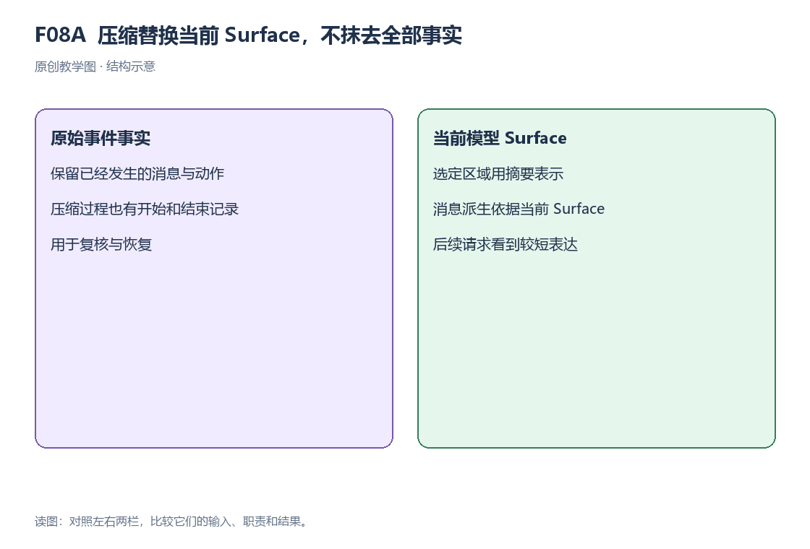
图 08A 是结构示意。历史事实仍可供复核；当前模型消息视图依据表层规则，选定区域可以由摘要表示。压缩并不是把磁盘中所有旧事件直接清空，也不构成跨会话知识库。
## 08.2 触发条件与压缩主链
基本压缩插件在前置步骤监听压力条件，并在符合上下文溢出错误的请求恢复路径尝试处理。compactIfNeeded 先确认目标与策略，读取计量状态。压力路径还要取得模型容量，计算相应阈值；未达到阈值就返回不压缩。没有合适区域也不应强行摘要。
选到区域后，流程验证表层范围与事务状态，记录压缩开始，准备材料并请求摘要。摘要取得后再次检查选区稳定性，然后提交表层替换，记录压缩结束。期间历史发生不符合约定的变化，不能拿旧选区摘要直接覆盖新状态。
前置压力压缩失败会记录警告并继续原有前置链；上下文溢出恢复还受目标策略与次数限制，不是无限自动重试。手工压缩又有忙碌、取消和持久化检查等不同条件。准确描述失败要停在对应分支，不能写成一种统一的“自动修好”。
## 08.3 逻辑视图和信息保留
表层可以理解为当前需要呈现给模型的消息节点集合。历史事实记录发生过什么，表层选择当前怎样表示这些事实，两者职责不同。摘要是有损表达：保留重点，但不保证逐字等价。项目名、限制条件、路径和未完成事项往往比普通叙述更需要保留。
长期记忆关注跨会话存取与检索；压缩当前会话关注本次输入容量。即使摘要写在日志里，也不能据此认定存在 embedding、语义搜索、自动分类或遗忘系统。
## 08.4 判断、提交与后续派生
<!-- evidence:start -->
压力触发。 前置链尝试压缩，失败会记录警告并继续；不能把警告解释成压缩已成功。
来源：实际文件，第 158—175 行；固定提交。节选保留原码，省略邻近上下文。
ctx.on('agent/pre-step', async (
{ agent, signal },
next,
): Promise<PreStepDecision> => {
if (!signal.aborted) {
try {
const result = await this.compactIfNeeded(agent, 'pressure', signal)
if (result !== null) logResult(result, 'step pressure')
} catch (error: unknown) {
if (error instanceof TargetPressureConfigError) {
if (this.warnedPressureConfigTargets.has(error.targetKey)) return next()
this.warnedPressureConfigTargets.add(error.targetKey)
}
const message = error instanceof Error ? error.message : String(error)
ctx.logger.warn(`step compaction failed: ${message}; continuing the turn`)
}
}
return next()
区域选择。 溢出路径在可选剪枝后选择可压缩范围，没有范围则返回 null。
来源：实际文件，第 294—301 行；固定提交。节选保留原码，省略邻近上下文。
if (trigger === 'context-overflow') {
if (prune !== undefined) {
prune.pruneSession(agent.session)
measurement = meter.measure(agent.session)
}
const range = selectCompactableRange(agent.session, measurement, 0)
if (range === null) return null
return this.compactRegion(range.start, range.end, agent, signal)
稳定性与提交。 摘要后先检查稳定性，再提交压缩体并闭合；失败路径记录错误结束。
来源：实际文件，第 232—245 行；固定提交。节选保留原码，省略邻近上下文。
if (options.owner === null) signal?.throwIfAborted()
assertStable(dependencies, session, summarized)
stage = 'commit'
const pending = commitCompactionBody(session, startEvent, summarized)
closing = true
const endEvent = session.append('compaction/end', lifecycle)
closed = true
result = completeCompaction(pending, endEvent)
} catch (error: unknown) {
failure = { error, stage: closing ? 'commit' : stage }
if (!closing) {
closing = true
try {
session.append('compaction/end', { ...lifecycle, error: errorChain(error) })
完整阅读路线。 路线区分启动前置、执行主链与提供方对照，不把它们误连为一次同步调用。
- packages/compaction/compaction-basic/src/index.ts，
事件绑定 → compactIfNeeded。输入：pre-step 或请求错误及上下文条件；输出/交接：判断是否进入压缩流程。固定提交第 148 行。 - packages/compaction/compaction-basic/src/region.ts，
区域选择与 compactSurfaceRegion。输入：可压缩历史区域；输出/交接：确定范围并组织表层替换流程。固定提交第 117 行。 - packages/compaction/compaction-basic/src/summarizer.ts，
summarizeWithLlm。输入：选定历史材料；输出/交接：通过 LLM 取得摘要；由区域流程消费。固定提交第 120 行。 - packages/core/session/src/index.ts，
deriveMessages。输入：含表层替换事实的日志；输出/交接：重建后续模型使用的消息视图。固定提交第 860 行。
<!-- evidence:end -->
阅读压缩时始终核对三件事：选了哪些节点，摘要是谁生成的，提交后哪些节点进入后续 deriveMessages。它们决定当前请求实际可见什么。
## 08.5 分析示例：长度与额外成本分开算
教学区域原为 12000 字节，摘要为 3000 字节，当前可见材料减少 9000 字节，即该区域缩短 75%。但为了生成摘要，流程仍要进行模型请求，产生输入与输出用量；这个一次性成本不能从长度减少率中消失。
设后续原本需要三次重复携带该区域，简化教学口径下，材料传输字节差额为 3×9000＝27000 字节。这不是模型计费节省，实际 token、缓存和摘要成本要按第十七章测量。若摘要漏了“某功能尚未稳定”，总结质量还可能下降。
取舍因此不是越短越好。小摘要降低后续材料压力，保留较多细节则可能更有利于任务正确性。比较时需要相同任务检查，而不只看压缩比例。
## 08.6 两份摘要的区别
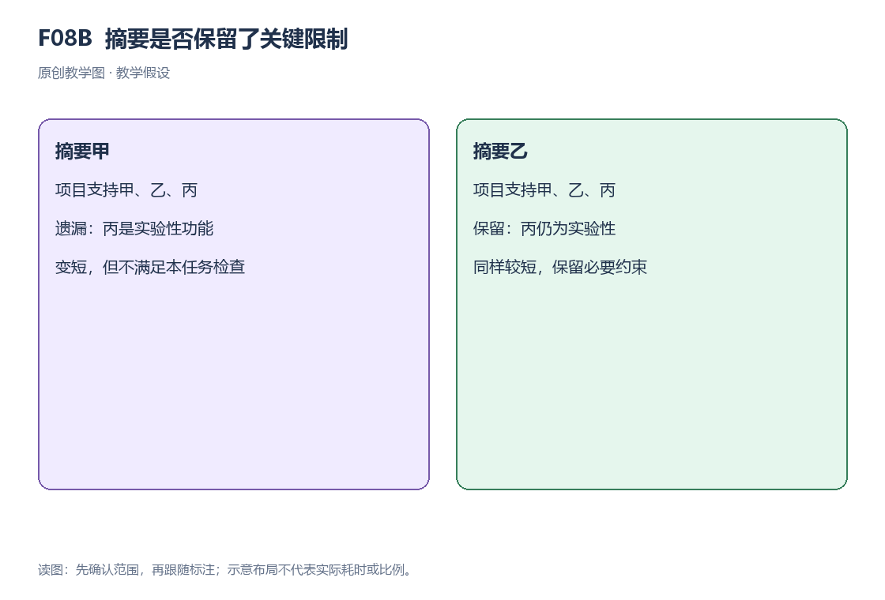
图 08B 是教学假设。摘要甲只记“项目能做 A、B、C”，摘要乙补上“C 仍为实验性”。两份都比原材料短，但只有乙保留这个案例要求的限制。对项目说明任务，摘要后仍应检查用途、主要能力和实验性声明是否可追到材料。
若生成摘要失败，原来的任务未必因此立即终止，要看触发路径；但也不能声称当前上下文已经缩短。若表层提交失败，失败阶段与可能留下的事务事件应单独检查。
## 08.7 常见误解
“压缩就是删除历史”：当前表层替换不等于抹去所有原始事实。
“生成了摘要就永久记住”：跨会话发现和检索不是本流程的默认能力。
“越短的摘要越优”：必须结合本任务需要保留的事实与约束检查。
## 08.8 小结与参考
压缩经过条件判断、区域选择、摘要生成、稳定性检查和表层提交，改变后续模型的可见材料。它有容量收益，也有生成成本和信息损失风险。下一章看模型请求自身的流式与失败边界。
<!-- references:start -->
原项目文档用于复核，优先保留已有中文版：
行为旁证为测试源码，未在本次执行：
<!-- references:end -->
本章面试问答
本节追问模型与 Harness 职责边界的原理。回答引用的文件与行号可在可选证据附录复核。
Q1 · "模型好像变聪明了"——面试官让你归因，你会检查哪四层？
考察点：能否区分运行时变化与权重变化，这是 Harness 工程师与调参视角的分水岭。
回答：按教材 8.4 的表逐层检查：①更多准确材料（提示材料、技能、读取结果）——关键事实是否进入请求、回答是否使用它；②不同动作规则（工具定义、准入或插件配置）——实际工具链与允许范围是否变化；③不同模型能力（提供方路由与模型选择）——实际模型身份、任务结果与用量；④模型参数更新——需要新权重或模型版本与独立评价，当前调用链给不出这个证据。教材 8.5 的实证结论：已核验的调用链是组装请求、选择适配器、调用模型、接收分片、形成会话事实，这条链没有提供权重更新的机制。
原理：归因要分层是因为四层的变化机制与验证方法完全不同：材料层看请求内容（可从会话事实重建），动作层看工具配置（可从 profile 与注册表核对），模型层看路由与凭据（可从请求日志核对身份），参数层只能靠独立评测对照新旧权重。混层归因的典型错误：把"这次看到了文件内容所以答对了"说成"框架训练了模型"——其实只是输入变了；把"换了个模型答得更好"归功于框架升级——其实是提供方能力差异。推理调用在数学上就是"固定参数下根据输入生成"，输入—输出关系的变化先查输入，是奥卡姆剃刀在工程归因里的应用。
追问：SFT 和 RL 为什么不在本教材展开？ 回答要点：它们改变参数，属于模型开发流程；本项目教材核验的是调用边界，避免把训练技术误写成运行机制（教材第 8 章开头）。
Q2 · LlmCallConfig 六个字段各管什么？为什么里面没有任何"学习"字段？
回答：provider、model 选择路由与模型；reasoningEffort 是提供方支持的推理强度选择，不是框架掌握的内部推理算法；temperature、maxTokens、stop 是请求选项（packages/llm/llm/src/call-config.ts 第 21—30 行）。它们描述本次调用的路由与选项，不含梯度、优化器或权重；上下文窗口与输入模态来自精确模型的能力解析，改界面标签不能让模型真的支持图片（教材 8.2、8.6）。
原理：配置字段的集合刻画了"Harness 能控制的全部"：路由到谁、用哪个模型、请求级选项是什么。凡是需要改参数才能实现的（例如让模型输出更稳定），在运行时的对应物只能是"改输入"（更清晰的材料、更强约束的工具契约）或"改选择"（换模型、调 temperature）——这个映射关系就是职责边界的可操作定义。reasoningEffort 的定位也说明同一件事：它只是把"想要更强推理"的意图转成提供方支持的选项，解释权与实现在提供方，框架不假装拥有推理算法。
追问：界面显示"支持图片"就能传图吗？ 回答要点：不能。多模态要适配器会传输、界面能呈现、压缩与回放能保留意义，加一个类型名字不等于链路支持（教材 8.6）。
Q3 · 调用前的"解析与冻结"在模型层为什么同样必要？
回答：准备调用时，运行时先找提供方注册项，向其适配器准备精确模型，再规范化模型信息与调用选项，解析后的配置被复制并深冻结；每次准备对象把模型信息、默认值与分派约定绑定起来（packages/llm/llm/src/index.ts 第 936—944 行）。下一次请求仍可能采用新的显式选择；日志中的请求头与助手提供方信息帮助重建当时用的是谁（教材 8.3）。
原理：模型层的冻结防的是"时间差事故"：从校验配置到请求真正发出之间，凭据可能轮换、配置可能热更新、模型列表可能变化——如果不冻结，校验通过的组合与实际调用的组合可能不同，重试时甚至每次都不同。冻结后每个 prepared call 是一个不可变的事实单元，"当时用的谁、什么参数"可以从日志精确重建，这正是第 7 章评价口径能成立的前提（比较必须知道比的是什么）。注意冻结的边界：它防扩展在这一边界改写请求，不保证提供方行为不变，也不保证输出正确——每个保证都有明确的管辖范围，这是理解任何工程契约的基本方法。
追问：为什么"provider 重复前缀可能命中缓存"不能从本项目推断？ 回答要点：缓存是提供方实现；本项目只能观察请求文字与用量字段，不能宣布命中或费用下降（教材 8.6）。
Q4 · 同一任务 A 版换 B 版同时改了指令、工具和模型，怎么归因收益？
回答：用第 7 章的配对口径：先固定其他条件做单变量实验，逐项开启变化；每次变化对照四层落点表（8.4）记录证据。若只能拿到整体结果，就如实报告"归因未分离"，不能把收益只记在最后一项变化头上。
原理：这是实验设计的因子分离问题：多个自变量同时变化时，观测到的差异是各因子效应的叠加（还可能有交互），任何"主要功劳"的叙述都是无证据的选择。工程上的解法是控制变量序列或正交实验；做不到时，诚实的做法是保留不确定性，而不是讲一个顺口的故事。这也解释了为什么第 9 章改进链要求"确定问题→定位首个偏差边界→有范围的改动→复核→评价"——每一步都在缩小归因模糊度。
# 第 9 章｜流式输出与重试：一次失败怎样留在同一步里
## 09.0 已经出现文字，为什么仍可能失败
页面已经显示“这个项目……”，随后请求失败。软件不能把这些临时片段自动当成完整成功消息，更不能执行失败输出里未完成的工具提议。本章分开调用准备、片段消费、最终提交与错误恢复。
目标是解释异步流和一次尝试的终结。前置为步骤、会话与请求材料；不需要先学网络协议的全部细节。
## 09.1 临时输出与最终事实
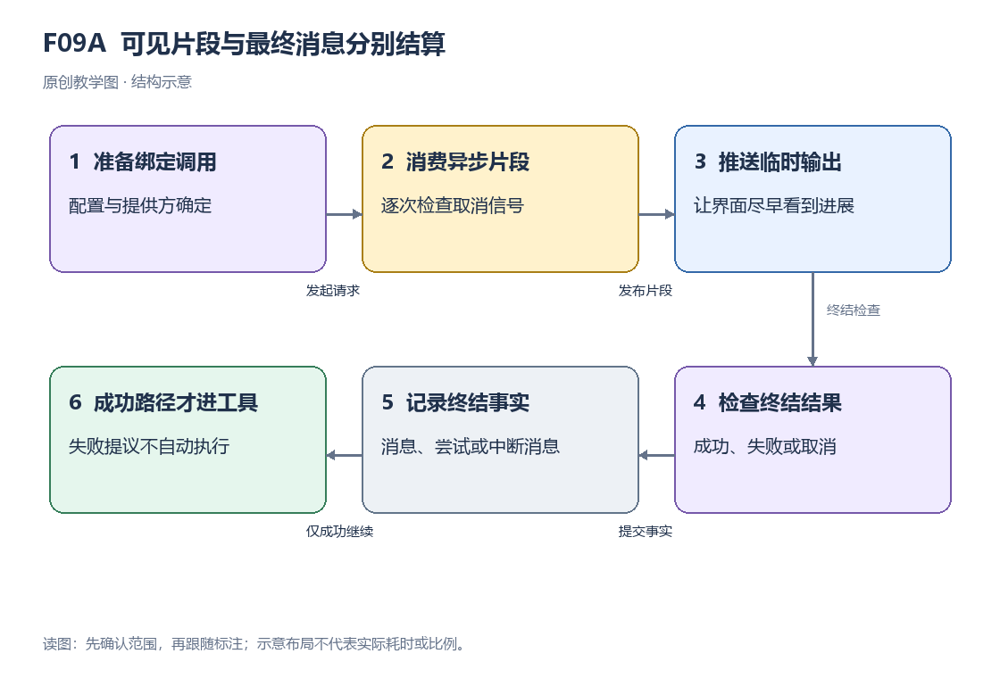
图 09A 是结构示意。临时流通知让观察者尽早显示进展；成功终结后，循环正式提交助手消息。两者是不同契约，实时可见不代表已经持久提交。
## 09.2 一次调用怎样绑定提供方
LLM 服务的 prepareCall 根据 provider 找到已注册适配器，准备目标模型并解析配置，返回绑定的调用能力。这个能力包含冻结配置与重试策略，每个 prepared call 只能分派一次。适配器把具体模型服务的接口转换为统一流。
DeepSeek 适配器生成异步片段，组合取消信号并使用空闲监测；超时、请求取消和传输失败有相应错误分类。结束或失败时会中止消费并尝试关闭迭代器，清理失败不应替代已确定的请求结果。
驱动用 for await 消费片段，逐次检查取消信号并推送临时输出。正常终结生成助手消息并记录；符合请求错误恢复流程的失败先记录尝试，再经 agent/request-error 链决定是否重试。不符合策略或已经取消时，不能假定一定再次请求。
## 09.3 异步迭代的够用基础
Promise 是将来的一次结果，异步可迭代对象则是分次到来的序列。下面是教学示意：
for await (const part of outputStream) {
showTemporaryText(part)
}
循环每次等待下一个片段。结束只表示这段消费走完，最终成功判定还要结合协议终态与错误信息。取消信号描述“现在不应继续”，但要由各层检查和传递，不能把创建信号等同于所有外部工作立即停止。
## 09.4 绑定、消费与恢复的原码
<!-- evidence:start -->
绑定调用。 服务找到 provider 注册并准备适配器调用，再解析和冻结配置。
来源：实际文件，第 936—941 行；固定提交。节选保留原码，省略邻近上下文。
async prepareCall(config: LlmCallConfig, signal?: AbortSignal): Promise<PreparedLlmCall> {
const registration = this.registration(config.provider)
const adapterCall = await registration.adapter.prepareCall(config.provider, config.model, signal)
const modelInfo = this.normalizeModelInfo(registration, config.model, adapterCall.model)
const resolved = this.resolveCallWithInfo(config, modelInfo)
const resolvedConfig = deepFreeze(structuredClone(resolved.config))
片段消费。 临时流在逐次取消检查中推进，不等同于最终消息提交。
来源：实际文件，第 436—443 行；固定提交。节选保留原码，省略邻近上下文。
const stream = preparedCall?.stream(request) ?? this.loopCtx.llm.stream(request)
signal.throwIfAborted()
live.start()
started = true
for await (const chunk of stream) {
signal.throwIfAborted()
live.push(chunk)
}
重试边界。 只有错误恢复返回 retry 才 continue 当前尝试循环，否则抛出错误。
来源：实际文件，第 505—509 行；固定提交。节选保留原码，省略邻近上下文。
signal.throwIfAborted()
if (action?.kind !== 'retry') {
throw new LlmError(finish.failure.message, finish.failure.code, finish.failure)
}
continue
完整阅读路线。 路线区分启动前置、执行主链与提供方对照，不把它们误连为一次同步调用。
- packages/core/agent-loop/src/agent.ts，
prepareRequest。输入：本步的材料与取消信号；输出/交接：进入 LLM prepared call 准备。固定提交第 547 行。 - packages/llm/llm/src/index.ts，
prepareCall。输入：模型配置与 signal；输出/交接：找到并绑定 provider；输出调用能力。固定提交第 936 行。 - packages/llm/llm-deepseek/src/adapter.ts，
DeepSeekAdapter.prepareCall / stream。输入：配置、材料及已绑定调用；输出/交接：产生模型流；作为具体提供方阅读。固定提交第 20 行。 - packages/core/agent-loop/src/agent.ts，
step 与 for-await 分支。输入：chunks、错误或取消；输出/交接：提交消息或 attempt；失败走 request-error。固定提交第 398 行。 - packages/llm/llm-retry/src/index.ts，
退避与 recover。输入：错误及重试上下文；输出/交接：返回重试动作或保留原错误；策略不属于固定循环。固定提交第 149 行。
<!-- evidence:end -->
注意 firstAttempt：本步首次提交用户消息后，重试不重复那批用户消息；已渲染组装也不重新跑整套前置步骤。失败尝试不会沿成功消息路径去执行工具。
## 09.5 分析示例：重试等待算在哪里
教学轨迹为第一次尝试用时 400 ms 后失败，退避等待 300 ms，第二次尝试用时 700 ms 后成功。不计其他开销，模型阶段共 400＋300＋700＝1400 ms，其中请求尝试时间 1100 ms，等待时间 300 ms，尝试数 2。
这些数字属于同一个步骤的假定恢复轨迹。若用户在等待时取消，不能继续照表算第二次尝试已经发生。重试可以容忍临时故障，但也增加时间与用量；策略由 provider 契约和重试插件处理，不是“所有错误永远再试一次”。
## 09.6 失败、取消与成功走不同出口
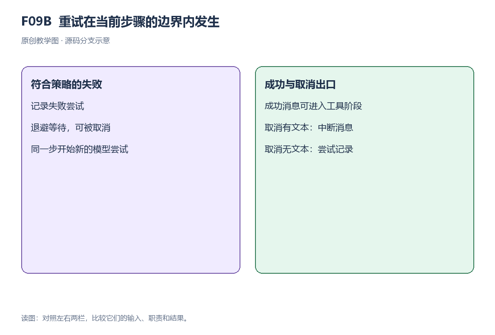
图 09B 是源码分支示意，时间无实测比例。普通失败记录尝试；取消时若保留了部分文本，可以记录带 interrupted 标记的助手消息，无保留文本则记录尝试。带中断标记不等于正常完成。
回到 README 任务：第一次模型流失败，符合策略则在本步重试；第二次成功给出读取调用，才进入工具执行。文件结果进入下一步，总结成功后再检查产物。这样避免把失败输出的工具提议当成已准备用来执行的动作。
## 09.7 常见误解
“每个 chunk 都是一条助手消息”：片段属于尝试中的暂态流，最终消息有自己的提交边界。
“重试只是再次发送同一函数，在哪里都一样”：重试位置决定是否重复材料、工具副作用或其他提交。
“取消后保留了文本，所以任务成功”：应检查 interrupted 与结束原因，并另做产物判断。
## 09.8 小结与参考
一次请求先绑定具体调用，再消费临时流，最后以成功、失败或中断事实结算。恢复发生在明确边界，受错误类别、次数、等待与取消限制。第二部分至此解释了模型看到什么，以及材料和请求遇到压力或故障时怎样变化。
<!-- references:start -->
原项目文档用于复核，优先保留已有中文版：
行为旁证为测试源码，未在本次执行：
<!-- references:end -->
本章面试问答
本节追问持续改进链路的原理。回答引用的文件与行号可在可选证据附录复核。
Q1 · 一次"总结漏掉了重要限制"，怎么定位漏在哪一层？每一层的证据分别是什么？
考察点：故障定位是否成体系，能否用会话事实逐层排除。
回答：三种可能三种证据（教材 9.1）：①文件窗口没包含限制——查 read 结果的行窗口与截断信息（{path, offset, lines, totalLines}，可能第 100 行的关键约束不在 41—70 行窗口里）；②压缩摘要丢了限制——查 compaction/end 事件与摘要内容（教材 2.3.7 的"摘要乙才保留实验性声明"）；③模型看到了没用——对照请求材料与最终回答。工具结果、当前消息表层、请求配置三类事实支撑区分。
原理：这是"首个偏差边界"定位法：沿着材料流（磁盘→工具→历史→请求→回答）找第一个与预期不符的环节，改动就落在那个环节。它的原理与分层循环（第 1 章）一致：每一层有自己的事实记录，所以任何现象都能二分定位；没有分层事实的系统只能整体重跑碰运气。同时它防止两类错误经验：把"工具根本没执行"归给模型（其实被准入拒绝了），把"环境巧合的成功"写成技能规则（没有版本与条件约束的"经验"不可复现）。
追问：经验落成什么产物？各自生效条件？ 回答要点：文档要被读取、技能要按允许路径加载、程序要进入已启用插件版本、模型配置要解析到实际路由——"文件保存在磁盘上"只是第一个环节（教材 9.2 表）。
Q2 · setPluginEnabled 一步"启用"实际做了哪些事？为什么启用成功还可能返回 "overridden" 警告？
回答：实际实现按顺序：列出插件找到目标条目（不存在报 unknown-plugin）、检查 readOnlyReason（只读条件拒绝变更）、把启用状态写入 profile patch 文件、按运行配置处理重载（HMR 启用时重载受影响的 patch），然后重新列出插件核对当前状态；若当前状态与目标不一致且存在 HMR 上下文，返回 overridden 警告（packages/boot/plugin-manager/src/index.ts 第 425—434 行）。
原理：这五步是"管理动作"的标准形态：前置校验（目标存在、可写）→持久化声明（写 patch，让重启后仍生效）→应用变更（重载）→回读验证（确认世界真的变了）。回读一步的原理尤其重要：写入了期望值不等于运行时接受了它——HMR 未启用时原组合保持到重启，变更影响的是"下次启动"；有 HMR 时也可能被更高层配置覆盖。显式返回 overridden 状态，明确拆解"声明"与"生效"两层事实。
追问：安装成功等于行为正确吗？ 回答要点：不等于；安装解决版本与启用，行为正确要靠回放回归与真实任务评价（教材 9.3、9.4）。
Q3 · 修复"工具结果丢失"这类缺陷，回放回归和真实评价各负责什么？
回答：旧轨迹的回放可以判断：现有程序是否仍产生预期工具事件与终态、fixture 是否被完整消费（assertConsumed，packages/test-support/llm-replay/src/index.ts 第 1107—1120 行）。若新行为需要模型作出不同选择，冻结旧响应的回放无法判断，必须实际任务评价（教材 9.4）。
原理：分工由"变化落在哪一层"决定：程序层的回归是确定性的，固定输入下应当复现确定输出，回放恰好提供确定性；模型行为层的变化是非确定性的，必须让真实模型在新条件下重新生成。两者的置信来源不同——回放的置信来自"同一输入同一输出"的可重复性，任务评价的置信来自任务分布与判据的代表性。混用的两个方向都是错误：用回放证明模型变好（无感），用一次真实成功宣布修复（无分布）。完整改进链因此是：回放守工程回归，评价守业务效果，两者都过才谈采用。
追问：为什么失败也要留下条件记录？ 回答要点：一次恢复成功不代表所有会话路径相同；完整评价需要第 7 章的多口径，不能只数"成功安装次数"。
Q4 · 计划模式、Todo、Goal 三个"协作状态"的原理差异？
回答：计划模式给模型附加工作指引并在日志记录开关，是软性协作状态，不代替沙箱与审批；用户切换可能先待生效，到获接纳的步骤边界才记录。Todo 是会话待办列表，工具整值替换，"completed"是一项记录而不是测试证据。Goal 保存同会话持续目标与修订，继续的 Round 有连续编号与上限；阻塞表示因问题停止，不应为了"正在运行"的外观无限追加轮次（教材 9.6）。
原理：三者作用在不同的因果链上：计划模式改的是"模型看到的工作指引"（材料层），Todo 改的是"任务的事实清单"（会话事实层），Goal 改的是"多轮推进的组织方式"（驱动层）。共同的设计纪律是"状态≠证据"：待办写 completed、目标写运行中，都只是声明，与测试结果、产物检查分属两个世界——把声明当证据，就会出现"卡片全绿但功能是坏的"。Round 上限与阻塞语义则防止最坏的组织行为：为了不面对失败而无限续跑，把资源耗在无进展的循环里。
追问：为什么页面选中计划模式与"当前步骤已采用"有时间差？ 回答要点：选择在获接纳的步骤边界才记录；界面状态与运行事实是两条链（教材 9.6、6.1）。
Q5 · Webhook runtime"发起即返回"的设计丢了什么？部署方必须自己补什么？
回答：这个 runtime 使用发起后即返回的分派方式，自己没有持久队列、重试、去重或完成状态；相同 delivery id 再来一次可能创建重复会话；接收成功与新会话完成之间没有等号。需要可靠去重或业务完成跟踪的部署必须另外提供相应机制（教材 9.7）。
原理：这是"至少一次"与"恰好一次"投递的经典权衡：发起即返回让 HTTP 处理不阻塞在 Agent 任务上（快速确认、简单实现），代价是调用方无法从返回值得知任务结果，重试也无法被自动去重——恰好一次语义需要幂等键＋持久记录＋完成确认的完整闭环，runtime 没有实现就不应该假装有。外部数据"经过验证"也不自动成为用户授权：验证回答"它来自声称的来源"，授权回答"它可以让系统做什么"，两者是不同安全属性——受信任规则决定发起什么工作，预设与工作区边界决定能做什么。面试里能主动说出"这个组件的可靠性边界在哪、缺口谁补"，比背出它有什么功能更能说明工程判断力。
追问：Schedule 的"明天九点"怎么落到规范记录？ 回答要点：自然语言时间需要明确解释成带时区的规范时间；浏览器当前时区不是会话永久默认值；到时投递、实际交付、模型完成提醒后的工作是三个不同事实（教材 9.7）。
# 第 10 章｜插件框架与运行配置：这些部件怎样装成一个应用
## 10.0 用过接口，再问谁把它装起来
前九章不断使用模型、工具、会话与提示词服务。现在回到启动：是谁提供这些服务，为什么同一接口可以换实现，当前启动到底启用了什么？Cordis 是 DSH 使用的插件框架，运行配置（profile）决定怎样组装应用。
目标是沿启动入口找到最终插件树，理解服务与提供方的关系。前置是已经看懂这些服务在任务中的职责，不要求先掌握 Cordis 内部实现。
## 10.1 配置层怎样汇合
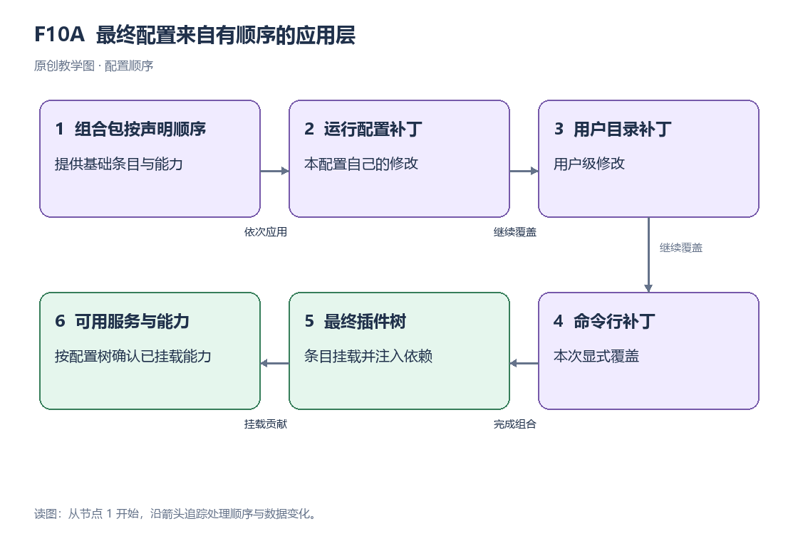
图 10A 是配置顺序示意。profile 列出的组合包（bundle）依次应用，然后是 profile 自己的 patch、home 级 patch，最后是命令行 patch。层级名称表示来源，箭头表示应用顺序，不能简单理解为逐字段递归合并。
## 10.2 启动到挂载的主链
CLI 解析启动方式与参数，profile 模式进入 runProfile。运行器准备环境、组合 profile，并安排启动失败与关闭处理。组合过程读取 profile 声明、解析各组合包和补丁，得到 Cordis 配置条目。boot 挂载树上的插件，各插件贡献服务、事件监听与可逆注册。
消费者通过上下文接口使用能力，例如文件工具使用文件服务，循环使用模型服务。这样消费者关注契约，提供方负责实际实现。注册、注入和挂载必须由真实配置兑现；源码里有一个包并不说明当前树包含它。
官方架构中的 base 是多种 profile 的共享第一层，而 sdk-minimal 是例外：它的组合包拥有完整显式配置树，不应用 base。不同 profile 对热重载的设置也不同。讨论默认能力必须指定配置范围。
## 10.3 依赖注入与生命周期
依赖注入（dependency injection）让插件声明所需服务，再由配置环境提供。它不是“任何名字都能自动找到实现”；服务未满足、作用域不同或注册冲突都需要按框架处理。
注册通常是插件生命周期内的副作用，卸载时撤销。可逆注册意味着撤销监听或能力声明，不代表插件曾经发出的网络请求、写出的文件也自动回滚。你要区分“应用树恢复”与“外部世界恢复”。
## 10.4 入口、组合与服务树的原码
<!-- evidence:start -->
启动入口。 profile 模式把选择、补丁和参数交给共享运行器。
来源：实际文件，第 31—42 行；固定提交。节选保留原码，省略邻近上下文。
switch (invocation.mode) {
case 'profile': {
const { runProfile } = await import('./profile-boot.ts')
try {
await runProfile({
environment: loadLayeredEnv('dsh'),
profile: invocation.profile,
fromDefaultProfile: invocation.fromDefaultProfile,
patchFiles: invocation.patches,
args: invocation.args,
...profileOptions,
})
顺序组合。 层数组按顺序展开后应用到空条目列表，不是随意改变合并顺序。
来源：实际文件，第 731—737 行；固定提交。节选保留原码，省略邻近上下文。
export function composeEntries(
layers: readonly PatchOptions[][], warn: (message: string) => void = () => {},
): EntryOptions[] {
return applyEntryPatches([], structuredClone(layers.flat()), (message: string, ...args: unknown[]) => {
let index = 0
warn(message.replace(/%C/g, () => JSON.stringify(args[index++])))
})
消费者插件。 文件插件通过上下文服务契约建立工具；具体服务由应用树满足。
来源：实际文件，第 54—64 行；固定提交。节选保留原码，省略邻近上下文。
export function apply(ctx: Context, config: Config): void {
// schemastery (Config) has already filled every defaulted field.
const resolved = config as ResolvedConfig
assertPositiveInteger('readLimit', resolved.readLimit)
assertPositiveInteger('readMaxLineLength', resolved.readMaxLineLength)
assertPositiveInteger('readMaxBytes', resolved.readMaxBytes)
assertPositiveInteger('readStreamMinSize', resolved.readStreamMinSize)
applyReadTool(ctx, {
limit: resolved.readLimit,
maxLineLength: resolved.readMaxLineLength,
maxBytes: resolved.readMaxBytes,
完整阅读路线。 路线区分启动前置、执行主链与提供方对照，不把它们误连为一次同步调用。
- apps/cli/src/bin.ts，
runCli。输入：CLI 参数；输出/交接：解析启动模式并转入 profile runner。固定提交第 26 行。 - apps/cli/src/profile-boot.ts，
runProfile。输入：profile 名称与 patches；输出/交接：取得 profile 配置，准备运行应用。固定提交第 244 行。 - packages/boot/app-boot/src/profile.ts，
loadProfile → composeEntries。输入：profile 和依次叠加的层；输出/交接：输出最终 Cordis entries。固定提交第 704 行。 - packages/boot/app-boot/src/index.ts，
boot。输入：已组合条目；输出/交接：挂载配置树；服务可由插件贡献。固定提交第 972 行。
<!-- evidence:end -->
本课程只静态查看启动逻辑。不要为了看配置直接假定 --dump-config 是无写入命令；profile 解析可能初始化目录和协调文件。本教材没有执行它。
## 10.5 分析示例：覆盖整个 config
以下是教学对象，不是可直接使用的项目配置：某条目起初的 config 为 {timeout: 100, limit: 20}，后层替换它为 {timeout: 300}。若本次补丁按条目替换整个 config，最终显式字段只有 timeout；limit 不会仅因旧层存在就继续留在对象里。
之后 schema 可能为缺省字段补默认值，但那是配置解析的另一阶段。比较最终行为时应检查默认值，不应假定原来的 20 自动继承。顺序覆盖让组合可明确替换条目，代价是后层要完整表达需要保留的显式配置。
## 10.6 提供方替换的含义
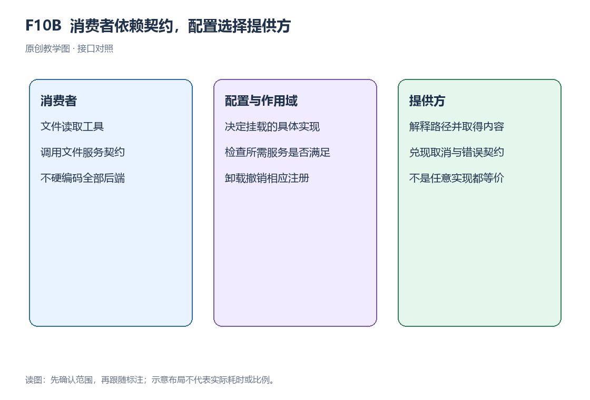
图 10B 是接口对照，不表示两种互斥文件服务一定同时挂载。阅读任务仍调用同一文件服务契约；后端由配置选择。替换提供方时，要核对路径、取消、错误和输出契约，不能只因为方法名一样就认定完全等价。
回到 README 总结，先确认当前 profile 包含循环、工具、文件服务与模型提供方，再检查所选模型和工具可见范围。技能、压缩或某种 MCP 能力是否存在，也应从当前树找证据。
## 10.7 常见误解
“包安装了，能力就启用了”：安装与挂载是不同动作，当前 profile 决定是否进入应用树。
“所有 profile 都带 base”：sdk-minimal 的明确例外推翻这一概括。
“卸载插件会撤销它做过的一切”：生命周期可以撤销注册，不保证外部副作用回滚。
## 10.8 小结与参考
运行配置把声明、组合顺序和具体提供方变成应用树，插件把能力贡献给上下文接口。任务主链并没有一个可以脱离配置解释的万能默认实现。下一章在这棵树上追一次工具准入。
<!-- references:start -->
原项目文档用于复核，优先保留已有中文版：
行为旁证为测试源码，未在本次执行：
<!-- references:end -->
本章面试问答
本节追问多 Agent 协作的原理。回答引用的文件与行号可在可选证据附录复核。
Q1 · spawn 与 fork 的上下文起点差在哪？"取最近已完成轮次前缀"这个规则为什么是对的？
考察点：子代理上下文继承的精确理解，能否区分"历史一致前缀"与"当前进行中状态"。
回答：spawn 把空种子交给共享驱动——子会话不继承父历史，由驱动铸 id 并标记 cwd、lineage、深度（packages/subagent/subagent-spawn-in-process/src/index.ts 第 54—59 行）。fork 用 completedTurnPrefix：从父事件里找最后一个 turn/end，截取到该位置（含）的前缀；没有已完成轮次则返回空数组（packages/subagent/subagent-fork-in-process/src/index.ts 第 48—55 行）。父代理经 Runtime 启动子任务前还有一道校验链：提供方存在、能力匹配、深度上限、输出 schema 合法（packages/subagent/subagent/src/index.ts 第 559—570 行）。
原理：fork 的种子必须是"一致的前缀"。正在进行的轮次没有终态：工具批次可能只执行了一半、助手消息可能尚未提交、压缩可能尚未闭合——把半个轮次复制给子会话，等于让子代理从一张"中间状态快照"开始推理，它引用的上下文在父会话里可能马上被推翻。以 turn/end 为界利用了第 1 章的分层事实：轮次边界是驱动确认的完成点，前缀内部自洽。seq === 数组下标 的不变量（第 3 章）让这个截取是一次 slice。空数组退化为新起点的行为也说得通：没有完成轮次就没有可继承的一致前缀，宁可少继承也不继承脏状态。
追问：刚在当前轮次读到的 README，fork 会带走吗？ 回答要点：不会；应依赖已完成历史或显式任务材料设计交接（教材 10.1.8 的误解清单）。
Q2 · 多个子会话在同一进程里，为什么教材说这不等于隔离？会带来什么实际问题？
回答：多个会话可以有独立历史和生命周期，仍运行在同一系统进程内；名称 fork 描述历史起点，与操作系统 fork 不是一件事（教材 10.1.4）。进程内 spawn 提供方把任务交给共享驱动；取消需要检查实际 provider 的生命周期与返回状态，不能假设外部子进程或远端任务必然同步终止（教材 10.1.9）。
原理：隔离有三个层次：逻辑隔离（独立会话、独立历史——本实现具备）、资源隔离（内存、CPU 配额——进程内共享）、故障隔离（一个会话崩溃不拖垮其他——进程内不成立）。进程内实现换来低开销与简单部署，代价是共享进程命运：死循环或内存膨胀会影响同进程所有会话。资源上限因此必须由 Runtime 与驱动显式维护（深度上限就是其中之一，防止子代理再生子代理的无限递归）。理解这一点才能正确回答"多 Agent 是不是更安全/更稳"：身份与历史是分开的，资源与故障不是。
追问：子代理成功等于父任务正确吗？ 回答要点：不等于。父代理承担汇合责任：子结果按契约交付后，还要回到父任务验收条件（教材 10.1.7）。
Q3 · Agent Teams 的邮箱机制为什么要有"投递确认"？writeScopes 为什么不是文件锁？
回答：成员快照记录持久身份（id 是 SessionId、name 是稳定标签、context 是 fresh/fork、phase 是创建阶段，packages/experimental/agent-team/src/types.ts 第 47—55 行）。消息先在 Lead 记录 queued，目标 inbox 或历史完成持久记录后再有投递确认；未确认的差额构成可恢复邮箱；投递采用 Steer 语义，运行中的目标在步骤边界接收。任务快照带 revision、ownerId、blockedBy（保持无环）与 writeScopes（types.ts 第 74—83 行）；writeScopes 只是规范化路径提示，用于重叠警告，不是文件锁（教材 10.2）。
原理：邮箱的原理是跨会话消息的可靠投递需要"记录—确认—重放"三件套：queued 是发送方声明，确认是接收方证据，两者之间的差额就是崩溃后需要恢复的部分——没有这个差额集合，恢复时既不知道哪些消息没送到，也不知道哪些已送达不能重发（重复投递会触发重复工作）。Steer 语义则保证消息进入的是步骤边界而不是打断在途请求，与第 1 章的输入时点原则一致。writeScopes 的定位来自并发控制的理论：要真正防覆盖需要互斥（锁）或事务（冲突检测＋回滚），而提示性路径范围只够做"静态警告"——它能在任务分派时发现两人声明了重叠区域，不能在写入瞬间阻止竞争。教材明确"两位成员仍可能在共享工作区互相覆盖"，这是把并发安全的责任如实划给部署方，而不是给一个虚假的安全感。
追问：成员 phase 是 active 就表示正在生成回答吗？ 回答要点：不是。创建生命周期阶段与"此刻是否运行"分开记录；判定运行状态要看驱动与会话事实（教材 10.2）。
Q4 · 工作流的 phases 字段能当执行图读吗？后台 Jobs 的状态为什么不能合成一个布尔值？
回答：工作流启动前先验证元数据与参数，不靠执行脚本文字猜配置；phases 是进度展示说明，不能推出执行图按标题串行推进。引擎是可替换服务，现有 PTC 实现通过共享程序运行时执行脚本；提供方选择、总 Agent 上限、执行策略与取消由引擎和消费方拥有（教材 10.4）。后台 Jobs 统一身份、拥有者、状态与输出控制；done 要等资源释放；running、stopping、completed、killed、failed 各有含义。
原理：phases 与执行图分离是"展示与语义分离"原则：进度说明面向人，执行拓扑面向引擎，把两者绑定会让展示文案变成隐式契约（改个标题就改变了行为）。任务状态不能合成布尔的原理是终态之间有本质差别：completed（正常结束、资源已释放）、killed（被强制终止，可能有未清理资源）、failed（错误结束）对恢复、清理、重试的含义不同——压成 true/false 后，"要不要清理""能不能重试"这些后续决策失去依据。这与第 1 章"accepted 不是终态"、第 7 章"失败要有独立状态"贯穿同一条线：状态粒度决定可解释性。
追问：模型读输出与界面看输出的游标为什么互不推进？ 回答要点：模型用运行时持有的消耗游标，界面按字节位置读取；两种消费互不干扰，输出环有界，结束时封流（教材 10.4）。
Q5 · 评估"把一个任务拆给三个子代理"是否值得，你会看哪些量？
回答：按教材 10.1.6 的教学框架：执行区间可能重叠（200＋max(700,700)＋250＝1150 ms），但要加上交代材料、汇合检查的成本；若串行则为 1850 ms；再按第 7 章同时看质量、时间、用量、失败——重复读取可能增加用量，结果整合可能引入不一致。对"读取 README 并总结"这种小任务，创建多成员的组织成本可能超过收益（教材 10.3）。
原理：并行收益的来源只有两个：真正独立子任务的执行重叠，以及单个上下文装不下全部材料时的分工；两者都不成立时，拆分只增加协调开销（Amdahl 定理的调度成本版：串行的交代与汇合部分是上限）。所以判断拆分要用四口径而不是直觉的"更快"：质量上子结果是否可验证、时间上重叠是否真实发生（还要算启动与汇合）、用量上是否重复读取同一批文件、失败上子任务失败如何传播到父任务。最后回到贯穿全书的判断式：父代理说"大家完成了"不是证据，子会话结果、邮箱投递与任务板状态才是。
# 第 11 章｜工具准入与审批：允许执行的决定在哪里发生
## 11.0 提出动作不等于获准动作
模型提出文件读取或其他工具请求后，系统还要判断是否执行。把模型输出直接等同于权限，会忽略策略、审批、守卫、执行环境和结果规范化。本章追允许、询问与拒绝三种路径。
目标是找到实际执行体的进入边界，并区分“执行前拒绝”和“执行后错误”。前置为文件工具与插件装配；这里不声称已经完整追踪所有操作系统沙箱实现。
## 11.1 工具体前后都有处理

图 11A 是简化流水线，拒绝分支跳过工具体。结果后处理仍可以参与拒绝或执行结果的形成，不能只看最终错误标记判断执行体是否曾运行。
## 11.2 从调用到最终结果
循环记录开始的工具调用，工具服务创建执行上下文并检查取消。前置链 tools/pre-execute 可以允许、拒绝、取消或提出审批请求。需要询问时，通过审批服务取得一次结论。允许后再检查单调守卫；守卫可否决，不能把一个已经应拒绝的调用随意升级为授权。
进入分派后，注册表重新解析可执行工具，融合调用方与包装层取消信号，再调用真实 execute。执行体返回的规范对象经过成功结果构造；抛错被转成工具错误。之后还有后置处理、内容约束和最终结果通知，循环再按约定顺序记录模型面对的结果。
审批服务记录 approval/asked 与 approval/decided，需要位于开放轮次内。allowed-once 是这次审批的允许结论；它不意味着所有未来同名调用永久放行。审批服务缺失或无法得到有效授权时，不能默认按允许继续。
## 11.3 三种边界分别回答什么
策略回答“这次调用应怎样判定”；审批回答“这次需要的确认结果是什么”；执行环境回答“实际动作可以访问什么”。沙箱或文件系统守卫提供具体范围限制，但它们不是审批弹窗的另一种名字。
教学上可把它类比为门口决策、一次通行许可与场地围栏。这个类比只用于分工，不证明任何 OS 隔离方式已经启用。实际边界要看 profile、工具链与提供方配置。
## 11.4 准入与真实执行的原码
<!-- evidence:start -->
前置与询问。 先运行前置决策，只有 ask 才进入审批服务路径。
来源：实际文件，第 1504—1511 行；固定提交。节选保留原码，省略邻近上下文。
const carrier = scopeTarget(this, exec.agent)
const gate = await this.ctx.waterfall(
carrier, 'tools/pre-execute', exec,
() => Promise.resolve<PreToolDecision>({ kind: 'allow' }),
)
const askResolution = gate.kind === 'ask'
? await this.serviceAsk(exec, gate)
: { decision: gate, approvalCancelled: false }
审批事实。 询问与决定成对记录；返回的是本次 outcome。
来源：实际文件，第 224—233 行；固定提交。节选保留原码，省略邻近上下文。
const id = ApprovalRequestId(randomUUID())
session.append('approval/asked', {
id,
toolName: req.toolName,
...req.callId !== undefined ? { callId: req.callId } : {},
...req.reason !== undefined ? { reason: req.reason } : {},
})
const outcome = await this.decide(req, session)
session.append('approval/decided', { id, outcome })
return outcome
真实执行体。 bodyInvoked 与 execute 指出实际进入点；执行抛错被转为工具错误。
来源：实际文件，第 1578—1587 行；固定提交。节选保留原码，省略邻近上下文。
const tool = this.resolveExecution(exec.name, exec.agent, exec.parent !== undefined)
if (!tool) throw new ToolNotFoundError(exec.name)
state.bodyInvoked = true
const returned = await tool.execute(exec.arguments, exec)
const result = this.createSuccessResult(exec, tool, returned)
return isAborted(signal)
? toolAbortedResult(result)
: result
} catch (error: unknown) {
return toolErrorResult(error)
完整阅读路线。 路线区分启动前置、执行主链与提供方对照，不把它们误连为一次同步调用。
- packages/core/agent-loop/src/tool-calls.ts，
executeToolCalls。输入：工具批次；输出/交接：记录调用并交给工具服务。固定提交第 60 行。 - packages/core/tools/src/index.ts，
prepareExecution。输入：调用与策略上下文；输出/交接：pre → 可选 ask → guard；进入或跳过工具体。固定提交第 1493 行。 - packages/interaction/user-approval/src/index.ts，
审批请求。输入：需要一次回答的审批内容；输出/交接：取得回答并产生相关事实；是 ask 分支的提供方。固定提交第 215 行。 - packages/core/tools/src/index.ts，
dispatch 与 post-execute。输入：获准调用或拒绝结果；输出/交接：执行及后处理，形成模型面对的最终结果。固定提交第 1564 行。
<!-- evidence:end -->
用“工具体是否进入”作为一个独立检查点。日志里存在 tool/call 说明一次调用被记录，不自动说明副作用已发生。
## 11.5 分析示例：请求数与执行数
教学批次有四项已记录工具请求：一项前置拒绝，一项审批拒绝，一项允许且执行成功，一项允许但执行体抛错。请求数 4，实际进入执行体数 2，成功结果数 1。被拒绝的两项没有进入工具体，但仍可能有错误形式的结果。
执行体抛错的那一项是否已产生部分外部动作，必须看工具实现；不能因为最终 isError 就宣布“什么都没发生”。这也是为什么准入与结果观察需要不同证据。
分层控制使策略可扩展、决策可记录，代价是故障定位要找准哪层做出了结论，而不是把所有错误都归为权限。
## 11.6 让读取案例走拒绝分支

图 11B 是职责对照。假设读取调用需要审批但被拒绝：调用已记录，审批事实闭合，工具体跳过，最终结果进入会话；后续模型可以根据结果说明没取得资料，但不能照常宣称已经读完。下一次新调用仍应经过当时的准入规则。
假设执行后返回内容被后置策略替换，外部读取可能已经发生。结果文本变更与外部动作回滚不是同一能力。
## 11.7 常见误解
“审批允许就绕过全部限制”：后续 guard 与实际执行环境仍有自己的边界。
“所有错误都是执行前拒绝”：执行体错误、取消与后置结果处理都可能产生错误结果。
“工具调用记录等于操作完成”：调用、执行与最终结果分别有证据。
## 11.8 小结与参考
准入决定是否进入工具体，执行环境限制动作范围，结果处理决定模型最终面对什么。记录完整交接有助于解释拒绝、失败与副作用，但结果错误本身不能代替执行事实。下一章把外部协议工具接入这条已有链。
<!-- references:start -->
原项目文档用于复核，优先保留已有中文版：
行为旁证为测试源码，未在本次执行：
<!-- references:end -->
本章面试问答
Q1 · ToolGuard 的“单调性（Monotonicity）”在数学和系统安全上意味着什么？为什么只能 deny，不能 allow？
回答： 在 packages/core/tools/src/index.ts 中，ToolGuard 的函数签名被严格定义为 (execution: Readonly<ToolExecution>) => string | undefined。它返回一个拒绝原因字符串（若阻止）或 undefined（若不阻止），根本没有返回 "allow" 的语义空间。 原理： 单调性在安全策略理论中意味着“权限只能收紧，不能越权扩大”。如果后置的守卫可以返回“放行”，则一个恶意的或编写有缺陷的第三方插件只要挂在 Guard 链条末尾，就可以推翻系统前置策略、工作区沙箱限制甚至管理员的强制拒绝决定。DSH 强制 ToolGuard 只能拥有一票否决权，任何环节判定不安全即不可逆终止，确保了全系统安全边界的数学确定性。 追问：审批事件 approval/asked 和 approval/decided 为什么必须在开放轮次（Turn）内成对闭合？ 回答要点： 防止悬挂未决审批与跨轮次重放攻击。如果允许未决审批跨 Turn 甚至跨会话滞留，新轮次的上下文和操作意图已经改变，旧的审批凭据可能被误用或恶意复用，造成未授权执行。
Q2 · 准入决策、人工审批与沙箱限制三者的职责边界是什么？
回答： 准入决策（Policy / Pre-execute）是规则引擎层面的前置断言；人工审批（Approval）是在高危边界引入人类操作员作为最后防线的异步交互；沙箱限制（Sandbox）是操作系统或运行时的物理隔离机制（如容器、只读文件系统、禁止网络等）。 原理： 三者构成了纵深防御。策略过滤大部分明显越界请求；高危但合规的操作由人裁决；即使代码穿透了上两层，底层的物理沙箱依然能在 OS 层面兜底拦截破坏行为。
# 第 12 章｜外部服务与能力接入：连接成功不等于拥有知识库
## 12.0 外部服务提供的究竟是什么
模型上下文协议（MCP）提供客户端与服务端之间的能力交互方式。一个服务可以提供工具，也可能提供资源等能力。协议帮助接入，但不会自动把所有服务变成长期记忆、向量数据库或质量评测平台。
本章目标是追远端工具发现、名称包装、注册与调用，并检查“已连接”之外的实际能力。前置为通用工具链和服务装配。
## 12.1 外部工具复用原工具链
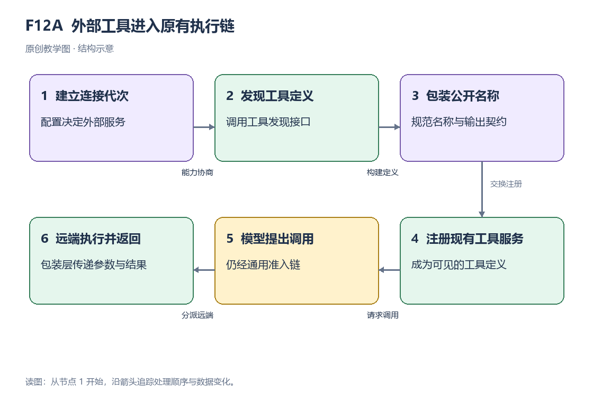
图 12A 是结构示意。远端工具进入本地注册表后，模型调用仍通过原有准入与结果链，最后由包装执行体交给外部服务。远程协议不是跳过本地控制的捷径。
## 12.2 连接、发现与代次交换
MCP 客户端插件根据配置建立连接，并在具体连接代次里进行能力发现。工具同步先获取完整工具列表，为每项构建定义，再交换注册代次。获取或构建失败时，不先破坏既有工具列表；注册交换失败也有回退处理。这里的“连接”与“工具列表已成功更新”是不同状态。
工具公开名通常采用 mcp__服务名__原工具名。简单有效名称直接拼接；非法字符或过长名称还有规范化与哈希处理。因此不能假定所有远端原名都会原样成为公开名。
包装定义把远端 schema、说明和执行函数接到 Tools 契约。模型调用时，参数经普通执行链进入包装层，再调用服务器原工具名。结果中的模型文本与结构化内容按输出契约处理。资源能力由另一插件接入，不能从工具注册推出资源读取也完成。
## 12.3 连接与知识能力的基础区别
客户端是发起请求的一方，服务端是提供协议能力的一方；远程调用把参数与结果跨越进程或网络边界。MCP 规定交互方式，RAG 则描述检索材料供生成使用的一类方法，两者不是同义词。
一个 Memory 服务是否使用 embedding、按语义搜索、保存跨会话信息，需要看该服务契约。本项目 Memory MCP 指南介绍可选第三方接入，并非默认内置数据库；其中 Reference Memory 的查询是子字符串搜索，不能把它改写成默认语义检索。
## 12.4 名称、注册与包装的原码
<!-- evidence:start -->
名称包装。 简单名字直接拼接，其他情况会规范化并添加哈希。
来源：实际文件，第 81—86 行；固定提交。节选保留原码，省略邻近上下文。
export function publicToolName(serverName: string, rawName: string): string {
const joined = `mcp__${serverName}__${rawName}`
const normalized = joined.replace(INVALID_NAME_CHARS, '_')
if (normalized === joined && normalized.length <= MAX_PUBLIC_NAME_LENGTH) return normalized
const hash = createHash('sha256').update(`${serverName}\0${rawName}`).digest('hex').slice(0, HASH_LENGTH)
return `${normalized.slice(0, MAX_PUBLIC_NAME_LENGTH - HASH_LENGTH - 1)}_${hash}`
远端调用与注册。 包装回调调用原远端工具名；之后把新定义注册到现有 Tools。
来源：实际文件，第 138—150 行；固定提交。节选保留原码，省略邻近上下文。
call: (args, execution) => client.callTool(
{ name: tool.name, arguments: args },
{ signal: execution.signal, timeout: opts.toolCallTimeoutMs, toolDefinition: tool },
),
}))
}
// Phase 2: swap generations.
for (const dispose of previous.values()) dispose()
const disposers: ToolDisposers = new Map()
try {
for (const [publicName, definition] of definitions) {
disposers.set(publicName, ctx.tools.register(definition))
工具契约。 远端说明、参数、输出和执行体进入普通 ToolDefinition 结构。
来源：实际文件，第 229—236 行；固定提交。节选保留原码，省略邻近上下文。
const { name, rawName, description, inputSchema } = options
const projections = new WeakMap<ToolExecution, PreparedProjection>()
return {
name,
description,
parameters: inputSchema,
output: createOutput(rawName, supportedOutputSchema(options.outputSchema)),
execute: createExecutor(ctx, options, projections),
完整阅读路线。 路线区分启动前置、执行主链与提供方对照，不把它们误连为一次同步调用。
- packages/mcp/mcp-client/src/index.ts，
apply。输入：MCP 服务配置；输出/交接：准备连接、发现与能力注册。固定提交第 154 行。 - packages/mcp/mcp-client/src/connection.ts，
startConnection → connectGeneration。输入：服务器连接配置；输出/交接：形成连接代次并进入能力发现。固定提交第 127 行。 - packages/mcp/mcp-client/src/tools.ts，
publicToolName / syncTools / createMcpToolDef。输入：服务名与远端工具定义；输出/交接：包装名称和执行体，注册为现有 Tools 能力。固定提交第 81 行。 - packages/mcp/mcp-resources/src/index.ts，
资源插件入口。输入：资源能力与上下文；输出/交接：独立资源接口；对照工具接入，不假定统一 ctx.mcp 服务。固定提交第 47 行。
<!-- evidence:end -->
源码中的能力边界是 MCP 客户端及独立资源接口，不要为方便讲解虚构一个负责所有事情的统一 ctx.mcp 服务。
## 12.5 分析示例：四项分别验收
教学服务已经建立连接，发现了一个检索工具，但没有声明资源能力，也没有验证跨会话记忆。四项验收应填：连接通过、工具发现通过、资源读取未证实、跨会话记忆未证实。不能填写“四项全部成功”。
继续使用该工具前，还要检查一次实际调用结果、调用许可与结果质量。以协议接入可以复用成熟链路，代价是多了外部可用性、超时、版本和返回契约问题。工具叫 search 也不能证明结果足够支撑本任务。
## 12.6 回到项目资料任务
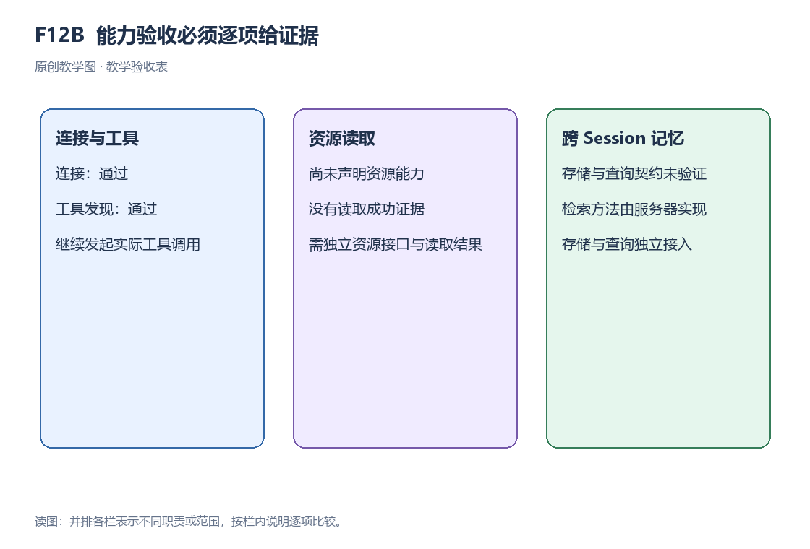
图 12B 是能力检查表。项目说明可以来自文件工具，也可以在教学变体中来自某个外部资料服务；材料来源变了，依然要检查内容、范围和时效。外部服务返回某项目介绍，不能直接当作本地当前提交的事实。
服务发现失败时，检查当前连接代次和已注册定义，而不只看页面的连接指示灯。远端调用失败时，则要查包装执行与服务器返回，不能自动归类为本地文件权限错误。
## 12.7 常见误解
“用了 MCP 就做了 RAG”：协议接入与检索生成方法是不同层次。
“服务连上就知道它的全部资料”：需要能力发现和具体读取；连接本身不提供全文。
“Memory 名字说明已经有向量库”：看实际存储、查询与启用方式，不按名字补造能力。
## 12.8 小结与参考
外部工具通过发现与包装进入现有 Tools 链，资源与记忆还需各自契约。接入成功是分层结论，不能从连接状态越级推断知识能力。下一章讨论把工作交给另一个智能体时的上下文起点。
<!-- references:start -->
原项目文档用于复核，优先保留已有中文版：
行为旁证为测试源码，未在本次执行：
<!-- references:end -->
本章面试问答
Q1 · MCP（Model Context Protocol）工具与内置工具在执行拓扑上有何根本区别？
回答： 内置工具直接在当前 Node.js 进程宿主内通过 ctx.fs 等服务同步/异步执行；而 MCP 工具通过标准 JSON-RPC（stdio 或 SSE/HTTP）代理到外部子进程。 原理： 外部进程崩溃或挂起不会直接导致 Harness 宿主进程段错误；但其带来的网络/IPC 序列化延迟以及长连接管理是额外的开销。
Q2 · 为什么说“外部连接成功（Connection Ready）绝不等于拥有了知识库”？
回答： 连接就绪仅仅表明网络链路与通信协议握手完成；知识库的检索有效性取决于 Schema 契约、文档切片召回率、相关性重排（Rerank）以及上下文装配能否精准喂入 LLM 视野。
# 第 13 章｜子代理：拆分任务前先看上下文起点
## 13.0 谁负责交代材料，谁负责检查结果
把工作分给子代理（subagent）并不自动让任务更快、更准确。子任务要有目标、材料、能力范围和结果检查；父代理还要承担汇合责任。本章先解释一次启动怎样发生，再比较新起点与继承历史起点。
目标是选对 spawn 与 fork 的含义，识别进程内实现的边界。前置是独立会话、服务提供方和工具准入。
## 13.1 两种起点
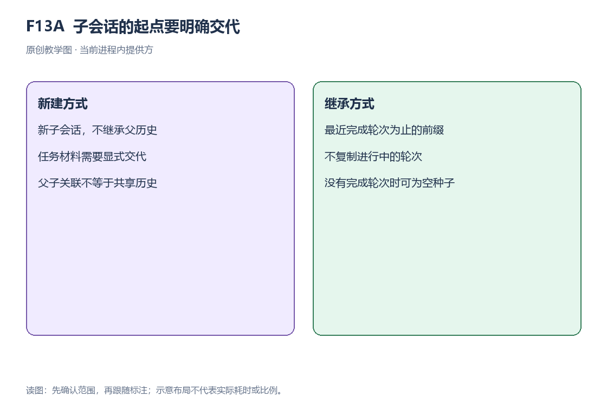
图 13A 是当前进程内提供方的源码推演。spawn 建立新子会话，不继承父历史；fork 用父会话最近已完成轮次为止的前缀作为种子。进行中的当前轮次不自动成为这份种子。
## 13.2 从父工具调用到子运行
父代理调用子代理工具，执行体首先要求有实际调用代理，再处理模型选项和提供方请求。一次性方式进入 Runtime 的 start，可继续方式进入相应 continuation 路径。Runtime 查找具名提供方、校验能力要求与深度等契约，建立运行描述并调用 provider。
进程内 spawn 提供方把空种子交给共享驱动；fork 先从父事件里找最近 turn/end，截取到该位置的前缀。没有完成轮次时，前缀为空，可相当于新起点。共享驱动创建子会话并运行任务，运行句柄提供结果与取消/清理等约定。
可继续运行的历史起点在创建时捕获，不是每次恢复都重新复制父代理最新历史。不同远端提供方支持哪些选项要分别核对，不能用进程内能力表推断所有后端。
## 13.3 并发、进程与历史
多个会话可以有独立历史和生命周期，仍运行在同一系统进程内。独立会话不等于独立容器或 OS 隔离；名称 fork 在这里描述历史起点，与操作系统 fork 不是同一件事。
任务拆分首先解决职责。可以让一个子任务提取功能，另一个检查限制，但父代理必须提供足够材料并汇合。若刚在当前轮次读到 README，不能认为 fork 已自动复制这个尚未完成轮次的结果；应依据已完成历史或显式任务材料设计交接。
## 13.4 起点与运行校验的原码
<!-- evidence:start -->
运行校验。 Runtime 选择提供方并检查能力、深度与输出契约后启动。
来源：实际文件，第 559—570 行；固定提交。节选保留原码，省略邻近上下文。
async start(name: string, request: SubagentStartRequest): Promise<SubagentRun> {
const provider = this.expectProvider(name)
this.assertCapabilities(provider, request)
assertSubagentMaxDepth(request.maxDepth)
if (request.outputSchema !== undefined) assertObjectJsonSchema(request.outputSchema)
const descriptor = snapshotSubagentDescriptor({
mode: 'one-shot',
provider: name,
...request.label !== undefined ? { label: request.label } : {},
})
const resolved: ResolvedSubagentStartRequest = { ...request, descriptor }
const run = await provider.start(resolved)
新起点。 空种子表示不继承父历史，交给共享进程内驱动运行。
来源：实际文件，第 54—59 行；固定提交。节选保留原码，省略邻近上下文。
start(request: ResolvedSubagentStartRequest) {
// Fresh child: no seed. The shared driver mints ids, stamps cwd/lineage/
// depth, drives the one-shot (including the structured capture when the
// request carries an outputSchema), and maps the result.
return startInProcessRun(request, {})
}
完成前缀。 最后一个 turn/end 决定种子边界；没有已完成轮次时返回空数组。
来源：实际文件，第 48—55 行；固定提交。节选保留原码，省略邻近上下文。
function completedTurnPrefix(parent: Agent): SessionEvent[] {
// oxlint-disable-next-line typescript/no-deprecated -- Existing Session history read; migration deferred.
const events = parent.session.snapshotEvents()
const lastEnd = events.findLast(e => e.type === 'turn/end')
if (lastEnd === undefined) return []
// seq === array index (the append contract), so slice up to and including it.
return events.slice(0, lastEnd.seq + 1)
}
完整阅读路线。 路线区分启动前置、执行主链与提供方对照，不把它们误连为一次同步调用。
- packages/subagent/tool-subagent/src/index.ts，
apply；execute；start / startContinuable。输入：任务与工具配置；输出/交接：请求 Runtime 建立一次性或可继续运行。固定提交第 313 行。 - packages/subagent/subagent/src/index.ts，
SubagentRuntime。输入：提供方名称与能力要求；输出/交接：校验后分派并管理句柄。固定提交第 200 行。 - packages/subagent/subagent-spawn-in-process/src/index.ts，
start。输入：spawn 请求；输出/交接：建立独立子 Session，进入 in-process driver。固定提交第 54 行。 - packages/subagent/subagent-in-process-driver/src/index.ts，
startInProcessRun。输入：子 Session 与运行参数；输出/交接：驱动子代理执行并交付运行结果。固定提交第 104 行。 - packages/subagent/subagent-fork-in-process/src/index.ts，
completedTurnPrefix。输入：父历史；输出/交接：作为 fork 分支对照，取得已完成前缀。固定提交第 47 行。
<!-- evidence:end -->
只读本课程的三段，先建立“Runtime 选择 provider，provider 决定种子，driver 推动子会话”的分工。完整模型路由选项和远端传输可以暂缓。
## 13.5 分析示例：拆分不只计算工作时间
教学单代理需要 1200 ms。拆成两个子任务，各 700 ms；假设允许重叠且确实同时开始，启动与交代开销 200 ms，汇合检查 250 ms，则简化总时间是 200＋max(700,700)＋250＝1150 ms，只减少 50 ms。
这不是 DSH 实测，也不保证两项会同时开始。若串行执行，则相同假设下为 1850 ms。若结果不一致还需额外处理。因此比较不仅要计执行区间，还要计材料、请求量与汇合质量。
## 13.6 选择任务起点
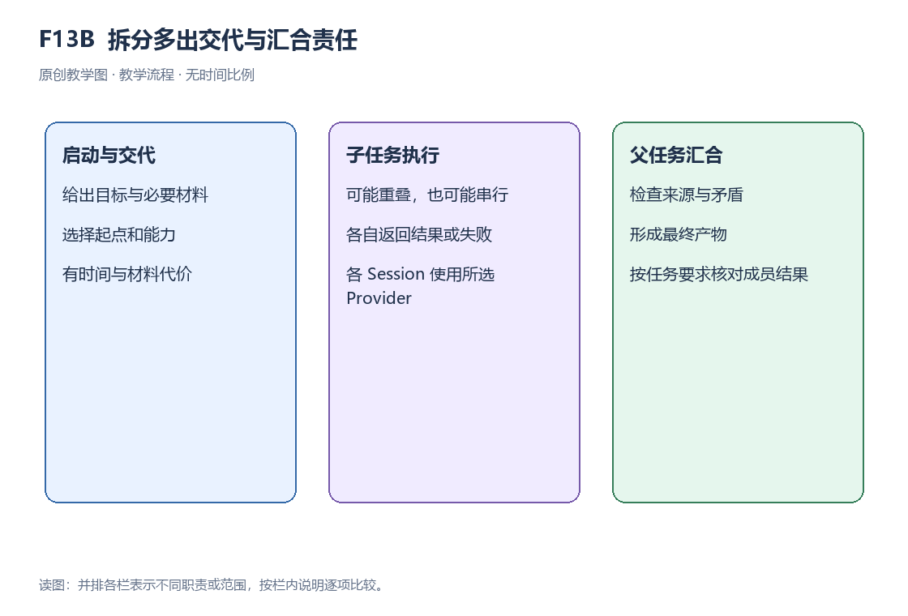
图 13B 是无比例的教学流程。对于独立的功能提取，可以用新会话并明确提供资料；需要沿已有完成讨论继续推理时，可以考虑继承完成前缀。无论哪一种，结果都要回到父任务的验收条件：用途准确、三点有材料依据、限制未遗漏。
子运行成功只说明它按相应契约交付，不能证明父任务最终正确。取消也需要检查实际 provider 的生命周期与返回状态，不假设所有外部子进程或远端任务必然已同步终止。
## 13.7 常见误解
“fork 复制了父代理当前全部内容”：本提供方只取最近已完成轮次前缀。
“多个子代理就是多个独立进程”：当前讨论的是进程内实现。
“一个生成、一个评审就一定更准”：评审输入、标准和责任仍需设计与实验验证。
## 13.8 小结与参考
子代理工具把任务交给 Runtime 和提供方，历史起点、能力与生命周期由具体契约决定。拆分需要交代与汇合，不能仅按代理数量预测收益。第三部分完成后，你应能说明能力怎样装配、受控执行并交给其他运行单元。
<!-- references:start -->
原项目文档用于复核，优先保留已有中文版：
行为旁证为测试源码，未在本次执行：
<!-- references:end -->
本章面试问答
Q1 · 为什么从父会话派生子代理（Subagent）时，禁止“全量深拷贝历史日志”？
回答： 在 packages/core/session/src/fork.ts 中，buildForkSeed 明确只截取至决策边界，并为开放步骤打上 turn/end (forked) 标记，生成极简的 Fork 种子。 原理： 全量深拷贝会导致上下文爆炸（Context Bloat）与 Token 费用指数级放大；更严重的是，父会话冗余的杂质信息会严重干扰子代理的专注推理，破坏局部任务的确定性。
Q2 · 子代理通信为什么优先采用基于收件箱的 Mailbox 消息机制，而不是直接共享内存？
回答： 防止并发读写下的状态撕裂与脏数据写入。Mailbox 将每次跨 Agent 交互显式固化为不可变事件流，保证了审计与回放的完全确定性，天然杜绝了死锁与状态竞争。
# 第 14 章｜网页端：提交任务与跟随结果是两条链
## 14.0 一次提交，为什么页面持续变化
入口已经返回 accepted，页面却还在显示工具进度和新增文字。原因是提交请求与跟随会话不是同一调用。本章把向宿主服务（Host）发送目标的链，与从它接收状态的链分开。
目标是解释本地回显、远程接纳、初始快照和连续事件。前置为任务入口、会话事实和临时流。
## 14.1 两个方向
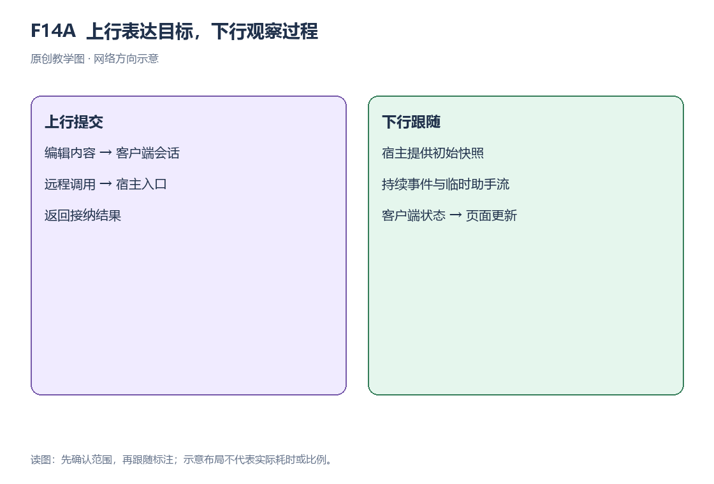
图 14A 是结构示意。上行请求得到接纳结果，下行订阅提供初始状态与后续变化。不要把图里的同一宿主框理解成一次请求同时返回全部内容。
## 14.2 发送路径
会话交互控制器从编辑器取得内容，调用 beginSubmission 创建本地待提交记录。这样用户可以先看到自己的输入；它仍是客户端暂态，不表示服务器已处理。
附件序列化等步骤完成后，控制器调用 Client Session 的 prompt，带上同一 requestId。客户端通过远程调用（RPC）进入 Host 暴露的 prompt，再到第一章的命令控制器。接纳结果返回后，本地记录还需要与随后观察到的会话事实协调，避免重复显示或把未成功接纳的输入装成已完成。
## 14.3 跟随路径与网络基础
订阅表现为持续接收事件流。快照（snapshot）给出某个游标处的已知状态，后续事件从相应位置继续推进。RPC 用于跨边界请求操作；连续流承担后续变化，客户端通过相应传输接口建立流连接。
SessionHistoryController.follow 在准备快照前安装事件监听与缓冲，再发出快照并处理缓冲后续。这避免把快照准备期间的变化简单丢掉。持久事件与助手临时流分别处理；临时流只有在请求开启相应能力时提供。
事件序号按预期推进，已早于游标的事件可以略过；出现不符合预期的缺口则报错，而不是无声跳过去。客户端消费变化后维护会话和提交状态，ChatView 订阅这些状态显示节点。
## 14.4 发送与订阅的原码
<!-- evidence:start -->
本地提交记录。 这段建立暂态提交，并协调附件退役；不代表服务器已经完成任务。
来源：实际文件，第 275—283 行；固定提交。节选保留原码，省略邻近上下文。
const submission = session.beginSubmission({
mode,
text,
attachments: pendingAttachments,
onRetire: (settlement) => {
this.settleSubmittedAttachments(session.sessionId, attachments, settlement)
finishRetirement?.(settlement)
},
})
上行提交。 客户端带同一请求标识、目标会话和内容进行远程调用。
来源：实际文件，第 269—277 行；固定提交。节选保留原码，省略邻近上下文。
if (this.address === undefined) {
const clientTimeZone = resolvedClientTimeZone()
result = await this.remote.session.prompt({
requestId: requestId ?? randomUUID() as SessionRequestId,
sessionId: this.sessionId,
mode,
content,
clientTimeZone,
}, signal)
连续性检查。 旧事件可略过，但未来事件跳过预期序号时会报错。
来源：实际文件，第 226—232 行；固定提交。节选保留原码，省略邻近上下文。
const expectedSeq = SessionSeq(nextOffset)
if (item.event.seq < expectedSeq) continue
if (item.event.seq !== expectedSeq) {
throw new RemoteError('gateway/internal', `session event stream skipped seq ${String(expectedSeq)}`, {})
}
nextOffset = SessionLogOffset(nextOffset + 1)
yield entryFor(item.event)
完整阅读路线。 路线区分启动前置、执行主链与提供方对照，不把它们误连为一次同步调用。
- packages/client/ui-conversation/src/client/service.ts，
ConversationController.sendSession。输入：编辑内容与当前会话；输出/交接：本地提交回显，并请求 Client Session.prompt。固定提交第 229 行。 - packages/api/session-controller/src/client/sessions/session.ts，
Session.prompt。输入：带 requestId 的提交；输出/交接：经 RPC 到 Host prompt；Host 再进入第 01 章入口。固定提交第 254 行。 - packages/api/session-controller/src/history.ts，
SessionHistoryController.follow。输入：会话与订阅请求；输出/交接：输出初始快照、持久事件及助手流。固定提交第 120 行。 - packages/api/session-controller/src/client/sessions/session.ts，
acceptEventChange。输入：follow 收到的变化；输出/交接：合并客户端会话与提交状态。固定提交第 646 行。 - packages/client/ui-chat/src/client/chat/ChatView.tsx，
ChatView。输入：会话分组、节点与顺序快照；输出/交接：订阅变化并显示过程。固定提交第 101 行。
<!-- evidence:end -->
定位“页面不动”时，先判断是提交失败、跟随连接失败、事件状态没更新，还是视图订阅问题，不能只查模型。
## 14.5 分析示例：序号去重与缺口
教学快照游标为 40，后续期望先收到 41。缓冲中依次出现 39、41、43：39 已早于期待位置，可略过；41 正常推进后期待 42；43 不能冒充 42，应该触发缺口处理。
游标用于检测消息连续性并过滤重复包，但游标本身无法凭空还原丢失的网络帧。客户端必须根据当前连接状态显式发起重连请求，方能恢复跟随。仅存在重连机制并不意味着所有网络异常都能自动实现零数据丢失恢复。
## 14.6 刷新后重建视图
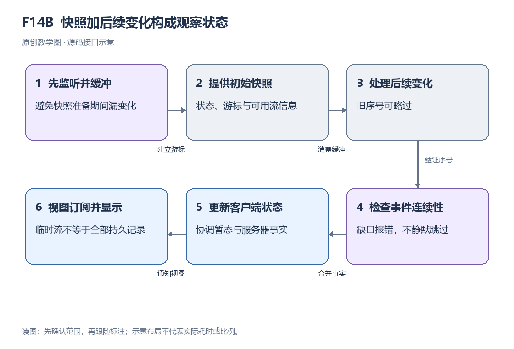
图 14B 展示状态恢复流程。页面刷新后，客户端重新拉取最新快照并订阅后续增量事件；快照仅反映当时聚合的流状态，传输过程中的瞬态 Chunk 不会作为历史独立持久化。持久助手消息与界面的瞬态渲染必须分别基于各自的事实源校验。
README 任务正在读取时刷新，页面应依据新快照和后续事实恢复它能观察的状态。若输入曾本地回显，但服务器未接纳，不能仅凭刷新前出现的气泡认定已成为持久用户消息。
本地回显改善提交反馈，快照帮助重新进入过程，代价是暂态和服务器事实的协调逻辑需要明确，而不只是一个显示字符串的组件。
## 14.7 常见误解
“提交函数返回成功就是最终回答”：其契约仍然是接纳；连续过程走跟随链。
“刷新会把所有临时片段逐字恢复”：临时流与持久事实的保存方式不同。
“有序号就一定无损恢复”：序号能检查连续性，恢复还要由实际协议与客户端路径完成。
## 14.8 小结与参考
网页客户端先通过提交链表达目标，再通过跟随链观察过程。回显、快照、持久事件与临时流各有契约；把它们分开才有可靠的刷新和错误解释。下一章看桌面壳怎样承载这条已有业务链。
<!-- references:start -->
原项目文档用于复核，优先保留已有中文版：
行为旁证为测试源码，未在本次执行：
- packages/api/session-controller/tests/session-pending-submissions.client.spec.ts
- packages/api/session-controller/tests/assistant-stream.client.spec.ts
<!-- references:end -->
本章面试问答
Q1 · 为什么 Web 客户端与 Harness 的通信必须严格实行 CQRS（读写分离）？
回答： 提交任务走 RPC（写路径，由 SessionCommandController 保证幂等并返回 accepted）；接收状态走 Snapshot + Cursor 增量事件流（读路径，由 SSE/WebSocket 持续推送）。 原理： 大模型推理和工具执行是长程异步任务（耗时数秒至数分钟），如果采用传统同步 HTTP 请求挂起连接，极易发生网络超时、连接断开与重复提交事故。
Q2 · 前端在网络瞬断重连后，如何确保视图与底层事实完全一致？
回答： 前端持有一个单调递增的 sinceSeq。重连时向服务端请求补齐 sinceSeq 之后的所有增量事件；若游标失效或发生压缩断裂，则全量拉取权威 Snapshot 基线并与本地视图执行原子合并。
# 第 15 章｜桌面端：窗口、页面与宿主服务怎样合作
## 15.0 看见一个窗口，不代表只有一个执行环境
桌面应用使用 Electron 外壳承载完整 Web 应用。窗口页面、Electron 主进程和独立 Node Host 各自负责不同事情。把它们合称“前端进程”，会让启动、请求和崩溃问题难以定位。
本章目标是画清三个环境和各类通信，解释页面先加载与 Host 后就绪的启动顺序。前置为网页提交和跟随两条链。
## 15.1 三个环境与通信
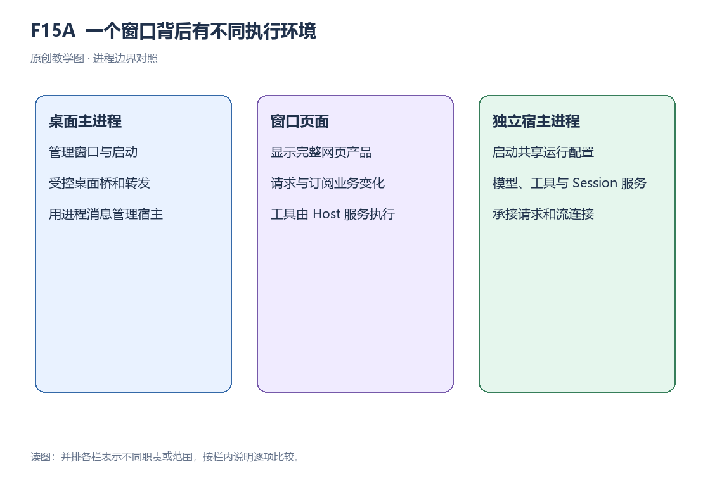
图 15A 是进程边界示意。主进程管理窗口、启动与受控桌面能力；页面显示 Web 产品；独立 Host 执行共享 profile 和服务。启动注入与关闭等由进程间消息（IPC）承担，聊天业务仍使用 HTTP 请求和流通道。
## 15.2 先加载文档，再等服务准备
reconcileBackend 先导航到打包页面，再调用后端启动。窗口加载本地 Web 资源并等待启动注入，不需要在 Host 准备好后换到另一份文档。
DesktopHostProcess.start 启动子进程，配置 IPC 和输出管道，接收 ready、fatal 等消息。ready 带服务 URL 与 injections；已加载页面通过启动响应继续激活客户端。窗口出现与业务可用因而是不同检查点。
桌面协议处理本地静态资源与业务请求。转发函数检查页面请求来源，把目标路径与查询映射到 Host，适配认证信息并处理响应。WebSocket 流按桌面所拥有的页面与 Host 连接。preload 提供特定安全桥，仅暴露目录选择和 ready 等受控接口，限制页面代码随意调用 Agent 内部方法。
## 15.3 进程与受控桥的基础
进程有各自内存和生命周期，跨进程通信需要明确消息接口。preload 是页面与部分桌面能力之间的受控桥；窗口的隔离设置决定页面拥有怎样的运行权限。一个界面看起来像本机程序，不代表它可以不经过接口直接访问所有文件。
同样，关闭窗口与退出应用的含义应看当前实现。该版本桌面说明中，普通主窗口关闭会隐藏并保留运行，退出应用则有任务中断检查等流程。不能用“点叉一定杀掉后端”的惯常印象解释它。
## 15.4 启动与转发的原码
<!-- evidence:start -->
启动先后。 先导航到应用文档，再启动后端；已有文档经 boot 响应继续。
来源：实际文件，第 567—575 行；固定提交。节选保留原码，省略邻近上下文。
const reconcileBackend = (): Promise<void> => {
startup ??= (async () => {
await navigateMain(applicationUrl)
await backend.start(async () => {
await Promise.all([manager.applyRelease(), prepareHostEnvironment()])
})
if (backend.host !== undefined) await openInitialWindow()
if (backend.host !== undefined) updateJournal?.action('workspace-ready')
// The existing Web document resumes through the boot IPC response.
宿主消息。 ready、shutdown-complete 与 fatal 分别处理，不是所有消息都是聊天内容。
来源：实际文件，第 206—218 行；固定提交。节选保留原码，省略邻近上下文。
child.on('message', (message: unknown) => {
if (!isDesktopHostEvent(message)) {
this.fail(new Error('dsh desktop host sent an invalid IPC event'))
child.kill('SIGTERM')
return
}
if (message.type === 'ready') this.readyResolve({ url: message.url, injections: message.injections })
else if (message.type === 'platform-session') this.onPlatformSession?.(message.session)
else if (message.type === 'shutdown-complete') {
if (this.stopping) this.shutdownCompleted = true
else this.fail(new Error('dsh desktop host acknowledged an unrequested shutdown'))
}
else if (message.type === 'fatal') this.fail(new DesktopHostFatalError(message.message, message.diagnostic))
业务转发。 检查来源后映射路径并适配认证，再执行 HTTP 请求。
来源：实际文件，第 77—88 行；固定提交。节选保留原码，省略邻近上下文。
export async function forwardWebRequest(request: Request, host: string, cookie: string): Promise<Response> {
const source = new URL(request.url)
const origin = request.headers.get('origin')
if (origin !== null && origin !== 'dsh-app://app') return new Response(null, { status: 403 })
const target = new URL(host)
target.pathname = source.pathname
target.search = source.search
const headers = new Headers(request.headers)
for (const name of ['host', 'origin', 'cookie', 'sec-fetch-site']) headers.delete(name)
headers.set('cookie', cookie)
const init = { method: request.method, headers, body: request.body, signal: request.signal, duplex: 'half', redirect: 'manual' as const }
const response = await fetch(target, init)
完整阅读路线。 路线区分启动前置、执行主链与提供方对照，不把它们误连为一次同步调用。
- apps/desktop/src/main.ts，
窗口配置；reconcileBackend（约 567 行）。输入：启动参数和窗口状态；输出/交接：先加载页面，再调用 Host.start；隔离配置说明边界。固定提交第 229 行。 - apps/desktop/src/host-process.ts，
DesktopHostProcess.start。输入：Host 启动配置；输出/交接：spawn 并处理就绪 IPC。固定提交第 186 行。 - apps/desktop/src/main.ts，
protocol.handle 与 boot 注入。输入：renderer 请求与启动状态；输出/交接：本地静态资源或转发 Host；把流信息交给页面。固定提交第 662 行。 - apps/desktop/src/web-document.ts，
forwardWebRequest。输入：业务 HTTP 请求；输出/交接：来源检查与认证适配后返回响应。固定提交第 77 行。 - apps/desktop/src/preload-app.ts，
目录选择与 ready 桥。输入：有限桌面动作；输出/交接：交付受控桌面能力；对照业务网络链。固定提交第 77 行。
<!-- evidence:end -->
把启动 IPC、业务 HTTP 与流连接分别标注。控制消息和聊天请求不是一个统一的任意 IPC 调用表。
## 15.5 分析示例：页面出现与业务可用
教学启动时间线：0 ms 开始，200 ms 页面显示等待界面，900 ms Host 就绪，1000 ms 客户端可用。页面出现耗时 200 ms，业务可用耗时 1000 ms，中间等待区间为 800 ms。这些是假设数字，不是桌面性能报告。
若只测页面出现，就遗漏了服务准备；若把启动前后拆成两个页面，也会误读本版本同一文档继续激活的机制。较早显示等待页面能给用户可见状态，代价是加载态与业务态要正确协调。
## 15.6 把故障交给正确部件
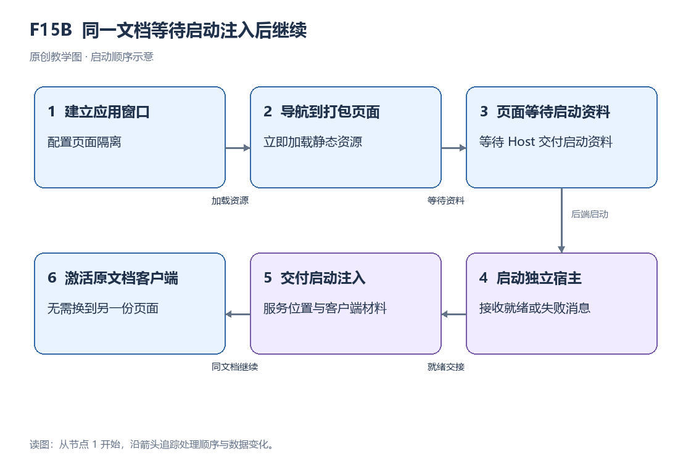
图 15B 是无比例启动顺序。若窗口已显示但 Host 启动失败，问题在启动链或子进程；若 Host 已 ready 而聊天请求失败，继续查请求转发与业务链；若业务状态正常但页面不更新，查客户端状态与视图。
README 总结在桌面上仍经历相同的核心循环、工具与会话事实。桌面壳改变入口承载与通信适配，不等于模型在 Electron 主进程里直接执行文件工具。
## 15.7 常见误解
“页面加载完成就等于模型和工具可用”：Host 和客户端激活还有独立状态。
“所有业务都通过 preload IPC 直接进入 Agent”：已有 Web RPC 和流仍承担聊天过程。
“关闭窗口等于退出应用”：检查当前桌面 README 与关闭路径，不按其他程序的行为类推。
## 15.8 小结与参考
桌面端通过主进程、页面与独立 Host 合作，复用已有 Web 产品链。启动消息、认证转发与流连接各有边界；可见窗口不等于业务已经可用。下一部分学习怎样用恰当证据评价这些工程行为。
<!-- references:start -->
原项目文档用于复核，优先保留已有中文版：
行为旁证为测试源码，未在本次执行：
- apps/desktop/tests/host-process.spec.ts
- apps/desktop/tests/web-document.spec.ts
- apps/desktop/tests/main-startup.spec.ts
<!-- references:end -->
本章面试问答
Q1 · 桌面端（Desktop）为什么要设计 Main、Preload 与 Renderer 三层隔离架构？
回答： Renderer 是不可信的 Web 视图层，禁止直接调用 Node.js 原生 API；Preload 暴露受限的白名单 IPC 桥（contextBridge）；Main 进程持有真实操作系统权限并负责运行 Harness 核心。 原理： 防止注入型恶意脚本通过 Web 渲染层直接发起任意操作系统指令（如格式化磁盘或窃取密钥），确保桌面宿主的安全基线。
# 第 16 章｜测试与回放：复现通过究竟证明了什么
## 16.0 先把一句怀疑改成可检查命题
“助手不稳定”不是一个可直接测试的工程命题。合理的测试命题需要收敛为明确的输入与断言，例如：“模型调用失败时，其失败响应中包含的工具调用提议不得执行。”该表述明确限定了触发场景、系统禁止动作和最终核验事实。测试的有效性由其断言范围直接决定。
本章目标是选择证据层，理解固定模型响应的回放（replay）与真实业务评价的不同。前置是循环、工具与会话记录。
## 16.1 固定一个依赖，继续执行其他部分
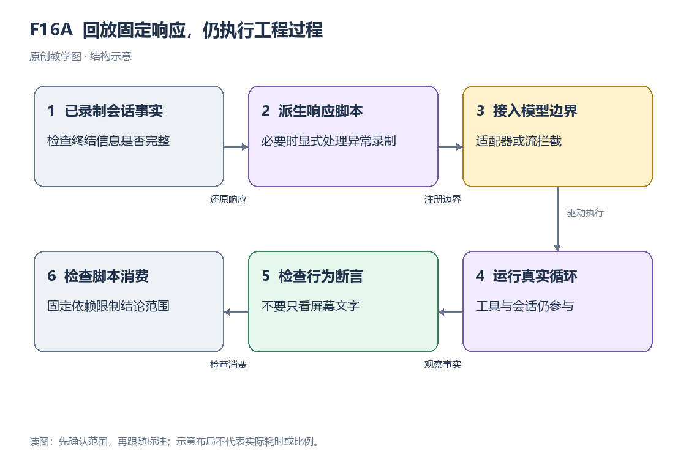
图 16A 是结构示意。录制事实用于生成模型响应脚本，回放将脚本接入 LLM 边界；真实循环、工具链和日志继续运行。固定的是模型输出，不是把全部系统变成静态图片。
## 16.2 证据层怎样选择
单元测试检查局部函数与契约，例如读取窗口；快照检查选定输出结构是否变化；回放检查固定响应下的工程过程；真实 API 端到端测试还涉及实际服务；性能实验比较规定条件下的指标。项目测试指南区分这些层，不同层不能互相替代。
deriveReplayScript 从事件中恢复响应条目。记录缺少正常终结等情况可能需要显式 override，并非所有残缺录制都能无条件回放。installLlmReplay 加载脚本，按会话绑定消费位置；配置 providers 时注册 ReplayAdapter，否则在 llm/stream 边界拦截。
测试还可以检查脚本是否完全消费。如果真实流程少请求了一次模型，不能因为眼前断言没失败就忽略剩余脚本。反过来，多请求也可能让固定响应不够使用。回放让同一输入更易复现，但没有模拟所有真实网络与模型变化。
## 16.3 断言、替身与覆盖范围
断言（assertion）写出应成立的条件；替身（mock）替代某项依赖；回放使用已知响应序列。一个测试只要断言“返回数组长度为 2”，就不自动检查这两个元素是否有正确语义。
覆盖不等于案例数量。一个故障测试应列触发条件、观察点和盲区。若想证明模型在真实任务中总结更准确，需要任务集和产物检查，不是把已有回放再运行十遍就得到模型质量证据。
## 16.4 回放派生、接入与消费检查
<!-- evidence:start -->
脚本派生。 缺少 finish 的已录制调用需要额外处理，不自动成为正常回放。
来源：实际文件，第 462—472 行；固定提交。节选保留原码，省略邻近上下文。
export function deriveReplayScript(events: SessionEvent[]): ReplayEntry[] {
const script: ReplayEntry[] = []
const close = (key: string | undefined, chunks: StreamChunk[]): void => {
if (chunks.length === 0) return
if (chunks[chunks.length - 1]?.type !== 'finish') {
throw new Error(
`llm-replay: model call ${key} ended without a finish chunk (a thrown stream); `
+ 'this scenario needs a replay.override.json sidecar',
)
}
script.push({ kind: 'chunks', chunks })
接入选择。 providers 配置决定使用 ReplayAdapter 还是 llm/stream 拦截。
来源：实际文件，第 1101—1104 行；固定提交。节选保留原码，省略邻近上下文。
const providers = config.providers ?? []
const dispose = providers.length > 0
? ctx.llm.registerAdapter(providers.map(provider => provider.id), new ReplayAdapter(providers, replay))
: ctx.on('llm/stream', (options: GenerateOptions, _next) => replay(options))
消费检查。 检查未绑定脚本及未消费响应，才能发现流程请求数与录制不一致。
来源：实际文件，第 1107—1115 行；固定提交。节选保留原码，省略邻近上下文。
assertConsumed(): void {
const problems: string[] = []
if (nextScript < scripts.length) {
problems.push(`${scripts.length - nextScript} recorded script(s) never bound to a live session`)
}
for (const [key, state] of bound) {
if (state.cursor < state.entries.length) {
const who = key === ANON ? 'the anonymous session' : `session ${key}`
problems.push(`${who} consumed ${state.cursor}/${state.entries.length} recorded call(s)`)
完整阅读路线。 路线区分启动前置、执行主链与提供方对照，不把它们误连为一次同步调用。
- packages/test-support/llm-replay/src/index.ts，
deriveReplayScript。输入：已录制会话；输出/交接：生成模型响应脚本。固定提交第 462 行。 - packages/test-support/llm-replay/src/index.ts，
installLlmReplay。输入：脚本与 provider 配置；输出/交接：安装 ReplayAdapter 或流拦截，固定模型输出。固定提交第 1031 行。 - packages/core/agent-loop/src/agent.ts，
step。输入：固定模型响应与真实循环状态；输出/交接：执行工具和日志流程；由测试断言验证行为。固定提交第 398 行。
<!-- evidence:end -->
本书把这些测试源码作为行为旁证，没有安装项目依赖或执行上游测试。文档检查通过与项目测试通过必须分别报告。
## 16.5 分析示例：四个命题选四种检查
“行窗口只返回选定范围”可以用窗口单元测试；“失败尝试没有执行工具”可以用固定失败响应驱动真实循环；“实际服务能够完成协议请求”需要 API 测试；“修改提示词后更少遗漏实验性声明”需要同条件的业务任务评价。
若把最后一项改成固定输出回放，输出内容已经由脚本决定，无法评价提示词对真实模型的影响。回放便于定位工程回归，代价是结论严格局限在冻结依赖与所检查行为。
## 16.6 README 故障怎样复现
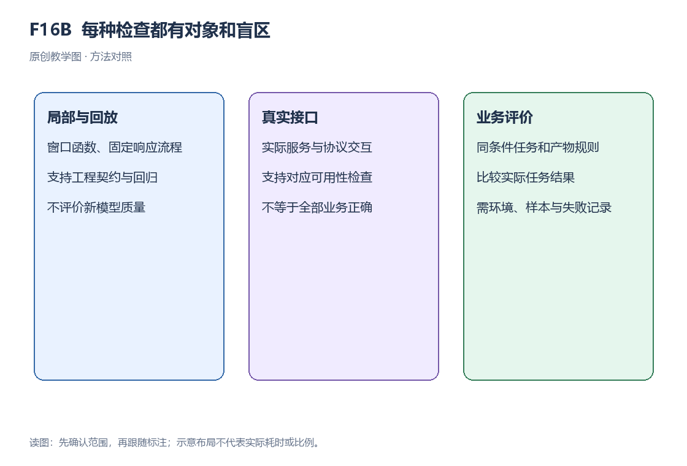
图 16B 是方法对照。假设工具结果被重复提交，先保存对应会话事实，固定模型输出，检查工具结果提交次数与关联。若发现是客户端重复显示，还要把客户端状态合并作为观察对象，不能只测 Host。
若故障是“模型漏掉限制”，保存材料与产物用于分析，但真正比较修改效果仍需要新模型输出和统一任务检查。选择最小合适证据，比不断扩大整套测试更有帮助。
## 16.7 常见误解
“测试通过说明所有场景正常”：测试只覆盖给定条件与断言。
“回放通过说明新模型更强”：固定输出没有检验新模型行为。
“读到了测试就可以写已验证运行”：阅读与执行是不同证据，本书明确区分。
## 16.8 小结与参考
从命题出发选择观察对象与证据层，回放固定模型依赖，仍可检验真实工程流程。每项证据都有边界；下一章把质量、时间和用量放到统一实验口径中。
<!-- references:start -->
原项目文档用于复核，优先保留已有中文版：
行为旁证为测试源码，未在本次执行：
<!-- references:end -->
本章面试问答
Q1 · 什么是无模型确定性回放（Deterministic Replay）？它的核心判定条件是什么？
回答： 在 @deepseek-ai/dsh-llm-replay 中，回放系统拦截所有 LLM 网络调用，直接依据历史记录中的精确 Payload 匹配并回填响应，通过 assertConsumed 严格断言预设的每一步调用被 100% 消费。 原理： 它将原本动辄耗时数分钟且具有随机性的端到端测试，降维为 85ms 的纯本地内存级单测，不仅零 Token 消耗，而且具备 100% 确定性回归能力。
# 第 17 章｜量化评价：同时看质量、时间、用量与失败
## 17.0 比较方案，要先说清“更好”是什么
“启用压缩后更好”至少可能指材料更短、任务更快、费用更低或总结更准确。它们可能同时变化，也可能互相冲突。本章提供一套小实验口径，并说明项目已有计量和遥测能提供哪些证据。
目标是写一个可复现比较，区分测量与估算，避免从单个数字跳到全面收益。前置为压缩、重试、子任务和测试证据。
## 17.1 一次任务的四组记录
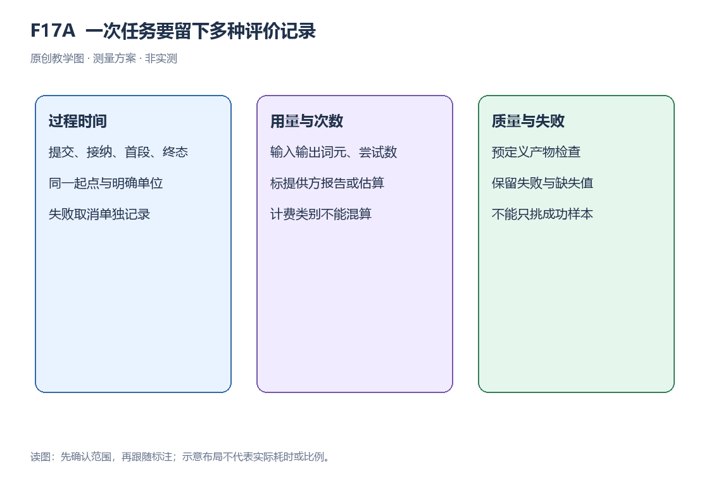
图 17A 是测量方案，不是实测图。记录任务结果、提交到接纳/首段输出/终态的时间、请求与工具次数、各类词元用量。失败和取消要有独立状态，不能从样本里悄悄删除。
## 17.2 已有计量与课程评价的边界
TokenMeter 注册 tokenUsage、contextPressure 与 contextBreakdown 等投影。上下文压力计量根据当前表层、请求信息与模型路由处理估算；是否可复用提供方报告，要满足相应请求和计量条件。不能把每个显示数都称为 provider 原始计费值。
会话遥测协调器观察生命周期、事件与 flush 等，再交给后端。OTel 后端有按需捕获、反馈触发等配置路径。这里的实现涉及日志导出，不因此自动拥有完整分布式 spans、业务任务评分或模型评审器。
质量检查是课程另外设计的实验层：README 总结是否准确说明用途、三点是否各有材料依据、是否保留关键限制、是否编造功能。先定义规则，之后才能计算通过率。该检查不是本书已运行的项目内置评测平台。
## 17.3 比例、单位和控制变量
通过率＝通过任务数÷全部任务数。平均耗时是所有相应样本耗时的算术平均，中位数则是排序后的中间位置。先说明失败时用哪个耗时、是否单独报告，才谈两项统计。
比较配置甲与乙时保持输入任务集、版本、模型选择、验收规则和预算一致，记录变更项、重复次数和实验环境。若模型与任务同时变了，不能把比例变化全部归因于某个提示词。
成本按明确计费类别求和：总成本 = Σ(该类别用量 × 对应单价)。单价、缓存口径和计费单位在真正实验时核验，本书不提供未经核验的当前价格，也不用总输入数自动替代各计费类别。
## 17.4 用量投影与遥测触发的原码
<!-- evidence:start -->
用量投影。 注册三个相应用量/压力视图，并按需要同步。
来源：实际文件，第 110—122 行；固定提交。节选保留原码，省略邻近上下文。
constructor(ctx: Context, config: TokenMeterConfig = {}) {
super(ctx, 'tokenMeter')
validateConfigKeys(config)
ctx.sessionProjections.register(tokenUsageProjectionDefinition)
ctx.sessionProjections.register(contextPressureProjectionDefinition)
ctx.sessionProjections.register(contextBreakdownProjectionDefinition)
// Readers catch up independently, while eager observation bounds ordinary
// read latency without creating state for sessions no consumer has read.
ctx.on('session/event', (session) => {
if (this.states.has(session)) this._sync(session)
})
遥测观察。 事件与 flush 触发后端交接；回调如何等待有独立契约。
来源：实际文件，第 104—116 行；固定提交。节选保留原码，省略邻近上下文。
ctx.on('session/event', (session, event) => {
this.contain(() => {
this.captureEvent(session, event)
})
})
// Parallel listeners are awaited by the loop at turn end; returning void
// (not the SDK's flush promise) is the turn-latency contract.
ctx.on('session/flush', (session) => {
this.contain(() => {
this.hintFlush(session)
})
})
ctx.on('agent/error', ({ agent, turn, step, error }) => {
反馈捕获。 按需模式只由符合条件的实际事件触发对应历史前缀捕获。
来源：实际文件，第 218—230 行；固定提交。节选保留原码，省略邻近上下文。
const coordinator = new SessionTelemetryCoordinator(ctx, backend, {
capture: 'on-demand',
includeHistory: true,
})
ctx.on('session/event', (session, event) => {
if (!isFeedback(session, event)) return
// Only the canonical appended event authorizes this exact prefix.
// oxlint-disable-next-line typescript/no-deprecated -- Existing Session history read; migration deferred.
if (session.eventAt(event.seq) !== event) {
ctx.logger.warn(NON_CANONICAL_EVENT_WARNING)
return
}
coordinator.captureSession(session, event.seq)
完整阅读路线。 路线区分启动前置、执行主链与提供方对照，不把它们误连为一次同步调用。
- packages/llm/token-meter/src/index.ts，
TokenMeter 与用量投影。输入：会话及模型相关事件；输出/交接：更新 tokenUsage / contextPressure / contextBreakdown。固定提交第 101 行。 - packages/session/session-telemetry/src/coordinator.ts，
SessionTelemetryCoordinator。输入：会话生命周期、事件、flush 和错误；输出/交接：交给注册的后端；与用量投影是不同消费路径。固定提交第 75 行。 - packages/session/session-telemetry-otel/src/index.ts，
按需捕获与反馈触发。输入：后端配置与事件；输出/交接：形成 OTel logs 导出；不推断未实现的评测能力。固定提交第 218 行。
<!-- evidence:end -->
将“系统记录了什么”与“实验怎样评价它”分别写成两列。过程日志帮助归因，但不自行给出业务正确性。
## 17.5 分析示例：便宜的方案未必更合适
以下全部为教学假设：同样十项任务，方案甲通过九项，用量 20000 token；方案乙通过八项，用量 14000 token。甲通过率 90%，乙 80%；乙用量减少 (20000−14000)/20000＝30%，通过率下降 10 个百分点。
不能写“总体提升 30%”。如果业务要求至少九项正确，乙不满足；如果任务预算更严格且允许八项通过，还需看失败类型和成本。简单计算每个通过任务平均用量，甲约 2222，乙 1750 token，但它把失败消耗分摊进去，并不表示一项成功任务都恰好花这些词元。
指标并列让取舍可见，代价是需要保留完整样本记录，而不是只报最漂亮的一个数字。小样本也不能支撑稳定泛化结论，正式比较需合理重复与不确定性说明。
## 17.6 一个小型实验怎样安排
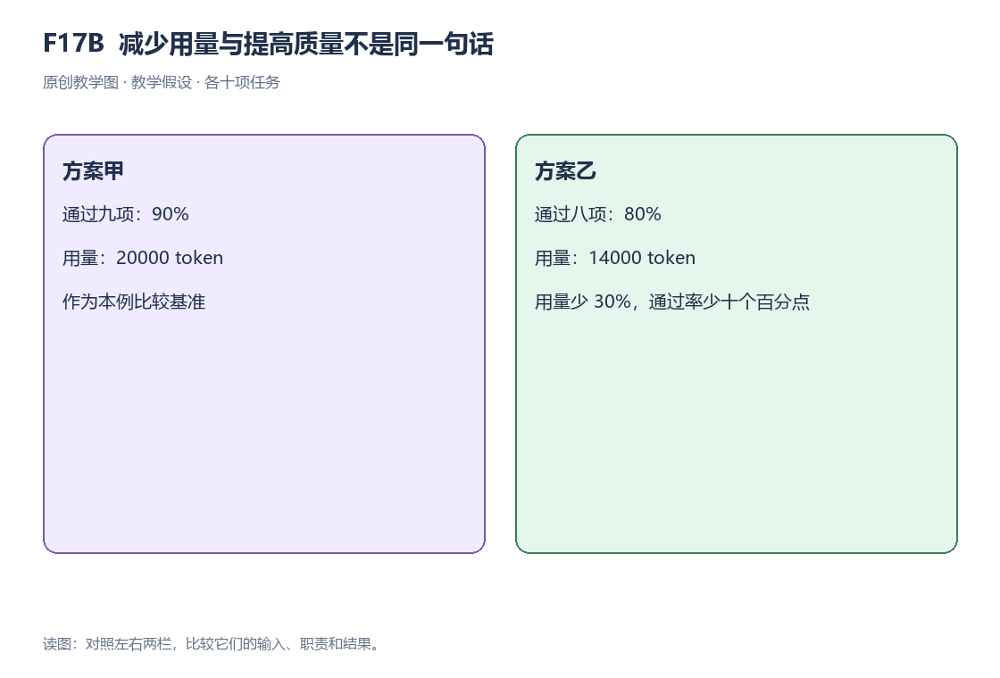
图 17B 使用上面的教学数值。可选任务集包含：普通 README、较长 README、关键限制在后半段、资料读取失败、补充约束。先冻结每项应检查内容，再比较一种明确变更，例如是否按需加载额外技能。不同故障任务的“通过”定义也要明确，例如正确说明资料不足，而非必须生成三点猜测。
记录每次任务的输入标识、配置、产物、检查、时间、用量来源和失败原因。没有可靠 token 报告时标估算；没有终态时间时标缺失；不要把缺失填成零。分析后回到对应材料或执行机制修改，再用相同规则复查。
## 17.7 常见误解
“用量少就是质量好”：上例乙更省却少通过一项。
“通过率从 80% 到 90% 是提高 10%”：绝对差为 10 个百分点，相对增幅为 12.5%，口径必须注明。
“只看成功任务耗时就足够”：失败样本可能消耗更多时间与请求，遗漏会扭曲方案评价。
## 17.8 小结与参考
可靠评价需要统一定义的任务与指标、完整失败记录，以及明确的计量来源。项目已有用量和遥测支持过程观察，业务质量仍需额外检查。下一章把这些知识用于设计一个可验证的扩展。
<!-- references:start -->
原项目文档用于复核，优先保留已有中文版：
- docs/testing.zh.md
- docs/subsystems/token-meter.zh.md
- docs/subsystems/otel.zh.md
- docs/subsystems/session-telemetry.zh.md
行为旁证为测试源码，未在本次执行：
<!-- references:end -->
本章面试问答
Q1 · 评估一个 AI Coding Agent 的工程表现，为什么必须同时度量“质量、时间、用量与失败”四维口径？
回答： 单纯看“最终测试是否通过（质量）”会掩盖严重的工程劣质：例如一个 Agent 经历了 20 次盲目重试（高延迟）、耗费了 50 万 Token（极高成本）才侥幸通过。 原理： 真正的工业级生产力要求在质量（Pass rate）、时间（Wall clock / Latency）、用量（Token consumption & KV Cache hit rate）与容错率（Failure Taxonomy）之间取得最佳帕累托最优。
# 第 18 章｜综合案例：已有文件工具如何接入与呈现
## 18.0 回到项目已经实现的读取工具
最后回到项目已经实现的 read 工具，解释一个能力怎样同时兑现模型参数、实际读取、规范结果、持久记录和界面呈现。它负责取得有限文件材料，后续总结由模型完成；工具本身不是长期知识库。
本章把装配、工具契约、准入、结果、会话与评价合成一条完整链，重点看扩展点怎样在真实能力中兑现。前置为前十七章。
## 18.1 接入已有接口，而不是另造循环
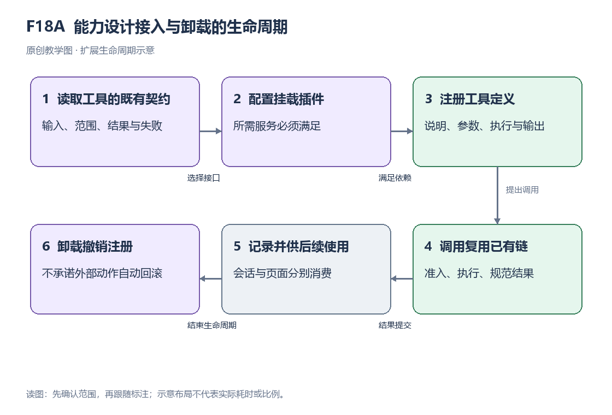
图 18A 是扩展生命周期示意。profile 挂载插件，插件注入服务并注册定义，调用时复用 Tools 链；卸载撤销注册。图没有表达外部副作用自动回滚，也没有让新工具自己另启一套模型循环。
## 18.2 参数、规范值、模型文本和展示元数据
read 的外部参数名是 file_path、offset 和 limit。解析后内部采用 filePath、offset 和 limit；二者命名不同，不意味着有两项文件读取。内部结构在真实源码中是：
interface ReadInput {
filePath: string
offset: number
limit: number
}
执行体返回路径、起始行、行列表和总行数等规范 JSON 值。output.schema 检查结构，output.render 把该值转成模型面对的文本；presentationMeta 抽取可持久化的窗口数据，使支持读取卡片的界面能够重建行号和语言信息。规范值、模型文本和展示元数据各有用途，不能混成一个“返回字符串”。完整规范值并不因存在就自动成为 UI wire 中可恢复的对象。
执行体使用所选文件服务，遵守取消与范围上限。schema 负责形状，额外逻辑检查负责规则；范围截断必须有准确表达。注册还需要插件的 name、inject、apply 与生命周期，单独一个类型定义不能提供能力。
## 18.3 原指南与真实工具各怎样参考
官方最小工具示例说明 defineTool、execute 与 render 的关系，并使用 Node 文件读取展示一个最小形态。实际 tool-fs 使用 DSH 文件服务，不能照抄最小示例后宣称遵循所有路径与版本守卫。
Host 工具呈现与网页专用卡片是另一层工作。规范值不应夹入 React props；展示元数据应可持久、可回放，展示函数保持无 I/O 的相应用途。没有专用卡片也可以有通用显示，不应为了外观先改变模型面对的契约。
## 18.4 用原码观察契约落点
<!-- evidence:start -->
官方最小工具。 name/inject/apply 与参数、输出契约共同组成最小注册形态。
来源：实际文件，第 14—27 行；固定提交。节选保留原码，省略邻近上下文。
export const name = 'my-tool'
export const inject = ['tools']
export function apply(ctx: Context) {
ctx.tools.register(defineTool({
name: 'read_file',
description: 'Read a file from disk.', // what the model sees
parameters: {
path: { type: 'string', required: true, description: 'Absolute path' },
limit: { type: 'number' }, // optional by default
},
output: {
schema: { type: 'string' },
render: (_args, value) => [{ type: 'text', text: value }],
真实读取实现。 已注册执行体使用文件服务，并兑现窗口和取消约定。
来源：实际文件，第 137—150 行；固定提交。节选保留原码，省略邻近上下文。
async execute(args, exec) {
const input = parseReadArgs(args, caps.limit)
// One stat: absence observation OR type check + size routing + present version.
// A concurrent write can only make a later guarded mutation fail stale and require reread.
const { target, info } = await resolveRegularReadTarget(ctx, exec, input.filePath)
// Stream when the file is large OR size is unknown, so a size-less backend
// never buffers an arbitrarily large file.
const chunks = info.size === undefined || info.size >= caps.streamMinSize
? await ctx.fs.streamText(target, exec.signal)
: [await ctx.fs.readText(target, exec.signal)]
const window = await buildWindow(
chunks,
{ offset: input.offset, limit: input.limit, maxLineLength: caps.maxLineLength, maxBytes: caps.maxBytes },
可回放展示材料。 呈现元数据从规范结果提取，不靠回放时再读取文件。
来源：实际文件，第 124—132 行；固定提交。节选保留原码，省略邻近上下文。
presentationMeta: (_args, value) => {
const lang = langFromPath(value.path)
return {
path: value.path,
offset: value.offset,
lines: value.lines.map(({ number, text }) => ({ number, text })),
totalLines: value.totalLines,
...lang === undefined ? {} : { lang },
}
完整阅读路线。 路线区分启动前置、执行主链与提供方对照，不把它们误连为一次同步调用。
- docs/cookbook/adding-a-tool.zh.md，
最小工具结构。输入：能力需求与输入输出契约；输出/交接：确定 name / inject / apply / defineTool 的职责。固定提交第 1 行。 - packages/fs/tool-fs/src/index.ts，
apply。输入：配置与注入服务；输出/交接：以已有文件插件核对注册和生命周期。固定提交第 54 行。 - packages/fs/tool-fs/src/read.ts，
applyReadTool。输入：read 的 schema、execute 与呈现；输出/交接：核对真实工具如何兑现契约。固定提交第 68 行。 - docs/cookbook/extension-cookbook.zh.md，
扩展点选择。输入：需要扩展的层；输出/交接：定位能力接口；把 Host 工具与 UI 扩展分开。固定提交第 1 行。
<!-- evidence:end -->
这条路线连接工具注册、服务读取、有限结果构造和呈现元数据。准入与最终结果仍由通用链负责，文件插件没有把这些职责全写进自己的 execute。
## 18.5 分析示例：什么证据支持“能读文件”
“能读文件”可以拆成不同命题：合法参数可以解析；空路径被拒绝；所选服务取得文本；窗口按范围返回；输出符合规范结构；界面能够从持久元数据呈现窗口。每项分别检查输入、动作、产物或展示，不是只看一个总成功标志。
教学上假设六项里五项符合，仅有“五项符合”这个计数不能说明剩余缺陷是否轻微。若缺失的是范围表达，下游可能误判全文；若缺失的是元数据呈现，模型文本可能仍能显示，但专用卡片无法正确重建。故障要定位到具体契约。
复用通用工具链让文件工具专注取得和表达材料，代价是必须兑现已有 schema、结果、准入和生命周期约定。模型文本与专用卡片分别处理，也避免为了界面格式污染模型材料。
## 18.6 全书机制回到一个任务
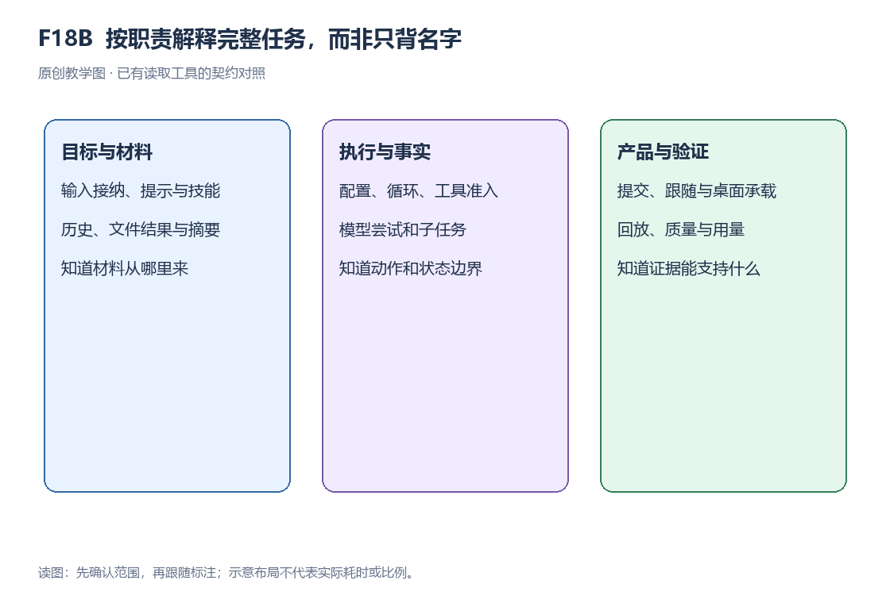
图 18B 是综合结构图，各层表示职责，不是一串必须依次访问全部组件的调用。用户提出总结目标；profile 决定可用能力；驱动领取消息并组织材料；模型提出只读工具调用；准入通过后执行；结果进入会话和后续请求；页面跟随变化；产物按用途、功能、限制三项检查。
材料过长时检查压缩是否保留约束；模型失败时看尝试与恢复；工具拒绝时如实说明没有资料；子任务参与时交代材料并检查汇合。每个条件都回到负责的机制，而不是把所有问题统一归为“提示词不好”。
## 18.7 常见误解
“一段类型定义就是可用插件”：类型不完成挂载、执行或运行验证。
“工具注册后自然有网页专用卡片”：工具行为与客户端呈现分别需要契约。
“更多能力必定更好”：新增接口还带来理解、控制与维护成本，应对准真实任务。
## 18.8 小结与参考
已有文件工具通过扩展点兑现输入输出、准入、取消与生命周期，并为模型与界面分别提供材料。全书至此把一次任务从入口讲到结果与证据；其他后端和可选能力仍需各自的实现解释，不能仅凭目录存在认定已经掌握。
<!-- references:start -->
原项目文档用于复核，优先保留已有中文版：
行为旁证为测试源码，未在本次执行：
<!-- references:end -->
本章面试问答
Q1 · read 工具输出为什么要清晰分为规范值（Schema）、模型文本（Render）和展示元数据（presentationMeta）三层？
回答： 规范值负责机器校验与内部状态传递；模型文本（Render）是送入 LLM 视野的高信息密度文本；presentationMeta 是从规范值提取的可序列化展示卡片数据（如文件路径、行号范围、语言类型）。 原理： “同一事实，三种消费形态”。如果把三者混在一起，不仅污染模型上下文，还会导致历史回放时无法在没有物理文件的情况下恢复 UI 高亮卡片。
第 19 章｜时空可组合性与 Cordis 原理：DeepSeek Harness 微内核的理论奠基
学术溯源：本章基于 DeepSeek-AI 与北京大学研究团队发表的核心理论论文： 《A Programming Paradigm for Spatiotemporal Composability》（Shi, Zhang, Cui, 2026，arXiv:2608.25512 [cs.PL]）。 该论文奠定了 DeepSeek Harness 底层微内核 vendor/cordis 的数理基础与核心计算模型。
在前面的章节中，我们已经见证了 DeepSeek Harness 如何利用微内核装配调度智能体的各项能力。然而，一个更深层的理论问题摆在每一位系统架构师面前： 为什么传统插件系统（如 VS Code 插件、Webpack Loader、Spring 容器）在面临复杂智能体的动态演进与热插拔时，总是难以避免内存泄漏、依赖悬挂或状态撕裂？ 为什么一个插件卸载后，往往必须重启整个 Node.js 进程才敢保证环境纯净？
本章将跳出单纯的工程 API，深入 Cordis 论文的数理内核，全面解构时空可组合性（Spatiotemporal Composability）这一全新编程范式，剖析可逆效果追踪（Revertible Effects）与响应式副效果消解（Reactive Coeffects）的数学公理，并阐明其如何让 DeepSeek Harness 实现零重启动态热重构与安全自愈。
1. 核心困境：动态组合系统为何总是“穿着插件外衣的重启系统”
论文在引言中开宗明义地指出：现代软件系统（特别是自演进的智能体 Harness）要求系统具备在运行时动态重构（Dynamic Recomposition）的能力。
但在现存的工程实践中，绝大多数声明自己支持“热插拔”的系统，本质上都是伪可组合系统：
- 时间维度（Temporal）的不可逆性：插件加载时执行了若干副作用（如注册了事件监听器、启动了子进程定时器、向全局单例挂载了中间件）。当用户调用“卸载插件”时，开发者手写的
unload()函数往往百密一疏——遗漏了一个事件回调解绑或未终止一个后台 Timer，导致内存泄漏并永久污染宿主环境。 - 空间维度（Spatial）的脆弱耦合：组件之间的依赖解析往往是静态的或一次性的。当被依赖的基础服务（例如底层模型适配器
model）发生热升级或被替换时，依赖它的上层组件（如协调调度器orchestrator）无法自动感知并重绑，最终因持有陈旧无效的句柄而抛出不可逆的崩溃。
论文提出的断言振聋发聩：“一个缺乏时间可逆性与空间响应性保证的系统，仅仅是一个穿着插件外衣、本质上依赖全量重启的脆弱系统。”
2. 时空可组合性的双重正交保证
为终结这一困局，Cordis 建立了两个正交的理论支柱，统称为时空可组合性：
┌────────────────────────────────────────────────────────┐
│ 时空可组合性体系 (Spatiotemporal Composability) │
├──────────────────────────┬─────────────────────────────┤
│ 时间可组合性 (Temporal) │ 空间可组合性 (Spatial) │
│ 卸载组件能够【完全回滚】其 │ 组件显式【声明依赖】，运行时 │
│ 所有副作用。每个副作用自带 │ 【响应式】自动消解依赖。服务 │
│ 逆操作，运行时自动逆序执行。 │ 提供者的生命周期长于消费者。 │
└──────────────────────────┴─────────────────────────────┘2.1 时间可组合性（Temporal Composability）：副作用自带逆元
在 Cordis 的理论范式中，所有的状态变更（Mutation）在类型签名上被约束为：
\text{state} \to \text{state} \times (\text{state} \to \text{state})open()必须返回close；register()必须返回unregister；spawn()必须返回kill。
运行时维系一个逆操作累加器（Inverse Accumulator）。卸载组件时，系统严格按照后进先出（LIFO，Last-In-First-Out）的数学顺序依次执行逆操作。组件作者严禁手写卸载逻辑，卸载过程完全由装载时记录的逆元链条自然派生得出。
2.2 空间可组合性（Spatial Composability）：响应式依赖图
组件不再主动探寻外部环境，而是通过静态声明其依赖契约（Coeffects）。 当声明的所有前置依赖全部激活时，组件自动激活；一旦某个关键前置依赖撤离，依赖该服务的下游组件自动、级联地进入卸载流程，杜绝“空指针调用已撤离服务（Use-After-Provider-Gone）”的非法态。
3. 数学契约：三元组形式化定义与 Fiber 计算模型
论文将系统中的每一个能力单元形式化地定义为一个标准组件（Component）：
C = \langle \text{inject}, \text{provide}, \text{apply} \rangleinject（副效果规范 / Coeffects）：该组件激活所必需的有类型服务集合（\mathcal{K}_{\text{req}}）；provide（提供集 / Provisions）：该组件装载后向系统容器暴露的有类型服务集合（\mathcal{K}_{\text{prov}}）；apply（有证副作用函数 / Witnessed Effect Function）：组件被激活时执行的物理逻辑。
// 理论契约映射至 TypeScript 的标准形式
interface Component {
/** 空间维度：声明所需的类型化服务依赖 (Coeffects) */
inject: Key<unknown>[]
/** 空间维度：声明对外提供的类型化服务 (Provisions) */
provide: Key<unknown>[]
/** 时间维度：执行操作并把逆元推入累加器 (Revertible Effects) */
apply(ctx: Context, config: unknown): void
}3.1 Fiber：轻量级组件执行线程
在 Cordis 中，组件（Component）是静态的蓝图，而 Fiber 是组件在特定上下文中的动态运行时实例。 每个 Fiber 拥有独立的派生上下文、生命周期阶段（Lifecycle State）与逆元累加栈。当一个组件被多次实例化（例如多个沙箱实例）时，系统为每一个实例派生一个专属的 Fiber。
4. 核心执行状态机：惯性、退避与原子卸载
论文第 4 节严密形式化了组件 Fiber 的四态生命周期转换模型：
mount
INACTIVE ─────────► LOADING ─────────► ACTIVE
▲ │ │
│ 目标变化 │ │ 依赖撤离 / 销毁
│ (惯性降落) ▼ ▼
└─────────────── UNLOADING ◀───────────┘
逆序执行完毕INACTIVE（就绪未激活）：组件尚未装配，持有 0 个副作用，对系统状态没有任何污染；LOADING（分步装载中）：
- 副作用以迭代器（Effect Iterator）的方式逐步执行，并将逆元压入栈；
- 惯性原则（Inertia Principle）：如果装载过程中途收到取消信号，当前正在执行的单步操作必须完整着陆（Land），绝不在执行途中野蛮杀死，然后再安全流转至
UNLOADING；
ACTIVE（已激活）：所有副作用执行完毕，对外正式发布provide声明的服务，供下游组件绑定；UNLOADING（级联卸载中）：
- 第一步：先停止提供服务（Stop Providing）。组件立即从提供者注册表中注销，迫使所有下游消费者立即开始响应式卸载；
- 第二步：保持接口可读，等待依赖排空。在下游消费者尚未全部撤退前，当前组件的资源（如连接池、文件句柄）依然保持可读，允许消费者在自己的卸载过程中归还资源；
- 第三步：逆序执行逆元栈。待下游完全撤离后，严格按 LIFO 顺序清退自身所有副作用，最终回到
INACTIVE。
5. 交换律与独立性：提供者的契约责任
在多插件并发运行的复杂系统中，最棘手的问题是：在组件 A 记录逆元与执行逆元之间，组件 B 改变了系统状态，A 的逆元还能安全执行吗？
论文在第 5 节通过抽象代数给出了深刻的理论解答：
- 效果独立性（Independence）：
设操作 f 和 g 分别产生逆元 f^{-1} 和 g^{-1}。若 f 与 g 满足交换律（Commutative），即 f \circ g = g \circ f，且两者的逆元执行顺序不影响最终观测结果，则称两者独立。 独立的组件可以按任意顺序卸载，无需受严格入栈顺序绑架。
- Key 的交换律职责属于提供者（Provider's Obligation）：
- 例如，工具注册表（Tool Registry）是一个典型的交换 Key：工具 A 和工具 B 以任意顺序注册或注销，系统观测到的工具集是完全等价的；
- 而中间件管道（Middleware Pipeline）则是一个非交换 Key（顺序敏感）。对于非交换 Key，必须通过外层拓扑（如显式依赖声明）来约束加载与卸载次序。
- 观测等价性（Observational Equivalence
\simeq）：
状态恢复并不追求物理内存地址的逐比特还原，而是追求任何外部观察者均无法察觉到差异。内存释放不要求还原堆碎片分布，只要资源已脱离占用即视为完全逆转。
6. 在 DeepSeek Harness 中的终极映射
DeepSeek Harness 的整体架构完全是 Cordis 论文参考架构（Reference Architecture）的高阶工程兑现：
┌──────────────────────────┐
│ deepseek-ai/cordis 4.0.4 │
│ (时空可组合性微内核基座) │
└─────────────┬────────────┘
│ 派生根上下文 (Root Context)
▼
┌────────────────────────────────────────────────────────┐
│ DeepSeek Harness 核心架构映射 │
├──────────────────────┬─────────────────────────────────┤
│ 论文理论抽象 │ DSH 生产包落地 │
├──────────────────────┼─────────────────────────────────┤
│ Model Broker │ packages/core/agent-default-model│
│ Tool Registry (可交换)│ packages/core/tools │
│ Session Log (单向外发)│ packages/session/session-jsonl │
│ Isolation Realm │ ctx.isolate() 沙箱边界隔离 │
│ Orchestration Loop │ packages/core/agent-loop │
│ Hot Module Swap │ packages/boot/hmr (基于逆元回滚) │
└──────────────────────┴─────────────────────────────────┘- 热模块替换（HMR）零残留：在开发或生产动态更新 Prompt 策略或工具代码时，DSH 直接卸载旧模块的 Fiber，由逆元自动排空事件与连接，新 Fiber 无缝顶替，绝不需要重启 Node 进程；
- 会话沙箱物理隔离：利用论文中的
ctx.isolate()，每个 Agent 或子任务在属于自己的 Realm 派生树中运行，修改被严格局限在当前子树，子树销毁时所有状态随上下文丢弃自然蒸发。
7. 本章小结
- 时空双重保证：时间可组合性保证任何副作用可逆且逆操作由系统逆序自动派生；空间可组合性保证组件间依赖关系响应式更新与有向无环清退。
- 拒绝伪插件设计：依赖全量重启来维护纯净性的系统不是现代插件系统。Cordis 确立了无需重启的动态重构数学规范。
- 架构底层基石：理解了 Cordis 的时空可组合性，就彻底读懂了 DeepSeek Harness 在高并发、长程运行和复杂多 Agent 协同下保持高内聚、零污染与故障自愈的理论根源。
本章面试问答
Q1 · 面试官：你们系统基于 Cordis 微内核构建，请问 Cordis 核心论文提出的“时空可组合性（Spatiotemporal Composability）”究竟解决了微内核插件架构的什么痛点？
回答： 传统的插件架构（如 VS Code 扩展或 Spring 体系）普遍存在两大痛点： 一是时间维度的不可逆：插件在 activate() 时注册了大量监听器、定时器或修改了全局状态，但在卸载时，开发者手写的 deactivate() 容易遗漏清理代码，导致必须全量重启应用才能恢复干净环境； 二是空间维度的悬挂崩溃：当某个底层依赖服务发生热更新或被卸载时，上层依赖它的消费者无法感知，容易因持有陈旧句柄发生空指针崩溃。
Cordis 论文从数学上提出了时空可组合性解决方案：
- 时间可组合性（Temporal）：任何操作必须被约束为“产生新状态并返回自身的逆元函数（Inverse）”。卸载时由框架的逆元累加器按后进先出（LIFO）自动逆序回滚，无需手写销毁逻辑，确保副作用 100% 干净反转；
- 空间可组合性（Spatial）：引入响应式副效果（Reactive Coeffects）。组件通过
inject声明类型化契约，底层服务撤离时，框架自动、级联地卸载依赖它的消费者，保证提供者的生命周期严格长于消费者，从根源上消除了悬挂调用与内存泄漏。
原理： 抽象代数中的可逆映射（Invertible Maps）与范畴论中的副效果消解（Coeffect Resolution）。将运行时的动态组装提升为由类型系统和状态机保证的严格数学演算。
追问：在插件卸载（UNLOADING）过程中，Cordis 为什么要求“先停止提供自身服务，但在下游彻底清退前依然保持资源可读”？ 应答要点： 这是为了防止“释放后使用（Use-After-Free）”的破坏性竞争。如果提供者立即销毁物理资源（如直接关闭数据库连接池），依赖它的消费者在接收到卸载通告并执行自我清理时，往往需要向连接池归还正在使用的连接，直接销毁会导致消费者报错崩溃。Cordis 的两阶段卸载契约保证：先在逻辑上声明自己不再接纳新请求，等待所有已挂载的消费者优雅退场并归还资源后，最后才物理执行逆元销毁底层资源，从而实现系统级的确定性优雅停机。
附录
# 附录：基础与术语随用随查
## A｜最小 TypeScript 速查
类型描述数据形状，语句描述运行行为。下面都是教学示意，帮助阅读，不是可直接安装到 DSH 的插件。
type Result = { accepted: boolean }
const item = { name: '读取工具', count: 1 }
const count = item.count
async function submit(): Promise<Result> {
return { accepted: true }
}
type 声明类型别名；对象用花括号组织属性；点号访问属性；async 返回异步结果；Promise<Result> 说明兑现后的值符合 Result。不能根据名称把 accepted 当作整个任务完成。
type Options = { offset?: number }
const offset = options.offset ?? 1
const all = [...existing, added]
问号表示可缺省，?? 只在左值为 null 或 undefined 时取右值，展开运算符生成包含既有元素的新数组。它们不自动深拷贝所有嵌套对象；需要看项目明确的复制和冻结步骤。
try {
await action()
} catch (error) {
report(error)
} finally {
release()
}
try/catch 区分普通与异常路径，finally 用于两种情况下都执行的收尾。finally 中也可能失败；真正的实现需要确定收尾失败与原结果的关系，不能只因写了 finally 就声称所有资源绝对已释放。
for await 消费异步序列；signal 传递取消；import type 引入类型信息；export 允许其他模块引用。出现泛型时，先看它约束哪个输入和输出，再决定是否要读全部类型推导。
## B｜核心术语对照
| 中文 | 源码标识或英文 | 在本项目的用途 |
|---|---|---|
| 智能体运行框架 | Harness | 组织请求、能力与过程 |
| 会话 | Session | 保存事实并派生用途视图 |
| 轮次 | turn | 驱动的一段推进边界，可无步骤 |
| 步骤 | step | 组织模型请求与成功后的工具阶段 |
| 尝试 | attempt | 一次模型请求尝试，失败可在同一步恢复 |
| 收件箱 | inbox | 待领取输入与进入目标 |
| 提示词组装 | assemble | 按贡献与作用域形成材料 |
| 提供方 | provider | 兑现某项能力契约的具体实现 |
| 运行配置 | profile | 组合声明、配置层与实际插件树 |
| 组合包 | bundle | 分发配置条目及相应挂载材料 |
| 投影 | projection | 从事实整理特定用途的状态 |
| 当前表层 | surface | 当前消息表示所采用的节点与规则 |
| 临时流片段 | chunk | 请求进行中的片段，不自动等于提交消息 |
| 快照 | snapshot | 一个游标处的可观察状态 |
| 刷新屏障 | flush | 等待提供方兑现相应刷新契约 |
| 回放 | replay | 用已知响应重走真实工程过程 |
| 词元 | token | 模型处理与计量单位，不等于字符或行 |
## C｜一条任务的职责地图
入口控制器检查并接纳请求；收件箱保存输入；驱动领取并组织步骤；提示、指令与历史形成请求材料；模型生成文字或工具提议；工具服务检查准入并分派；具体提供方完成动作；会话记录事实；模型继续使用结果；客户端观察并显示；产物检查判断业务质量。
这段地图表示职责关系，不保证每次任务都会用技能、压缩、MCP 或子代理。是否存在、是否启用、是否实际调用，需要不同证据。正常轮次结束也不自动证明产物准确。
## D｜证据的读法
代码说明已实现的分支；文档说明职责与使用约定；测试源码说明作者怎样检查行为；真实执行记录说明一次配置下实际发生什么。它们互补，不能互相冒充。本书基于固定提交的静态检查，没有运行项目测试或真实模型任务。
可选证据附录中的代码片段带实际文件、行号和固定提交链接。正文无需阅读这些片段即可理解。片段为解释一个结论而省略邻近代码，不保证能单独运行。全部原文和源码保留在 source，修改或深入时回到完整定义，尤其检查注册、绑定、消费、取消和收尾。
## E｜继续阅读原项目
项目架构先看 架构说明，插件概念看 Cordis 入门，过程关系看 轮次与步骤生命周期，工具边界看 工具流水线，验证方式看 测试指南。逐章材料见 参考索引。
正文已经解释核心运行链以及官方目录中 63 项子系统的功能、协作与主要边界，包括可选执行、语音、定时、团队与 SDK 载体。深入修改项目时，精确 API/配置字段、每个平台沙箱内部、所有后端实现与发布矩阵仍需查相应版本手册；这些细节不作为本教材阅读前提。